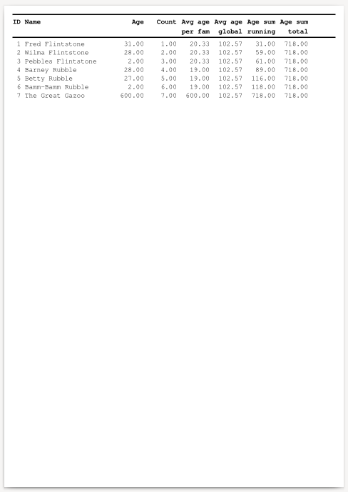

OpenCReports 0.8.3 Manual
Copyright © 2019-2023 Zoltán Böszörményi
Permission is granted to copy, distribute and/or modify this document under the terms of the GNU Free Documentation License, Version 1.2 or any later version published by the Free Software Foundation; with no Invariant Sections, no Front-Cover Texts, and no Back-Cover Texts. A copy of the license is included in the section entitled "GNU Free Documentation License".
Table of Contents
- 1. Introduction and concepts
- 2. Report XML description
- 2.1. XML description structure
- 2.2. OpenCReport element
- 2.3. Paths
- 2.4. Datasources
- 2.5. Queries
- 2.6. Report parts
- 2.7. Part row
- 2.8. Part column
- 2.9. Report
- 2.10. Loaded report
- 2.11. Variables
- 2.12. Variable
- 2.13. Breaks
- 2.14. Break
- 2.15. Output
- 2.16. Line
- 2.17. Text element
- 2.18. HorizontalLine
- 2.19. Image
- 2.20. Image end
- 2.21. Color specification
- 3. Expressions in OpenCReports
- 4. Report breaks
- 5. Report variables
- 6. Formatting
- 7. C language API reference
- 8. PHP language API reference
- 8.1. The OpenCReports PHP module
- 8.2. The OpenCReport class
- 8.3. High level PHP API
- 8.4. Low level PHP API
- 8.5. The OpenCReport\Datasource class
- 8.6. The OpenCReport\Query class
- 8.7. The OpenCReport\QueryResult class
- 8.8. The OpenCReport\Expr class
- 8.9. The OpenCReport\Result class
- 8.10. The OpenCReport\Part class
- 8.11. The OpenCReport\Row class
- 8.12. The OpenCReport\Column class
- 8.13. The OpenCReport\Report class
- 8.14. The OpenCReport\Variable class
- 8.15. The OpenCReport\Break class
- 8.16. The OpenCReport\Output class
- 8.17. The OpenCReport\Line class
- 8.18. The OpenCReport\HorizontalLine class
- 8.19. The OpenCReport\Image class
- 8.20. The OpenCReport\Text class
- 8.21. RLIB compatibility API
- 9. Examples
- 10. GNU Free Documentation License
Chapter 1. Introduction and concepts
Table of Contents
- 1.1. The predecessor: RLIB
- 1.2. Concepts
- 1.2.1. What is a report generator?
- 1.2.2. XML based report description
- 1.2.3. Comprehensive API for report creation
- 1.2.4. Strict expression parser
- 1.2.5. Expression optimization
- 1.2.6. Report variables
- 1.2.7. Extensive and extensible set of functions
- 1.2.8. UTF-8 string handling
- 1.2.9. High precision numeric data type
- 1.2.10. Datetime and interval data types
- 1.2.11. Automatic input data conversion
- 1.2.12. Versatile field alignment and multi-row fields
- 1.2.13. Report breaks
- 1.2.14. Multi-column reports
- 1.2.15. Layout details
- 1.2.16. Multiple output formats
- 1.2.17. Extensive set of unit tests
- 1.2.18. Standard Linux dependencies
- 1.3. OpenCReports planned features
1.1. The predecessor: RLIB #
The idea to write OpenCReports started with my getting acqauinted with RLIB in 2005 and working with it (and on it) for a very long time, with the original implementors finally losing interest in developing RLIB further. This was around 2018. Even the original documentation site for RLIB was retired. But thanks to the Internet Archive, it may still be read
To overcome some of the shortcomings seen in RLIB, its ideas were used for a completely new implementation with high level of compatibility to the original.
RLIB is a report generator library, so is OpenCReports. In this documentation, a lot of references contain comparisons to RLIB.
The name OpenCReports came from the fact that it's implemented in the C programming language in an open way, and using a free software license.
1.2. Concepts #
- 1.2.1. What is a report generator?
- 1.2.2. XML based report description
- 1.2.3. Comprehensive API for report creation
- 1.2.4. Strict expression parser
- 1.2.5. Expression optimization
- 1.2.6. Report variables
- 1.2.7. Extensive and extensible set of functions
- 1.2.8. UTF-8 string handling
- 1.2.9. High precision numeric data type
- 1.2.10. Datetime and interval data types
- 1.2.11. Automatic input data conversion
- 1.2.12. Versatile field alignment and multi-row fields
- 1.2.13. Report breaks
- 1.2.14. Multi-column reports
- 1.2.15. Layout details
- 1.2.16. Multiple output formats
- 1.2.17. Extensive set of unit tests
- 1.2.18. Standard Linux dependencies
1.2.1. What is a report generator? #
A report generator uses a tabular data source, which contains rows and columns of data. The columns have labels or names. (An SQL database query is such a tabular data source.) It also uses some kind of description that specifies how to display the data. The input data is transformed into various output formats, some for human viewing, some for further machine processing. Such output formats may be PDF, HTML, XML, plain text or CSV.
1.2.2. XML based report description #
The XML file format is widely used. It can describe structured data in a hierarchy with names for its sections or "nodes".
OpenCReports uses an RLIB-compatible report description with extensions. See XML description and the RLIB documentation
1.2.3. Comprehensive API for report creation #
The Low level C API allows creating a report purely via program code. The High level C API allows loading an XML report description that contains all details about the report, including database access. Mixing the high and low level APIs allows a balance anywhere between the two extremes. For example, load the report description, which contains the complete layout, and pass database access details via program code. RLIB's API and report description allowed neither extremes, it relied on the report description to provide the layout, with the data access added from programming code.
1.2.4. Strict expression parser #
OpenCReports uses a Flex/Bison based expression parser. The expression grammar doesn't allow buggy expressions. See the Expressions chapter.
RLIB's expression parser was a custom implementation which was slightly fragile and forgiving. For example, it allowed unclosed parentheses at the end of an expression.
1.2.5. Expression optimization #
OpenCReports does some expression optimization
to reduce runtime cost of computing expression
values. For example, in a*2/3
the part 2/3 is two constants
in a division. This is precomputed into a single
constant as an optimization.
RLIB didn't contain automatic optimizations. It relied on manual optimizations, like using Report variables.
1.2.6. Report variables #
OpenCReports supports standard report variables for calculating sums, minimum, maximum and average values or custom defined ones. See Report variables
1.2.7. Extensive and extensible set of functions #
OpenCReports has many operators and functions to be used in expressions. See Operators and functions in the Expressions chapter.
In fact, OpenCReports has all the operators and functions that RLIB also had, with many additions.
Custom functions can also be added to a report by programming code. Custom functions may override stock functions.
1.2.8. UTF-8 string handling #
OpenCReports exclusively uses UTF-8 for strings. Input data must be in UTF-8 and output formats also use UTF-8.
RLIB could have been built with or without UTF-8 support. The build that disabled UTF-8 support relied on single byte character set encodings and conversion between them. That wasn't always reliable. Since that time, multibyte character encodings have won.
1.2.9. High precision numeric data type #
For historic record, RLIB was designed for the US and slower machines. It used a fixed point numeric representation. For the US, with its strong currency and prices expressed in low numbers, this was an acceptable design decision. But for countries, whose currencies are a few orders of magnitude weaker and conversely, the prices are similarly higher, the fixed point numeric value range was easily overflown, leading to wrong data in the report output.
Another potential problem with the fixed point numeric
representation was that converting numbers from the
input data to this internal representation always and
unconditionally rounded down. This can be demonstrated
with a carefully constructed (small) data set that would
add up exactly to 100% both on paper and with using the
IEEE-754 double data type, it would
only add up to 99.99% with RLIB's internal numeric
representation.
To avoid these kind of problems, OpenCReports uses GNU MPFR floating point values with 256-bit precision by default. This allows storing very large and very small numbers. E.g. this allows computations even with late stage hyperinflation prices. See Numeric constants in the Expressions chapter and the Numeric behavior related functions part in the Low level C API chapter.
1.2.10. Datetime and interval data types #
OpenCReports differentiates between timestamp and time interval data types, with the latter allowing adding or subtracting a custom time period to and from timestamp data. See Datetime constants in the Expressions chapter.
1.2.11. Automatic input data conversion #
For maximum portability, databases provide their data in strings. They also provide metadata that describes the data type of every column in the data record.
RLIB relied on explicit data conversion functions,
like val() and
stodt().
OpenCReports discovers the columns' data type
and applies the conversion automatically. For
RLIB compatibility, the conversion functions
pass through values as is if they are already
converted. For example, the val()
function accepts an operand with both string and
numeric data types. In the former case the conversion
to numeric is performed, but if the operand is
already numeric, no further conversion takes place.
This is user friendly in two aspects: the conversion
function is not necessary when implementing a new
report, and an already existing RLIB report (that
contains such conversion functions for the input data)
may be used as is.
1.2.12. Versatile field alignment and multi-row fields #
In the report output, fields may have a fixed width in which they are displayed. Some field values are longer that the field width. When displaying them in a single row, fields may be left-, right- or center-aligned. With the PDF output, this means pixel-perfect alignment with the parts of the field value that don't fit masked off visually. RLIB aligned the data actually truncated to fit into the field width.
Fields longer than the designated width may be wrapped either at word or character boundaries. This way, they become multi-row fields. RLIB called them "memo" fields and the XML report description in OpenCReports also uses the same naming for the flags dealing with this detail. Multi-row fields are configurable regading word or character wrapping, or they may be limited to print only a certain amount of lines. Memo fields can break over column or page boundaries.
OpenCReports have some differences from RLIB regards to memo fields.
Thanks to Pango rendering, when using character wrapping, hyphenation is done.
The second extension over RLIB is that
justified alignment can also be
used for multi-line fields. This is also thanks to
Pango. When justified alignment is
used, all lines but the last are justified. Therefore,
justified alignment is equivalent to
left alignment for single line fields.
1.2.13. Report breaks #
OpenCReports supports report breaks defined on arbitrary expressions. Breaks occur when the expression value changes, when stepping from one data set row to the next. See Report breaks and Breaks
1.2.14. Multi-column reports #
OpenCReports, just like RLIB, supports both single-column and multi-column report layout.
If a report is "narrow", so more columns would fit on the same page, the report may be set to use multiple columns on the same page.
1.2.15. Layout details #
In RLIB, sizing of layout details are a mix of units, making it harder to design the report layout:
field widths and report heights are in number of characters
width of lines are in points (1/72th inch)
width of gaps between columns of a multi-column report is in inches
OpenCReports faithfully reimplements these for compatibility.
However, there are problems with field widths calculated in number of characters. Widths using a 12 point font is not the same as widths using a 20 point font. Also, font width and height are usually not identical. Some fonts are lean, with their width smaller than their height. RLIB expected that fonts are using the same character width and height. For this reason, RLIB only supported a small variety of monospace fonts.
Also, character widths for proportional fonts differ. Field width expressed in number of characters cannot be exact when using proportional fonts. For this reason, RLIB didn't support proportional fonts at all.
OpenCReports extended upon these ideas, so individual fields in a text line may use custom font settings while keeping the field width calculation identical to RLIB, which ends with the font parameters set for the text line. In OpenCReports, the fields' custom font settings (font name and size) don't influence the field width. Using this method, OpenCReports may use proportional fonts even with using the RLIB compatible size settings.
On top of that, OpenCReports also has a new, consistent size calculation method where everything is measured in points.
1.2.16. Multiple output formats #
OpenCReports supports several output formats: PDF, HTML, CSV, TXT, XML and JSON.
By using the excellent drawing possibilities of Cairo coupled with Pango for text rendering, OpenCReports supports generating the report in PDF format. PDF is the definitive output format in OpenCReports, as in it supports every feature described in XML description, such as
page breaks (PDF is a multi-page format)
all four page margins: top, bottom, left, right
column breaks, multi-column reports
report column width and height
When using the HTML output format, OpenCReports attempts to imitate the PDF drawing capabilities using CSS. However, there are inevitable differences.
The HTML output doesn't support page breaks. HTML is rendered as a continuous flow of text and other elements. As a consequence,
r.pagenoandr.totpagesare both 1 for the whole output.HTML output doesn't support column breaks. As a consequence, a multi-column report layout is rendered differently from PDF.
When a data row's column does not fit into the width specified by the page margins or the report column's width, it is rendered in the remaining width differently from PDF. While PDF uses the whole field width to render the data field contents and uses bounding box to clip the invisible part, CSS uses the remaining width specified by either the margins or the report column width to render the field. Left, right and center alignment of the field is done according to the remaining width for the field.
When rendering field data wider than their field widths, both the PDF and the HTML output drivers use clipping (bounding box) to hide parts of the field, fitting them into the designated area visually. Actual field data is not truncated. In some viewer applications (e.g. in Poppler based PDF viewers) a visibly truncated field's whole text can be selected, copied and pasted elsewhere to be viewed in its entirety. Field data in HTML behave the same way in browsers.
OpenCReports also supports CSV, XML and JSON as output formats that don't truncate field data. These are plaintext formats with their own internal format. CSV is usually used for importing into office applications or databases. In general, these formats are used in applications where loss of data may not be tolerated. These formats don't support page or column breaks. CSV does not have a way to express multiple inner reports in a table in the same report run.
OpenCReports also supports TXT (plaintext) as output format, that approximates RLIB's TXT output. This format may truncate field data because it expects monospace font and character based field widths; and fields in this format cannot be presented separately like in other formats. The TXT format doesn't support page or column breaks. Its rendering ignores font name and font size settings and renders everything internally using a monospace font at 12 point font size.
1.2.17. Extensive set of unit tests #
The unit tests ensure that OpenCReports' features keep working when adding new features or fixes. Units tests exercise many aspects of the high and low level API, report description handling, runtime behavior and output generation.
1.2.18. Standard Linux dependencies #
OpenCReports uses LibXML2, utf8proc, MPFR, libpaper, libcsv, yajl, Cairo, Pango, librsvg2, gdk-pixbuf2, PostgreSQL, MariaDB and unixODBC.
For running the unit tests,
Ghostscript
and compare from
Imagemagick
are also needed.
xmllint, xsltproc
and fop are used to generate the
documentation.
1.3. OpenCReports planned features #
1.3.1. Graph and chart support in HTML and PDF output #
Currently Gantt chart and various graph types (like barchart, pie chart and their various subtypes) are not supported.
1.3.2. Visual editor for report XML descriptions #
There are other report generators on the market with nice GUIs to create the report visually.
Chapter 2. Report XML description
Table of Contents
- 2.1. XML description structure
- 2.2. OpenCReport element
- 2.3. Paths
- 2.4. Datasources
- 2.5. Queries
- 2.6. Report parts
- 2.7. Part row
- 2.8. Part column
- 2.9. Report
- 2.10. Loaded report
- 2.11. Variables
- 2.12. Variable
- 2.13. Breaks
- 2.14. Break
- 2.15. Output
- 2.16. Line
- 2.17. Text element
- 2.18. HorizontalLine
- 2.19. Image
- 2.20. Image end
- 2.21. Color specification
2.1. XML description structure #
OpenCReports uses an RLIB-compatible report description with extensions.
The report XML description, like all XML files start with declaring that it's an XML file and the optional declaration of the Document Type Definition that the XML file can be checked against. For an OpenCReports report description, the first two lines are:
<?xml version="1.0"?> <!DOCTYPE OpenCReport SYSTEM "opencreport.dtd">
The DTD file opencreport.dtd can be
found in the sources of OpenCReports
here.
After the XML header lines, a fully specified report description looks like this:
<OpenCReport>
<Datasources>
...
</Datasources>
<Queries>
...
</Queries>
<Part>
<pr>
<pd>
<Report>
...
</Report>
</pd>
</pr>
</Part>
</OpenCReport>or like this:
<OpenCReport>
<Datasources>
...
</Datasources>
<Queries>
...
</Queries>
<Report>
...
</Report>
</OpenCReport>
The XML sections Datasources and Queries are optional in the XML description. They can be substituted by program code using the datasource and query related calls in the Low level C API, similarly to RLIB.
For RLIB compatibility, a report description may start
with either <Part> or
<Report> as the toplevel node.
In this case, there's no other way to add datasources
and queries, but through program code, like the
Low level C API.
Since XML files are hierarchical with a single toplevel
node with child nodes, multiple
<Report>s were only possible
if using <Part> as the
toplevel node with all the nodes having to be spelled
out between <Part> and
<Report>. With
<OpenCReport> being the
toplevel node, multiple <Report>
child nodes can be used without the parent
<Part> node.
2.1.1. Notes about XML syntax and attributes #
Most (if not all) XML attributes in the report description file are handled with the expression parser (see Expressions), with fallback to literal strings if the the location of expression wouldn't allow identifier references at that location.
For example, the datasource name may be declared this way:
<Datasource name="mysource" ... />
where the name is a literal string. Or this way:
<Datasource name="'mysource'" ... />
where the name is a string expression. (Note the extra quotes.) Or even this way:
<Datasource name=""mysource"" ... />
where name is a string expression which uses the
" double quote character which
must be "escaped" according to XML rules. This last
variant is less readable than the first two.
Nevertheless, it is usable and it works, so machine
generated XML files may also be used.
The first form is a regular XML string value.
Since expression parsing would find that
mysource is an identifier
which may be a query column name and this is not
a valid place for a query reference, the non-parsed
string value is used.
The second form is a single quoted OpenCReports string constant. The parsed string constant's value is used.
The third form is a double quoted OpenCReports
string constant, but in XML the double quote
character must be substituted with
" because they are
reserved for quoting the attribute values.
The parsed string constant's value is used.
(This substitution is called "string escaping"
and various other formats require some kind of
substutition for reserved characters.)
To make the XML easier to read, the second form is recommended because it still allows embedding the single quote character inside a string (see XML description) in case e.g. a strong password contains this. For security-by-obscurity, the third form may be used because it is harder to read. For all special characters that should be escaped in XML, see Simplified XML Escaping.
2.2. OpenCReport element #
The toplevel <OpenCReport>
element controls some global settings and serves
as the topmost XML element for child elements.
2.2.1. Size unit attribute #
The size_unit attribute
specifies report behaviour for size related
settings:
<OpenCReport size_unit="rlib"> <OpenCReport size_unit="points">
Default is rlib
which is the legacy RLIB behavior, with the
known inconsistency in size related settings:
width for
fieldandliteral(see Output node) are in number of characters. This is influenced by the font size set in either Part font size, Report font size or Line font size.height for Part column is measured in number of characters influenced by Part font size
height for Report is measured in number of characters influenced by Part font size and Report font size
width of horizontal lines and the optional border width around reports are specified in points
gaps between columns of multi-column reports is measured in inches
Note that the default setting (as in RLIB) only ever expected monospace fonts that have the same width for every character. It also expected that the character height is identical to the character width. The latter detail is false for many monospace fonts, i.e. their height is usually greater than their width.
With proportional fonts (where the width of
characters depend on their image, i.e. an "i" is
thinner than an "m") width of text fields cannot
reliably be set in "number of characters" because
it's not an exact value. There is a workaround for
this in OpenCReports but it's
an over-engineered solution and isn't available
in RLIB so it's not backward compatible either.
But it's there if someone wants to port reports
from RLIB and only make superficial changes.
See Text element width.
When size_unit is set to
points, all size related
settings in the report are in points,
a.k.a. 1/72th inch. Straightforward and consistent.
2.2.2. No query show NoData #
This controls whether NoData node is shown when the report's Query attribute is set to a non-existing query name.
<OpenCReport noquery_show_nodata="yes"> <OpenCReport noquery_show_nodata="no">
Default is true when
OpenCReport is the toplevel node,
false when either
<Part> or <Report>
is the toplevel node for RLIB compatibility.
See NoData node.
2.2.3. Report height after last #
It controls whether report height is applied
after the last <Report>
in the <pd> node.
<OpenCReport report_height_after_last="yes"> <OpenCReport report_height_after_last="no">
Default is false.
2.2.4. Follower match single #
When set to false, N:1 followers behave
fully like LEFT OUTER JOIN in SQL,
with duplicating data from the primary query if multiple
matching rows exist in followers. When set to
true, only the first matching row is used.
The latter approximates the RLIB implementation.
<OpenCReport follower_match_single="yes"> <OpenCReport follower_match_single="no">
Default is false, unless the report XML
descriptor uses either <Part> or
<Report> as the toplevel XML node.
In the latter case, this attribute is automatically set
to true.
2.2.5. Precision bits #
This controls the precision for numeric computations.
<OpenCReport precision_bits="256">
Default is 256.
2.2.6. Rounding mode #
This controls the rounding mode for numeric computations.
Possible values are:
nearest,
to_minus_inf,
to_inf,
to_zero,
away_from_zero, or
faithful.
<OpenCReport rounding_mode="nearest"> <OpenCReport rounding_mode="to_minus_inf"> <OpenCReport rounding_mode="to_inf"> <OpenCReport rounding_mode="to_zero"> <OpenCReport rounding_mode="away_from_zero"> <OpenCReport rounding_mode="faithful">
Default is nearest.
According to the MPFR documentation,
faithful is experimental.
2.2.7. Locale #
This controls the language settings, like the decimal separator, weekday names, month names and similar. This setting is also used as the language of translation.
<OpenCReport locale="de_DE">
Default is C locale which
approximates US English.
2.2.8. Translation settings #
These two settings control the translation.
<OpenCReport
translation_domain="mydomain"
translation_directory="/path/to/translation/files">
Translation is based on GNU Gettext.
A subdirectory tree is expected under the specified
translation directory in the form of
locale/LC_MESSAGES (e.g.:
de_DE/LC_MESSAGES) with
mydomain.mo files in them.
These .mo files contain translated
messages for a given language.
2.3. Paths #
Some report descriptiom elements (like
<load> and
<Image>, see
Loaded report and Image node)
reference files. By default, these files must
be in the same directory as the report XML
description file, or in the current working
directory for the application using OpenCReports.
To lift this limitation, and allow organizing files
in a more logical manner, a search path or
multiple search paths may be added.
For files referenced with relative paths, the
search paths will be used in their order of
declaration. Search paths and the relative file
path are concatenated together to form an absolute
path. The first successful absolute file path
match will be used in the element referencing
the file.
Search paths are in the following format:
<Paths>
<Path value="/absolute/path" />
...
</Paths>
2.4. Datasources #
Datasources in OpenCReports are either database connections, or accessors (mini-drivers) for data files in certain formats.
Datasource descriptions are in the following format:
<Datasources>
<Datasource name="mysource" type="..." ... />
</Datasources>
A report may have multiple datasources, i.e.
the description may list multiple
<Datasource> lines.
Datasources must have unique names in a report and
their type may be:
mariadb (or mysql),
postgresql, odbc,
csv, json,
xml or array.
2.4.1. MariaDB (MySQL) database connection #
A MariaDB database connection may be declared in three ways. Either by using the database host and port, the database name, user name and password directly:
<Datasource
name="mysource" type="mariadb"
host="..." port="..."
dbname="..." user="..." password="..." />or alternatively, instead of the host and port, specifying the UNIX Domain Socket file for a local connection if it's not in the standard location:
<Datasource
name="mysource" type="mariadb"
unix_socket="..."
dbname="..." user="..." password="..." />or moving these details out to an external configuration file in an INI file format:
<Datasource
name="mysource" type="mariadb"
optionfile="myconn.cnf" group="myconn" />
In the second case, the configuration file myconn.cnf
would contain something like this:
[myconn] !include /etc/my.cnf database=mydb user=myuser #password= #host= #port= #unix_socket=
Please note that the INI group name [myconn]
matches group="myconn" in the above
datasource declaration.
The database name and user name are mandatory. The user password is optional, depending on the database security authentication setup.
The database host and port, or the socket file location are all optional. Without these, a local connection is attempted using the default settings. If the host name is specified but the port isn't, the remote host is used on the default port (as known by the local MariaDB database client library).
2.4.2. PostgreSQL database connection #
A PostgreSQL database connection may be declared in three ways. Either by using the database host and port, the database name, user name and password directly:
<Datasource
name="mysource" type="postgresql"
host="..." port="..."
dbname="..." user="..." password="..." />or alternatively, instead of the host and port, specifying the UNIX Domain Socket file for a local connection if it's not in the standard location:
<Datasource
name="mysource" type="postgresql"
unix_socket="..."
dbname="..." user="..." password="..." />or using a so called connection string:
<Datasource
name="mysource" type="postgresql"
connstr="..." />
For the connection string format, see the PostgreSQL documentation.
The database name and user name are mandatory. The user password is optional, depending on the database security authentication setup.
The database host and port, or the socket file location are all optional. Without these, a local connection is attempted using the default settings. If the host name is specified but the port isn't, the remote host is used on the default port (as known by the local PostgreSQL database client library).
2.4.3. ODBC database connection #
The above described MariaDB and PostgreSQL database connection types are using their respective client libraries. There is a more generic way, i.e. ODBC. ODBC was invented by Microsoft in the 1990s for Windows. See Microsoft Open Database Connectivity (ODBC) In their solution, there's an abstract client library and individual database drivers adhere to the APIs offered by ODBC toplevel library. Since then, UNIX and UNIX-like systems also gained their ODBC client libraries in two different implementations, both of which are supported by OpenCReports: unixODBC and iODBC.
An ODBC database setup is done a differently. There are
two system-wide configuration files. The first one is
odbcinst.ini that lists the database
drivers installed into the system. The second one is
odbc.ini which references the first
one and lists pre-defined database connections. These
database connections are named. In ODBC speak, these
are called Data Source Names or DSNs. The DSNs specify
the low level connection parameters, like the database
host and port, and optionally the user name and
password, too.
Thus, an ODBC database connection may be declared in two ways. The first way is by using the DSN name, and optionally the user name and password:
<Datasource
name="mysource" type="odbc"
dbname="..." user="..." password="..." />
In this case, the dbname attribute
is not the low level database name, but the ODBC
abstract DSN name.
There's also a way to use the so called connection string which contain the same connection information:
<Datasource
name="mysource" type="odbc"
connstr="..." />
For the connection string format, see the public examples.
2.4.4. CSV file datasource #
CSV ("Comma Separated Values") is a simple tabulated file format. Every line must have the same number of columns, for which the values are separated by commas. The first line in the file contains the column names.
A CSV file datasource is declared very simply:
<Datasource name="mysource" type="'csv'" />
In this case, the actual CSV file is not declared,
only that a "query" using a CSV file will be listed
later under <Queries>.
This datasource is less smart than others, in that
is cannot specify data type for columns. Every column
is assumed to be a string, regardless if the values
themselves are quoted or not in the file. Data
conversion functions must be used, like
val(), stodt()
or interval().
2.4.5. JSON file datasource #
Similarly to CSV, the JSON file datasource is also declared very simply:
<Datasource name="mysource" type="'json'" />
In this case, the actual JSON file is not declared,
only that a "query" using a JSON file will be listed
later under <Queries>.
A JSON file datasource is expected in this format:
{
"columns": ["colname1", ... ],
"coltypes": ["type", ... ],
"rows": [
{ "colname1": value1, ... },
...
]
}
The JSON file is expected to list the column
names in a string array called columns.
The column types are optionally listed in the string
array called coltypes. If they are
listed, the coltypes array must have
the same number of strings as the columns
array. The types may be string,
number or datatime.
If the column type array is missing, then all data
values are assumed to be strings and data conversion
functions must be used, like val(),
stodt() or interval().
The rows are listed in an array called rows
and column data values for each row are in a collection
with data names from the columns and
data types from the coltypes arrays.
2.4.6. XML file datasource #
Similarly to CSV and JSON, the XML file datasource is also declared very simply:
<Datasource name="mysource" type="'xml'" />
In this case, the actual XML file is not declared,
only that a "query" using an XML file will be listed
later under <Queries>.
An XML file datasource is expected in this format:
<?xml version="1.0"?>
<data>
<rows>
<row>
<col>value</col>
...
</row>
...
</rows>
<fields>
<field>column1</field>
...
</fields>
<coltypes>
<col>type1</col>
...
</coltypes>
</data>
The XML section names <data>,
<rows> and
<fields>
are the same as they were in RLIB for its XML data
source. The order of <rows>
and <fields> is not important.
But the order of field names in <fields>
must match the column value order in each
<row>.
The section <coltypes> is new in OpenCReports and
is optional. If it's present, then it must list
the data types in the same order as the section
<fields>.
The types may be string,
number or datatime.
If this section is not present, all values are assumed
to be strings and data conversion functions must be
used, like val(), stodt()
or interval().
2.4.7. Array datasource #
Arrays are global in-memory structures in the
application that should be accessible to the
OpenCReports library. For example, when using
the C programming language, global non-static
symbols are visible to libraries if the application
is compiled with -rdynamic.
Similarly to file based datasources, the array datasource is declared very simply:
<Datasource name="mysource" type="'array'" />
In this case, the actual array is not declared,
only that a "query" using an array will be listed
later under <Queries>.
A C array is declared in this format:
const char *array[ROWS + 1][COLUMNS] = {
{ "column1", ... },
{ "value1", ... },
...
};
The array is declared as a two-dimensional array of
C strings. The first row of the array is the column
names, [ROWS + 1] in the array
declaration accounts for the title row.
All rows have the same number of columns. Column values may be NULL, in which case they will be treated the same as SQL NULLs in SQL query results.
Optionally, a column types array is declared separately:
#include <opencreport.h>
const enum ocrpt_result_type coltypes[COLUMNS] = {
...
};
If this array is present, it must have the same number
of COLUMNS as the matching data
array. The enum ocrpt_result_type
usable in data array type declaration are
OCRPT_RESULT_STRING,
OCRPT_RESULT_NUMBER and
OCRPT_RESULT_DATETIME.
2.4.8. Common datasource properties #
2.4.8.1. Encoding #
OpenCReports expects strings in UTF-8 encoding. However, some datasources may use a different encoding. To use and display strings from the datasource, an internal conversion to UTF-8 is needed. To perform this correctly, the datasource encoding must be set.
<Datasource
name="mysource"
...
encoding="ISO-8859-2" />
2.5. Queries #
Queries in OpenCReports are SQL queries for database connections, or data files files in certain formats. The queries are declared like this:
<Queries>
<Query name="..." ... />
...
</Queries>
2.5.1. SQL queries for SQL datasources #
SQL queries for MariaDB, PostgreSQL and ODBC
datasources may be declared two ways, either
as the XML value for <Query>:
<Query
name="myquery"
datasource="mysource">
SELECT * FROM some_table
</Query>
or as the value attribute:
<Query
name="myquery"
datasource="mysource"
value="SELECT * FROM some_table" />
Note, that the XML attribute datasource="..."
must match a previously declared datasource.
The SQL query can be any SELECT
statement.
2.5.1.1. Special note for SQL datasources #
The database client libraries for MariaDB, PostgreSQL and ODBC return all the query rows from the database server at once by default. As such, it is possible that a long query result doesn't fit into the computer memory.
The report needs to traverse the query result twice to pre-compute "delayed" values (see precalculated and Precalculated variables), so it needs to be able to rewind the data set once it was read to the end.
The alternative API in MariaDB to load the rows one by one doesn't allow rewinding, so it's not usable for the report's purposes.
It is only PostgreSQL that allows using an
SQL cursor as a standalone entity,
i.e. outside SQL procedures as defined by the SQL
standard. This PostgreSQL extension to the standard
allows saving memory in such a way that it allows
processing very long queries. Behind the scenes,
a WITH HOLD cursor is used and
1024 rows are loaded in one go from the server.
2.5.2. Queries for file based datasources #
Queries for CSV, XML and JSON datasources may
be declared two ways. Either as the XML value for
<Query>:
<Query
name="myquery"
datasource="mysource"
>xmldata.xml</Query>
or as the value attribute:
<Query
name="myquery"
datasource="mysource"
value="'xmldata.xml'" />
Notes:
The XML attribute
datasource="..."must match a previously declared datasource.It is recommended that the
value="..."form is used, since it's not ensured that whitespace before or after the file name is trimmed in the first variant if the XML is "beautified". The file name that the OpenCReports library receives must be correct in order to use it.The declaration must specify a file in the correct format for the datasource type.
The optional type declaration for columns in the XML and JSON file formats, or for CSV, the complete lack of it can be supplemented with a memory array using the optional
coltypes="..."andcols="..."attributes. For details, see the Array queries.
2.5.3. Queries for array based datasources #
Queries for array datasources may be declared two ways.
Either as the XML value for
<Query>:
<Query
name="myquery"
datasource="mysource"
coltypes="'coltypes'"
rows="30"
cols="6"
>array</Query>
or as the value attribute:
<Query
name="myquery"
datasource="mysource"
value="'array'"
coltypes="'coltypes'"
rows="30"
cols="6" />
Notes:
The XML attribute
datasource="..."must match a previously declared datasource.It is recommended that the
value="..."form is used, since it's not ensured that whitespace before or after the symbol name is trimmed in the first variant if the XML is "beautified". The symbol name that the OpenCReports library receives must be correct in order to use it. The array name must match the correct global symbol name. The library discovers this symbol using the Array discovery function, by default viadlsym().Similarly to the array symbol name, the
coltypes="..."array name must match the correct global symbol name. The library discovers this symbol using the Array discovery function, by default viadlsym().The value for
colsmust match the second dimension of the data array. It may be omitted if the Array discovery function is smarter than the default implementation and returns the arrays' dimensions.The value for
rowsmust match the number of data rows in the array, excluding the title row. I.e. it must be one less than the first dimension of the array. It may be omitted if the Array discovery function is smarter than the default implementation and returns the arrays' dimensions.
Failing to fulfill the above may cause crashes or wrong data to be used in the report.
2.5.4. Follower queries #
Multiple queries may be declared. But by default, only the first one is actually used by a report.
Secondary queries may be associated with the primary query as so called "follower" queries. Any query may be a follower to the primary query.
There are two kinds of follower queries:
regular, or basic follower queries, and
so called N:1 (N-to-one) followers in RLIB speak.
2.5.4.1. Regular follower queries #
A follower query is run along the primary query and their rows are laid out side by side. The first row of the follower query is assigned the first row of the primary query. The second row of the follower query is assigned to the second row of the primary query, and so on. The number of rows of the complete data set is determined by the primary query. If the follower query runs out of rows before the primary, the columns values will be presented as SQL NULLs.
This is similar to using LEFT OUTER JOIN
and using ROWNUM in Oracle or
the row_number() SQL function
in PostgreSQL as the matching value between the
primary query and the follower query.
A regular follower query is declared by adding
the follower_for="..." attribute.
The value for follower_for="..."
is the name of a previously
declared query. Example:
<Query
name="myquery1"
datasource="mysource1"
value="'SELECT * FROM table1'" />
<Query
name="myquery2"
datasource="mysource2"
value="'SELECT * FROM table1'"
follower_for="myquery1" />
In this example, two queries of two different datasources are used. This is one of the advantages of using follower queries, i.e. data from different databases may be used. Nowadays, with foreign queries implemented in e.g. PostgreSQL, its use case is more limited.
2.5.4.2. N:1 follower queries #
An N:1 follower query, for all intents and
purposes, is the right side query in a
LEFT OUTER JOIN query, with
the primary query on the left side. Rows of the
main query and the follower query are matched
according to the boolean expression specified
with the follower_expr="..."
attribute. Example:
<Query
name="myquery1"
datasource="mysource1"
value="'SELECT * FROM table1'" />
<Query
name="myquery2"
datasource="mysource2"
value="'SELECT * FROM table1'"
follower_for="myquery1"
follower_expr="myquery1.id = myquery2.id" />
2.6. Report parts #
A report XML may contain multiple actual reports.
Such a <Part> may be
under the toplevel <OpenCReport>
node, in which case multiple report parts may exist
in the same XML, or it may be the toplevel node of
the XML. In the latter case, only a single
<Part> may exist in the XML.
<Part>
<pr>
<pd>
<Report>
...
</Report>
...
</pd>
...
</pr>
...
</Part>
A report <Part> may consist
multiple reports, arranged in
rows (
<pr>),columns in rows (
<pd>), andreports (
<Report>) arranged vertically in a column.
The rows and columns in rows do not form a grid as rows are independent of each other. E.g. one row may contain two columns, the next one may contain three, the next one may contain one. It is completely freeform.
This allows very complex report layouts. One possible application of such a complex layout is printed forms.
2.6.1. Part attributes #
2.6.1.1. Font name #
The font name attribute specifies the font for the report part's global scope. It can be overridden by child nodes for their scope. It may be specified in two forms, the first one is the preferred name, the second is for RLIB compatibility:
<Part font_name="Arial"> <Part fontName="Arial">
If both forms are specified, font_name
is used.
Default font name is Courier.
2.6.1.2. Font size #
The font size attribute specifies the font size for the report part's global scope. It can be overridden by child nodes for their scope. It may be specified in two forms, the first one is the preferred name, the second is for RLIB compatibility:
<Part font_size="10"> <Part fontSize="10">
If both forms are specified, font_size
is used.
Default font size is 12.
2.6.1.3. Size unit #
Shortcut for the Size unit attribute in
<OpenCReport> when
<Part> is the toplevel node.
<Part size_unit="default"> <Part size_unit="rlib"> <Part size_unit="points">
When <OpenCReport> is the
toplevel node in the XML, this attribute for
<Part> is ignored.
2.6.1.4. No query show NoData attribute #
Shortcut for No query show NoData attribute in
<OpenCReport> when
<Part> is the toplevel node.
noquery_show_nodata="yes" noquery_show_nodata="no"
See default in No query show NoData attribute See also NoData node.
2.6.1.5. Report height after last attribute #
Shortcut for Report height after last attribute in
<OpenCReport> when
<Part> is the toplevel node.
report_height_after_last="yes" report_height_after_last="no"
See default in Report height after last attribute See also NoData node.
2.6.1.6. Orientation #
Page orientation for the whole
<Part>.
<Part orientation="portrait"> <Part orientation="landscape">
Default is portrait orientation.
2.6.1.7. Margin settings #
Margin settings for the page for the whole
<Part>. Individual
settings exist for the top, bottom, left and
right margins of the page. Every setting
exist in two forms: the RLIB compatible
"lowerCamelCase" variant and the all lowercase
with underscore. The lowecase-with-underscore
variants are the preferred ones.
<Part top_margin="0.2"> <Part topMargin="0.2"> <Part bottom_margin="0.2"> <Part bottomMargin="0.2"> <Part left_margin="0.2"> <Part leftMargin="0.2"> <Part right_margin="0.2"> <Part rightMargin="0.2">
When size_unit="rlib" is in effect
(the default case) the margin unit is inches.
The margin unit is points (1/72th inches) when
size_unit="points" is in effect.
Default values for the top, bottom, left and right margins are all 0.2, regardless of the unit.
Note that rightMargin didn't exist
in RLIB.
2.6.1.8. Paper type #
Paper type (implicitly: page size) for the whole
<Part>. It exists in
two forms: the RLIB compatible "lowerCamelCase"
variant and the all lowercase with underscore.
The lowecase-with-underscore variant is preferred.
<Part paper_type="A4"> <Part paperType="A4">
Default value is the current system paper type
that libpaper
uses. E.g. if the system is set to US English,
the default paper type is implicitly
letter. In most of Europe,
the default paper type is A4
The paper type can be specified in either lower case or upper case, both are accepted.
2.6.1.9. Iterations #
The same <Part> may be
executed multiple times.
<Part iterations="3">
Default value is 1.
Note that <Part>s and
every iteration of one starts on a new page.
2.6.1.10. Suppress #
Report parts may be suppressed.
<Part suppress="yes"> <Part suppress="val(m.suppress_part)">
Default value is false,
i.e. no suppression.
The expression for suppress
must be a constant expression. An environment
variable (since it can't - or shouldn't - change
during the report execution) is considered
constant. See Expressions.
2.6.1.11. Suppress page header on the first page #
The <PageHeader> section
(see Page header below)
for <Part> may be
suppressed on the first page.
<Part suppressPageHeaderFirstPage="yes">
Default value is no.
Note that this suppression applies only to the first page of the complete result (e.g. PDF) and not to the first page of an iteration, which may fall on a later page of the result.
2.6.2. Part subsections #
As described in Report parts,
a <Part> may contain
one or more report rows (<pr>)
which in turn may contain one or more columns
(<pr>). See
Part row and Part column.
2.6.2.1. Page header #
This is the description of the page header.
It contains an Output node.
The same node can be used as a child of
<Report>, see
the difference in Report page header
<Part>
<PageHeader>
<Output>
...
</Output>
</PageHeader>
</Part>
2.6.2.2. Page footer #
This is the description of the page footer.
It contains an Output node.
The same node can be used as a child of
<Report>, see
the difference in Report page footer
<Part>
<PageFooter>
<Output>
...
</Output>
</PageFooter>
</Part>
2.6.2.3. Part row #
See Part row.
<Part>
<pr>
<pd>
...
</pd>
</pr>
</Part>
2.6.2.3.1. Part row subsections #
There's only one node type which is a
subsection of <Part>.
See Part column.
2.7. Part row #
A part row (<pr>) may
contain one or more Part columns
(<pd>) which are layed out
side by side horizontally. The longest running column
will control the height of the row. The next row will
be continuous from that vertical page position.
2.7.1. Part row attributes #
2.7.1.1. Layout #
The layout attribute exists mainly
for RLIB compatibility, it's ignored.
It accepts two values: flow and
fixed.
<pr layout="flow"> <pr layout="fixed">
2.7.1.2. New page #
The newpage attribute controls
whether the part row starts from the point where
the previous row in the same part ended, or it
should start on a new page.
<pr newpage="yes">
Default value is no
2.7.1.3. Suppress #
Report rows may be suppressed.
<pr suppress="yes"> <pr suppress="val(m.suppress_row)">
Default value is false,
i.e. no suppression.
The expression for suppress
must be a constant expression. An environment
variable (since it can't - or shouldn't - change
during the report execution) is considered
constant. See Expressions.
2.8. Part column #
A part column (<pd>) may
contain one or more Reports
(<Report>) which are layed
out vertically in this column continuously.
Such a report may be inlined:
<Part>
<pr>
<pd>
<Report>
...
</Report>
</pd>
</pr>
</Part>
A report may also be loaded from a separate file. For details, see Loaded report.
<Part>
<pr>
<pd>
<load ... />
</pd>
</pr>
</Part>
2.8.1. Part column attributes #
2.8.1.1. Width #
Width of the part column.
<pd width="60">
When Size unit attribute is set to
rlib (the default),
the column width is measured in characters,
which is controlled by Part font size.
Note, that the font width and height may differ,
depending on the font face controlled by
Part font name. Width is computed
from the font width.
When Size unit attribute is set to
points, width is measured
in points.
Columns without explicitly specified width are dynamically sized according to Paper type, Margin settings and columns with explicitly specified width.
Columns that exceed the total page width (according to Paper type and Margin settings) will be shown partially, or won't be shown at all.
2.8.1.2. Height #
Height of the part column.
<pd height="120">
When Size unit attribute is set to
rlib (the default),
the column height is measured in characters,
which is controlled by Part font size.
Note, that the font width and height may differ,
depending on the font face controlled by
Part font name. Column height is
computed from the font height.
When Size unit attribute is set to
points, height is measured
in points.
Report details in this part column are layed out up to the specified height. See Report height for further explanation.
Note, that OpenCReports allows fixed height columns to break over page boundaries. This is a deviation from RLIB.
2.8.1.3. Border width #
Border width around the part column. It is measured in points.
<pd border_width="2">
When set, a rectangle around the part column will be drawn. The width of outline of the rectangle is measured in points.
This is a deviation from RLIB where the width of the outline was a fixed 0.1 points and an inner margin (all of top, bottom, left and right) inside the column border was used.
If the column breaks over a page boundary, the border will be drawn the column parts on every page.
2.8.1.4. Border color #
When border_width is set,
this color is used to draw the border rectangle.
<pd border_color="'blue'">
See Color specification.
2.8.1.5. Detail columns #
Inner <Report>s
are layed out in one or more columns.
<pd detail_columns="3">
Default value is 1.
2.8.1.6. Column padding #
When detail_columns
is set to higher than 1, inner padding
between the detail columns may be specified.
<pd column_pad="0.2">
Default value is 0, i.e. no padding.
The unit of padding is inches if
Size unit attribute is set to
rlib (default), points
otherwise.
2.8.1.7. Suppress #
Report columns may be suppressed.
<pd suppress="yes"> <pd suppress="val(m.suppress_column)">
Default value is false,
i.e. no suppression.
The expression for suppress
must be a constant expression. An environment
variable (since it can't - or shouldn't - change
during the report execution) is considered
constant. See Expressions.
2.9. Report #
This section may occur in a wider context or standalone in an XML description file.
Example XML skeleton structure with
<OpenCReport> as
the toplevel node:
<OpenCReport>
<Part>
<pr>
<pd>
<Report>
...
</Report>
</pd>
</pr>
</Part>
</OpenCReport>
Example XML skeleton structure with
<Part> as
the toplevel node:
<Part>
<pr>
<pd>
<Report>
...
</Report>
</pd>
</pr>
</Part>
Example XML skeleton structure with
a standalone <Report> node:
<Report>
...
</Report>
When <Report> is the
toplevel node, parent nodes for
<Part>, <pr>
and <pd> are implicitly
created. Subsections and many attributes specific to
these parent nodes can be used as shortcuts in the
<Report> node.
2.9.1. Report attributes #
2.9.1.1. Font name #
The font name attribute specifies the font for the report's scope. It can be overridden by child nodes for their scope. It may be specified in two forms, the first one is the preferred name, the second is for RLIB compatibility:
<Report font_name="Arial"> <Report fontName="Arial">
If both forms are specified, font_name
is used.
Default font name is what's set for
Part font name, or
Courier if both are unset.
2.9.1.2. Font size #
The font size attribute specifies the font size for the report's scope. It can be overridden by child nodes for their scope. It may be specified in two forms, the first one is the preferred name, the second is for RLIB compatibility:
<Report font_size="10"> <Report fontSize="10">
If both forms are specified, font_size
is used.
Default font name is what's set for
Part font size, or
12 if both are unset.
2.9.1.3. Size unit #
Shortcut for the Size unit attribute in
<OpenCReport> when
<Report> is the toplevel node.
<Report size_unit="default"> <Report size_unit="rlib"> <Report size_unit="points">
When <OpenCReport> or
<Part> is the toplevel
node in the report XML description, this attribute
for <Report> is ignored.
2.9.1.4. No query show NoData attribute #
Shortcut for No query show NoData attribute in
<OpenCReport> when
<Report> is the toplevel node.
<Report noquery_show_nodata="yes"> <Report noquery_show_nodata="no>
See default in No query show NoData attribute See also NoData node.
2.9.1.5. Report height after last attribute #
Shortcut for Report height after last attribute in
<OpenCReport> when
<Part> is the toplevel node.
<Report report_height_after_last="yes"> <Report report_height_after_last="no">
See default in Report height after last attribute See also NoData node.
2.9.1.6. Orientation #
Shortcut for Part page orientation
for the implicitly created parent
<Part> node when
<Report> is standalone.
<Report orientation="portrait"> <Report orientation="landscape">
Default is portrait orientation.
This setting for <Report>
is ignored when there is a parent
<Part> node
in the XML description.
2.9.1.7. Margin settings #
Shortcuts for Margin settings
for the implicitly created parent
<Part> node. Individual
settings exist for the top, bottom, left and
right margins of the page. Every setting
exist in two forms: the RLIB compatible
"lowerCamelCase" variant and the all lowercase
with underscore. The lowecase-with-underscore
variants are the preferred ones.
<Report top_margin="0.2"> <Report topMargin="0.2"> <Report bottom_margin="0.2"> <Report bottomMargin="0.2"> <Report left_margin="0.2"> <Report leftMargin="0.2"> <Report right_margin="0.2"> <Report rightMargin="0.2">
When size_unit="rlib" is in effect
(the default case) the margin unit is inches.
The margin unit is points (1/72th inches) when
size_unit="points" is in effect.
Default values for the top, bottom, left and right margins are all 0.2, regardless of the unit.
Note that rightMargin didn't exist
in RLIB.
These settings for <Report>
are ignored when there is a parent
<Part> node
in the XML description.
2.9.1.8. Paper type #
Shortcut for Paper type
for the implicitly created parent
<Part> node. It exists in
two forms: the RLIB compatible "lowerCamelCase"
variant and the all lowercase with underscore.
The lowecase-with-underscore variant is preferred.
<Part paper_type="A4"> <Part paperType="A4">
Default value is the current system paper type
that libpaper
uses. E.g. if the system is set to US English,
the default paper type is implicitly
letter. In most of Europe,
the default paper type is A4
The paper type can be specified in either lower case or upper case, both are accepted.
This setting for <Report>
is ignored when there is a parent
<Part> node
in the XML description.
2.9.1.9. Height #
Height of the report.
<Report height="120">
When Size unit attribute is set to
rlib (the default),
the report height is measured in characters,
which is controlled by Report font size.
Note, that the font width and height may differ,
depending on the font face controlled by
Report font name. Report height is
computed from the font height.
When Size unit attribute is set to
points, height is measured
in points.
Report details are layed out up to the specified height. If the report would run longer than the specified height, it gets truncated. When the report fits in the specified height, the next report's starts with the remaining height added as padding before it.
If the <Report> is the last
one in the <pd> node, then
the report may or may not be padded with the remaining
height, depending on the
Report height after last attribute.
If height is unset for the parent
<pd> node, it is expanded
with this vertical padding.
In case height is set for both the parent
<pd> node and the
<Report> nodes in it,
the height value for <pd>
is applied first. It would limit the displayed
rows in whichever <Report> node
is terminated by it. Subsequent
<Report> nodes would
no be displayed in that <pd>
node.
Note, that OpenCReports allows fixed-height reports to break over page boundaries. This is a deviation from RLIB.
2.9.1.10. Iterations #
The same <Report> may be
executed multiple times.
<Report iterations="3">
Default value is 1.
2.9.1.11. Suppress #
Reports may be suppressed.
<Report suppress="yes"> <Report suppress="val(m.suppress_report)">
Default value is false,
i.e. no suppression.
The expression for suppress
must be a constant expression. An environment
variable (since it can't - or shouldn't - change
during the report execution) is considered
constant. See Expressions.
2.9.1.12. Suppress page header on the first page #
Shortcut for Suppress page header on the first page
in the implicitly created parent
<Part> node when
<Report> is the
toplevel node.
<Report suppressPageHeaderFirstPage="yes">
Default value is no.
This setting for <Report>
is ignored when there is a parent
<Part> node
in the XML description.
2.9.1.13. Query #
Set the primary query name for <Report>
from the list of Queries.
<Report query="query1">
Default value is unset, i.e. use the first query from the list of Queries.
2.9.1.14. Field header priority #
Set the field header priority for the report versus break (header and footer) priority. This setting selects which report detail is encompassing the other.
<Report field_header_priority="low">
Default value is high. In this
mode, the field header is printed on the top of every
page of the report and break headers and footers are
encompassed by it. The default is chosen for RLIB
compatibility.
When this setting is low,
field headers are handled with lower priority
compared to break headers and footers. In this
mode, a break header is followed by the field header,
then data rows (field details), followed by the break
footer. This brings the field header closer to the field
details.
2.9.1.15. Border width #
This is a shortcut for Part column border width
for the implicitly created <pd>
node when <Report> is standalone.
It is measured in points.
<Report border_width="2">
When set, a rectangle around the part column (in this case, around the single report in the part column) will be drawn. The width of outline of the rectangle is measured in points.
This is a deviation from RLIB where the width
of the outline was a fixed 0.1 points and an
inner margin (all of top, bottom, left and right)
inside the column border was used. Also, this shortcut
didn't exist in RLIB, the <pd>
node had to be present.
If the report (column) breaks over a page boundary, the border will be drawn the column parts on every page.
This setting for <Report>
is ignored when there is a parent
<pd> node.
2.9.1.16. Border color #
This is a shortcut for Part column border color
for the implicitly created <pd>
node when <Report> is standalone.
When border_width is set,
this color is used to draw the border rectangle.
<Report border_color="'blue'">
See Color specification.
2.9.1.17. Detail columns #
Shortcut for Detail columns
in the implicitly created parent
<pd> when
<Parent> is the
toplevel node.
<Report detail_columns="3">
Default value is 1.
This setting for <Parent>
is ignored when there is a parent
<pd> node in the report
XML description.
2.9.1.18. Column padding #
Shortcut for Column padding
in the implicitly created parent
<pd> node when
<Parent> is the
toplevel node.
<Report column_pad="0.2">
Default value is 0, i.e. no padding.
The unit of padding is inches if
Size unit attribute is set to
rlib (default), points
otherwise.
2.9.2. Report subsections #
2.9.2.1. Page header #
This may be seen as a shortcut for
Page header in the implicitly
created <Part>
node when <Report> is standalone.
Except that report expressions are allowed when
it's a child node of <Report>
instead of <Part>.
It contains an Output node.
<Report>
<PageHeader>
<Output>
...
</Output>
</PageHeader>
</Part>
This subsection for <Report>
is ignored when there is a page header section
defined for the <Part> node,
either in the <Part> node
itself or in a previous child <Report>
node for the same <Part>.
A warning is issued in this case.
2.9.2.2. Page footer #
This may be seen as a shortcut for
Page footer in the implicitly
created <Part>
node when <Report> is standalone.
Except that report expressions are allowed when
it's a child node of <Report>
instead of <Part>.
It contains an Output node.
<Report>
<PageFooter>
<Output>
...
</Output>
</PageFooter>
</Part>
This subsection for <Report>
is ignored when there is a page footer section
defined for the <Part> node,
either in the <Part> node
itself or in a previous child <Report>
node for the same <Part>.
A warning is issued in this case.
2.9.2.3. Report header #
This is the description of the report header that is emitted at the start of the report. It contains an Output node.
<Report>
<ReportHeader>
<Output>
...
</Output>
</ReportHeader>
</Part>
2.9.2.4. Report footer #
This is the description of the report footer that is emitted at the end of the report. It contains an Output node.
<Report>
<ReportFooter>
<Output>
...
</Output>
</ReportFooter>
</Part>
2.9.2.5. Variables #
This section describes the Variables in the report.
<Report>
<Variables>
<Variable ... />
...
</Variables>
</Part>
2.9.2.6. Breaks #
This section describes the Breaks in the report.
<Report>
<Breaks>
<Break ... >
...
</Break>
...
</Breaks>
</Part>
2.9.2.7. Detail #
This section describes the tabular details of the report. There are two subsections in this node, both contain an Output node.
<Report>
<Detail>
<FieldHeaders>
<Output>
...
</Output>
</FieldHeaders>
<FieldDetails>
<Output>
...
</Output>
</FieldDetails>
</Detail>
</Part>
<FieldHeaders> is used
to describe the header for data rows.
<FieldDetails> is used
to show data that is derived from the current data row
produced by the report query.
2.9.2.8. Alternate output for no data #
This section describes the alternate output of the report when the query has no data rows, or there is no such query name defined that's set in Report query name. It contains an Output node.
This section may be declared in two ways. One way is to
spell out the <Alternate> node:
<Report>
<Alternate>
<NoData>
<Output>
...
</Output>
</NoData>
</Alternate>
</Part>
The other way is without the
<Alternate> node:
<Report>
<NoData>
<Output>
...
</Output>
</NoData>
</Part>
When the Report query name
does not exist in in the global list of
Queries and the
No query show NoData attribute is set, then
the <NoData> section
is not displayed.
2.10. Loaded report #
It is like an inline report, but the Report is loaded from a different file.
2.10.1. Loaded Report attributes #
2.10.1.2. Query #
The query attribute overrides
the same attribute of <Report>.
This way, the report in the separate file can be reused
for a different data set.
<load query="query1" />
When the No query show NoData attribute is set and the
Report query name is set to
a non-existing name in the global list of
Queries, the
<NoData> section
is not displayed.
2.10.1.3. Iterations #
The iterations attribute overrides
the same attribute of <Report>.
<load iterations="5" />
2.11. Variables #
This is the parent node for individual
<Variable> nodes
that describe each variable.
<Variables>
<Variable ... />
...
</Variables>
2.12. Variable #
This node describes one
<Variable> node.
It has no children nodes, only attributes.
<Variable ... />
2.12.1. Variable attributes #
2.12.1.1. Name #
The name of the variable. It must be
unique in the list of variables for
the parent <Report> node.
<Variable name="var1" />
2.12.1.2. Value #
The "value" of the variable, or rather, the expression from which the value is computed. Variables' values are computed for every data row produced by the report query. The expression may therefore reference field names of queries that are declared in the XML description or in programming code.
<Variable value="q1.field1 + 2 * q2.field2" />
2.12.1.3. Type #
The type of the variable. Several variable types exist:
<Variable value="q1.field" type="expression"/> <Variable value="q1.field" type="count"/> <Variable value="q1.field" type="countall"/> <Variable value="q1.field" type="sum"/> <Variable value="q1.field" type="average"/> <Variable value="q1.field" type="averageall"/> <Variable value="q1.field" type="highest"/> <Variable value="q1.field" type="lowest"/> <Variable value="q1.field" type="custom"/>
Default type is expression,
this is just a shortcut for the value expression
that saves both typing and time to generate the
report.
The count and
countall variable
types count the number of expression
results for the data set. The former
leaves out NULL values, the latter includes them.
This is equivalent to COUNT(field) and COUNT(*)
in SQL.
The sum variable type
sums the non-NULL values of the expression
results for the data set.
The average and
averageall variable types
are combinations of sum
and either count or
countall. They take the value
computed for each data row, add them together,
and divide by the number of values. The result
of average and
averageall may differ if
there is NULL data in the result set.
The highest and
lowest variable types
return the highest and the lowest values
for the data set, respectively.
All of the above pre-defined variables types work on numeric data.
The custom variable type
allow arbitrary user variables if the
predefined types are not enough, for example,
when the base type needs to be something else
then a number. See below.
2.12.1.4. Custom variable attributes #
These attributes below define a custom variable. A base expression, up to two intermediary expressions and one result expression may be defined, together with the expression type.
<Variable
baseexpr="..."
intermedexpr="..."
intermed2expr="..."
resultexpr="..."
basetype="..."
type="custom"/>
baseexpr, intermedexpr,
intermed2expr and resultexpr
are Expressions.
Iterative or recursive variables can use Expression self reference.
Possible values for basetype are
number, string
or datetime.
It's the user's responsibility to use expressions valid for the base type. Failing that, the result value will be an appropriate error message.
Note that the baseexpr attribute
is an alias for value.
2.12.1.5. Reset on break #
A variable may reset on break boundaries to the
baseexpr value. See
Break node and Report breaks
<Variable resetonbreak="break1" />
Default is unset, i.e. no reset on a break.
2.12.1.6. Precalculate (delayed) #
A variable may work two ways. One is to generate an
immediate value that is either derived from the current
row, or derived from the current and previous rows.
Say, for a variable of the average
type, the value of the variable for the 5th row
is the average value of the base expression of the
first 5 rows.
The other way is Precalculated variables, that are derived from either the last data row or all rows, and supply that value for every data row. The attribute is accepted under two names:
<Variable precalculate="yes" /> <Variable delayed="yes" />
Default is no.
precalculate="yes" (or
delayed="yes" may be combined
with resetonbreak="...".
In this case, a precalculated value is
computed for the break periods separately.
Precalculated variables may be used to show values in
<ReportHeader>,
<ReportFooter>,
<FieldHeaders>,
<FieldDetails>,
<BreakHeader> and
<BreakFooter>
but not in
<PageHeader> and
<PageFooter>.
The reason for this is that the former headers,
footers and details are in
<Report> scope with a query.
On the other hand, the latter two are in
<Part> scope that don't know
about queries.
2.13. Breaks #
This is the parent node for individual
<Break> nodes
that describe each break. See Report breaks
<Breaks>
<Break ... />
...
</Break>
2.14. Break #
This node describes one
<Break>.
<Break ... >
<BreakHeader>
<Output>
...
</Output>
</BreakHeader>
<BreakFooter>
<Output>
...
</Output>
</BreakFooter>
<BreakFields>
<BreakField />
...
</BreakFields>
</Break>
2.14.1. Break attributes #
2.14.1.1. Name #
The name of the break. It must be
unique in the list of breaks for
the parent <Report> node.
<Break name="break1" />
2.14.1.2. Newpage #
Accepted as part of RLIB compatibility. Not implemented. (Same as in RLIB.)
<Break newpage="yes" />
2.14.1.4. Suppress break header and footer for blank break fields #
Suppress break header and footer in case
any of the break fields are either NULL value
or an empty string, if the break field is of the string type.
<Break suppressblank="yes" />
2.14.2. Break subsections #
2.14.2.1. BreakHeader #
The break header is emitted before the new data row if there's a change for the values in the set of break fields. It contains an Output node child node.
<BreakHeader>
<Output>
...
</Output>
</BreakHeader>
2.14.2.2. BreakFooter #
The break header is emitted after the previous data row if there's a change for the values in the set of break fields. It contains an Output node child node.
<BreakHeader>
<Output>
...
</Output>
</BreakHeader>
2.14.2.3. BreakFields #
The break fields node contains one or more BreakField children nodes.
<BreakFields>
<BreakField ... />
...
</BreakFields>
2.14.2.3.1. BreakField #
The break field node only has one attribute and contains no child nodes.
<BreakField value="..."/>
The sole attribute in
<BreakField> is
<value> where the
expression watched for changes is declared.
See Expressions.
There must be at least one
<BreakField> node
listed. When mode than one break fields
are listed, then all of them are watched
for changes.
The order in which they are listed matters for two reasons.
The primary reason is that break fields are hierarchical. The break fields listed earlier are higher in the hierarchy. If a break field earlier in the list triggers, all subsequent break fields also trigger implicitly.
The second reason is a consequence of the previous one: emitting the BreakHeaders occur in the order of the list. For logical reasons, BreakFooters are in reverse order.
2.15. Output #
The <Output> node is used
by many previously mentioned sections. This is the
generic node that described how details are displayed
in reports.
2.15.1. Output attributes #
2.15.1.1. Suppress #
Output nodes may be suppressed as a whole.
<Output suppress="yes"> <Output suppress="val(m.suppress_output)">
If it's in a report's
<FieldDetails> node,
the suppression may depend on query data.
See Detail node and
Expressions.
<Output suppress="query1.suppress_row">
Default value is false,
i.e. no suppression.
2.15.2. Output subsections #
2.15.2.1. Line #
A line containing text elements of varying widths. See Line node.
<Output>
<Line>
...
</Line>
</Output
2.15.2.2. HorizontalLine #
A horizontal line. See HorizontalLine node.
<Output>
<HorizontalLine ... />
</Output
2.15.2.4. Image end #
Terminator for a previous image. See ImageEnd node.
<Output>
<ImageEnd/>
</Output
2.16. Line #
A line containing text elements of varying widths.
<Output>
<Line>
...
</Line>
</Output
2.16.1. Line attributes #
2.16.1.1. Font name #
The font name attribute specifies the font for the line's scope. It can be overridden by child nodes for their scope. It may be specified in two forms, the first one is the preferred name, the second is for RLIB compatibility:
<Line font_name="Arial"> <Line fontName="Arial">
If both forms are specified, font_name
is used.
Default font name is what's set (in decreasing priority)
in Report font name or
Part font name. If none of them is set,
it's Courier.
2.16.1.2. Font size #
The font size attribute specifies the font size for the line's scope. It can be overridden by child nodes for their scope. It may be specified in two forms, the first one is the preferred name, the second is for RLIB compatibility:
<Line font_size="10"> <Line fontSize="10">
If both forms are specified, font_size
is used.
Default font name is what's set (in decreasing priority)
in Report font size or
Part font size. If none of them is set,
it's 12.
2.16.1.4. Italic font #
Whether the line elements use italic font. It is accepted in two forms:
<Line italic="yes"> <Line italics="yes">
Default is false.
2.16.1.5. Suppress #
Text lines may be suppressed. If the parent
<Output> node is in
<FieldDetails>, the
expression may be derived from a query field.
<Line suppress="yes"> <Line suppress="val(m.suppress_line)"> <Line suppress="query1.suppress_line">
Default value is false,
i.e. no suppression.
2.16.1.6. Text color #
This color is used to render text. It's accepted with both American and British spelling.
<Line color="'blue'"> <Line colour="'blue'">
Default is black.
See Color specification.
2.16.1.7. Background color #
This color is used to render the background rectangle under the text. It's accepted with both American and British spelling.
<Line bgcolor="'blue'"> <Line bgcolour="'blue'">
Default is white.
See Color specification.
2.16.2. Line subsections #
2.16.2.1. Text element #
Two variants are accepted.
<Line>
<field value="expression..." ... />
</Line>and
<Line>
<literal ... >Literal text</literal>
</Line>
See the Text element node below.
2.16.2.2. Image element #
An <Image> is accepted
as a line element.
<Line>
<Image value="expression..." ... />
</Line>
See the Image node below.
2.17. Text element #
Two variants are accepted.
<Line>
<field value="expression..." ... />
</Line>and
<Line>
<literal ... >Literal text</literal>
</Line>
Neither field nor
literal have child nodes,
only attributes or XML values.
The two variants are interchangeable, see Text element value below.
2.17.1. Text element attributes #
2.17.1.1. Value #
The value of the text element. It's accepted in two
ways: in the value attribute or as
the XML value for the field and
literal nodes.
<Line>
<field value="'This text'" />
<field>This text</field>
<literal value="'This text'" />
<literal>This text</literal>
</Line>
The value is parsed as an expression
from the value attribute.
See Expressions.
On the other hand, the value is taken as a literal string from the XML value in the second and fourth examples above.
2.17.1.2. Delayed (precalculated) value #
This setting indicates whether the value is "precalculated", i.e. the value for the last row in the data set is used, or it would be the actual value for the current row in the data set.
<field delayed="yes" /> <field precalculate="yes" />
Default is false.
This setting is only applicable for
line elements in the
Output node node in
<ReportHeader>,
<ReportFooter>,
<Fieldheaders>
<FieldDetails>,
since they are the ones under the
<Report> scope
with a query.
Note that in OpenCReports,
an expression may mix references to precalculated
variables with non-precalculated variables and
query field references. The result will use the
precalculated value only for the precalculated
variables. Other references will use values derived
from the current row in the data set.
This is an extension over RLIB.
2.17.1.3. Format string #
The format string is used to format the
value to be displayed
in the generated output. For example, to
print a number with two decimal places:
<field value="3" format="'%.2d'" />
The format string is expected to be a string so quoting around it is needed.
See Formatting data for details.
2.17.1.4. Width #
The field width.
<field value="3" format="'%.2d'" width="6" />
Default is unset, i.e. the field width is implicitly set to the rendered width (in points) of the field's formatted value as text, using the font name and font size of the field.
When the field is the last one in the
<Line>, then its width
will be the remaining page or column width.
If set, the width's unit depends on the Size unit attribute.
When the Size unit attribute is set to
rlib, the field width is measured
in number of characters.
The character width is queried from the font set by Line font name and Line font size, Report font name and Report font size, or Part font name and Part font size in decreasing order of precedence.
Text element font name and Text element font size DO NOT influence the font width used to determine the field width.
This allows using uniquely set font name and size for individual text elements, including proportional fonts.
When using different font names or font sizes for
different text elements in the same
<Line>, the text elements
are aligned vertically so all text elements are
rendered on the same typographic baseline.
2.17.1.5. Alignment #
It specifies the alignment for the text element. It works in accordance with the Text element width, i.e. the field's formatted value (as text) is aligned inside the specified field width.
<field value="3" format="'%.2d'"
width="6" align="'center' /">
The alignment values may be
left,
right,
center or
justified.
Justified alignment is like left alignment,
but for a multi-line field all lines but the
last are justified. This is best used With
the default word wrapping. In this case,
the spacing between words is enlarged.
justified and
left behave the same
for regular single-line fields.
Default is left.
OpenCReports decoupled
the data from displaying it. For example,
with the PDF output, the text element is not
truncated to the element width. Instead,
pixel perfect alignment is used together
with masking the parts of the value with
a bounding box. This is a deviation from
RLIB where data was approximately truncated,
because it was designed with monospace fonts
in mind, and widths were specified in number
of characters.
2.17.1.6. Text color #
This color is used to render text. It's accepted with both American and British spelling.
<Line color="'blue'"> <Line colour="'blue'">
Default is what's set for Line node,
otherwise black.
See Color specification.
2.17.1.7. Background color #
This color is used to render the background rectangle under the text. It's accepted with both American and British spelling.
<Line bgcolor="'blue'"> <Line bgcolour="'blue'">
Default is white.
See Color specification.
2.17.1.8. Font name #
The font name attribute specifies the font for the text element's scope. It may be specified in two forms, the first one is the preferred name, the second is for RLIB compatibility:
<Part font_name="Arial"> <Part fontName="Arial">
If both forms are specified, font_name
is used.
Default font name is Courier.
2.17.1.9. Font size #
The font size attribute specifies the font size for the text element's scope. It may be specified in two forms, the first one is the preferred name, the second is for RLIB compatibility:
<Part font_size="10"> <Part fontSize="10">
If both forms are specified, font_size
is used.
Default font size is 12.
2.17.1.10. Bold font #
Whether the text element uses bold font. It overrides the Line bold attribute for this text element.
<field bold="yes" />
Default is what's set for
Line bold attribute.
false if both are unset.
2.17.1.11. Italic font #
Whether the text element uses italic font. It overrides the Line italic attribute for this text element. It is accepted in two forms:
<field italic="yes" /> <field italics="yes" />
Default is what's set for
Line italic attribute.
false if both are unset.
2.17.1.12. Web link #
This attribute adds a weblink to the text element. E.g. clicking on this text element in the generated PDF will open a browser with the website.
<field value="'This is my website'"
link="'https://github.com/zboszor/OpenCReports'" />
Default is no weblink.
2.17.1.13. Multi-line (memo) field #
This attribute allows breaking long text fields to multiple lines according to the Text element width.
<field value="'This is a long text...'"
width="12" memo="yes" />
Default is false, i.e. the field
is rendered on a single line.
Every line of the text element (regardless if it's a memo field or not) is aligned according to Text element alignment.
2.17.1.14. Multi-line field wrapping #
This attribute allows wrapping multi-line text at characters as opposed to words.
<field value="'This is a long text...'"
width="12" memo="yes" memo_wrap_chars="yes" />
Default is false, i.e. the field
is wrapped at word boundaries.
In OpenCReports, character
wrapping adds hyphenation, thanks to Pango rendering.
This is a deviation from RLIB.
2.17.1.15. Multi-line field row limit #
This attribute allows limiting multi-line text with a maximum row number.
<field value="'This is a long text...'"
width="12" memo="yes" memo_max_lines="20" />
Default is no limit.
In OpenCReports, character
wrapping adds hyphenation, thanks to Pango rendering.
This is a deviation from RLIB.
2.17.1.16. Translation #
This attribute allows the text element to be translated to a different language.
<field value="'This is a field'"
translate="yes" />
The expression result for translate
must be numeric (boolean).
For translations to work, the translation settings and the language (locale) must be correctly set up.
OpenCReports will attempt to translate both the format string and the text element's value. For example, if the format string has a translated variant in the translations, then this formatted result will be translated:
<field value="q.apples"
format="'You have %d apples.'"
translate="yes" />
Default is no.
And alternative way is to use the translation
functions directly in the field expression.
See translate()
and translate2().
When using them, the translate="yes"
attribute is not needed.
2.17.1.17. Column number #
This attribute is accepted for RLIB compatibility, but it's unused.
<field value="'This is a long text...'"
col="3" />
2.18. HorizontalLine #
A horizontally drawn line.
<Output>
<HorizontalLine ... />
</Output
2.18.1. HorizontalLine attributes #
2.18.1.1. Line width #
The line width is measured in points, regardless of the Size unit attribute.
<HorizontalLine size="3" />
Default is 1.0
2.18.1.2. Indentation #
Extra indentation for the line. It is measured in points, regardless of the Size unit attribute.
<HorizontalLine indent="15" />
Default is 0.0
2.18.1.3. Length #
The line length.
<HorizontalLine length="150" />
The line length unit depends on the
Size unit attribute.
When set to rlib,
it is measured in number of characters.
The is influenced by HorizontalLine font size,
Report font size and
Part font size in decreasing order,
which in turn is influenced by
Report font name and
Part font name in decreasing order.
When Size unit attribute is set to
points, the line length
is measured in points.
Default is unset, i.e. the line is drawn across the page width.
2.18.1.4. Font size #
An extra knob to influence line length computation.
See HorizontalLine length.
It is accepted in two forms, font_size
is the preferred one, the other is accepted for
RLIB compatibility:
<HorizontalLine font_size="14" /> <HorizontalLine fontSize="14" />
Default is unset, i.e. only Report font size and Part font size would contribute to the horizontal line width computation.
2.18.1.5. Suppress #
Horizontal lines may be suppressed. If the parent
<Output> node is in
<FieldDetails>, the
expression may be derived from a query field.
<HorizontalLine suppress="yes /"> <HorizontalLine suppress="val(m.suppress_hline)" /> <HorizontalLine suppress="query1.suppress_hline" />
Default value is false,
i.e. no suppression.
2.18.1.6. Line color #
This color is used to render text. It's accepted
with both American and British spelling.
For RLIB compatibility, it is also accepted
as bgcolor, with both
American and British spelling.
<HorizontalLine color="'blue'" /> <HorizontalLine colour="'blue'" /> <HorizontalLine bgcolor="'blue'" /> <HorizontalLine bgcolour="'blue'" />
Default is black.
See Color specification.
2.19. Image #
An image to draw on the page, either on its own which controls indentation for subsequent elements:
<Output>
<Image ... />
</Outputor as a line element:
<Output>
<Line ... >
<Image ... />
<Line/>
</Output
After a valid (standalone) image specification,
subsequent Line nodes and
HorizontalLine nodes are indented
by the image width in the same
<Output> node,
or until an <ImageEnd>
node is encountered in that
<Output> node.
2.19.1. Image attributes #
2.19.1.1. File name #
The file name of the image.
<Image value="'filename.jpg'" />
Default is unset. It makes the
Image not shown.
2.19.1.2. Suppress #
The image may be suppressed.
<Image value="'filename.jpg'"
suppress="yes" />
<Image value="'filename.jpg'"
suppress="m.suppress_image" />
<Image value="'filename.jpg'"
suppress="query1.suppress_image" />
Default is false,
i.e. no suppression.
2.19.1.3. Type #
Accepted for RLIB compatibility.
<Image value="'filename.jpg'"
type="'jpg'" />
Default is unset, i.e. autodetect.
Various image formats are supported
with autodetection via gdk-pixbuf.
SVG (Scalable Vector Graphics) is supported
via librsvg.
2.19.1.4. Width #
Image width, measured in points regardless of the Size unit attribute.
<Image value="'filename.jpg'"
width="100" />
Default is unset. The image would not be shown, unless both width and height are set.
When the image is used as a line element, this setting is ignored. Instead, the image is automatically scaled according to the line height.
2.19.1.5. Height #
Image height, measured in points regardless of the Size unit attribute.
<Image value="'filename.jpg'"
height="100" />
Default is unset. The image would not be shown, unless both width and height are set.
When the image is used as a line element, this setting is ignored. Instead, the image is automatically scaled according to the line height.
2.19.1.6. Text width #
When the image is used as a line element, this
is the width in which the image is shown.
Its unit is subject to the Size unit attribute,
by default it's measured in text character
width for the parent <Line>.
This setting is only used when the image is a
line element. Two variants are accepted:
<Image value="'filename.jpg'"
text_width="8" />
<Image value="'filename.jpg'"
textWidth="8" />
Default is 0. As a result, the image would be 0 points wide, i.e. not shown.
This setting is ignored when the image is used as an output subsection.
2.19.1.7. Background color #
Image background color. When the image is a line element, then the width in which it's shown may be wider than the scaled image width. Or possibly, the image is vector graphics (SVG) and there is no background defined in the image file. Or the image file contains transparency (i.e. PNG). The color background will be shown around the image or where there are transparent pixels.
<Image value="'filename.jpg'"
bgcolor="'red'" />
Default is unset, i.e. white.
2.19.1.8. Alignment #
Image alignment. When the image is a line
element, then the width in which it's shown may
be wider than the scaled image width. The image
then may be aligned. left,
right and center
are accepted.
<Image value="'filename.jpg'"
align="'center'" />
Default is left alignment.
This setting is ignored when the image is used as an output subsection.
2.20. Image end #
Terminator for a previous image. This node doesn't have any attributes or child nodes. Its purpose is to reset indentation caused by a previous Image node.
<Output>
<ImageEnd/>
</Output
2.21. Color specification #
Colors may be specified by HTML notation.
This contains six hexadecimal digits, representing
RGB (red, green, blue) values between 0 and 255
for each color component, prefixed by the
# character.
<Line bgcolor="'#ffff00'" ... > <HorizontalLine color="'#ff00ff'" ... >
Colors may also be specified by hexadecimal notation.
This contains six hexadecimal digits, representing
RGB (red, green, blue) values between 0 and 255
for each color component, prefixed by
0x.
<Line bgcolor="'0xffff00'" ... > <HorizontalLine color="'0xff00ff'" ... >
Color names may also be specified by name. The following color names are supported for RLIB compatibility. Color names are matched in a case-insensitive way.

Chapter 3. Expressions in OpenCReports
Table of Contents
- 3.1. Introduction
- 3.2. Constants
- 3.3. Precalculated expressions
- 3.4. Identifiers
- 3.5. Operators and functions
- 3.5.1. Ternary operator
- 3.5.2. Logical operators with two operands
- 3.5.3. Bitwise operators with two operands
- 3.5.4. Equality and inequality comparison operators
- 3.5.5. Other comparison operators
- 3.5.6. Bitwise shifts
- 3.5.7. Addition and subtraction
- 3.5.8. Multiplication, division and modulo (remainder)
- 3.5.9. Power-of operator
- 3.5.10. Factorial operator
- 3.5.11. Unary plus and minus, logical and bitwise NOT, prefix increment and decrement
- 3.5.12. Postfix increment and decrement
- 3.5.13. Function calls and implicit multiplication
- 3.5.14. Parentheses
- 3.5.15. Token matching, precendence and syntax errors
- 3.6. Alphabetical list of functions
- 3.6.1. abs()
- 3.6.2. acos()
- 3.6.3. add()
- 3.6.4. and()
- 3.6.5. asin()
- 3.6.6. atan()
- 3.6.7. brrownum()
- 3.6.8. ceil()
- 3.6.9. chgdateof()
- 3.6.10. chgtimeof()
- 3.6.11. concat()
- 3.6.12. cos()
- 3.6.13. cot()
- 3.6.14. csc()
- 3.6.15. date()
- 3.6.16. dateof()
- 3.6.17. day()
- 3.6.18. dec()
- 3.6.19. dim()
- 3.6.20. div()
- 3.6.21. dtos()
- 3.6.22. dtosf()
- 3.6.23. eq()
- 3.6.24. error()
- 3.6.25. exp()
- 3.6.26. exp10()
- 3.6.27. exp2()
- 3.6.28. eval()
- 3.6.29. factorial()
- 3.6.30. floor()
- 3.6.31. fmod()
- 3.6.32. format()
- 3.6.33. fxpval()
- 3.6.34. ge()
- 3.6.35. gettimeinsecs()
- 3.6.36. gt()
- 3.6.37. iif()
- 3.6.38. inc()
- 3.6.39. interval()
- 3.6.40. isnull()
- 3.6.41. land()
- 3.6.42. le()
- 3.6.43. left()
- 3.6.44. ln()
- 3.6.45. lnot()
- 3.6.46. log()
- 3.6.47. log10()
- 3.6.48. log2()
- 3.6.49. lor()
- 3.6.50. lower()
- 3.6.51. lt()
- 3.6.52. mid()
- 3.6.53. mod()
- 3.6.54. month()
- 3.6.55. mul()
- 3.6.56. ne()
- 3.6.57. not()
- 3.6.58. now()
- 3.6.59. null()
- 3.6.60. nulldt()
- 3.6.61. nulln()
- 3.6.62. nulls()
- 3.6.63. or()
- 3.6.64. pow()
- 3.6.65. prevval()
- 3.6.66. printf()
- 3.6.67. proper()
- 3.6.68. random()
- 3.6.69. remainder()
- 3.6.70. right()
- 3.6.71. rint()
- 3.6.72. round()
- 3.6.73. rownum()
- 3.6.74. sec()
- 3.6.75. settimeinsecs()
- 3.6.76. shl()
- 3.6.77. shr()
- 3.6.78. sin()
- 3.6.79. sqr()
- 3.6.80. sqrt()
- 3.6.81. stdwiy()
- 3.6.82. stod()
- 3.6.83. stodt()
- 3.6.84. stodtsql()
- 3.6.85. str()
- 3.6.86. strlen()
- 3.6.87. sub()
- 3.6.88. tan()
- 3.6.89. timeof()
- 3.6.90. translate()
- 3.6.91. translate2()
- 3.6.92. trunc()
- 3.6.93. tstod()
- 3.6.94. uminus()
- 3.6.95. upper()
- 3.6.96. val()
- 3.6.97. wiy()
- 3.6.98. wiy1()
- 3.6.99. wiyo()
- 3.6.100. xor()
- 3.6.101. year()
3.1. Introduction #
There are four data types in OpenCReports:
numeric, string,
datetime and error.
Expressions can return any of these types.
A numeric expression's result is
a number. It uses high numeric precision. Most functions
and operators deal with numbers.
A string expression's result is a
string. Strings can be concatenated or otherwise processed
by string functions.
A datetime expression may store a date,
a time (with or without timezone) or both. Also, it may store
a time interval, e.g. 2 months that can be
added to or subtracted from another datetime
value.
An error expression is a special case of
strings: it stores a string literal (which is an error message)
but it cannot be further processed by functions or operators.
Instead, an error is propagated up from subexpressions to
the final result of the expression.
3.2. Constants #
3.2.1. String literals #
String literals in OpenCReports can be either single or double quoted. Some examples:
"apple" ’apple’ "I’ve eaten an apple" ’This an "apple".’
The values of these strings are:
apple apple I’ve eaten an apple This an "apple".
We can see how the other quoting character can be used as part of the string value.
String literals can also use BASIC language style double quoting to embed a single quoting character used for quoting the string itself:
’apple’’’ ’apple’’pear’ ’apple’’’’pear’ "apple""" "apple""pear" "apple""""pear"
The values of these strings are:
apple’ apple’pear apple’’pear apple" apple"pear apple""pear
String literals can also use C language string continuation if there's at least one whitespace character (space, TAB or new line) between doubled quoting characters. String continuation can also switch quoting characters without whitespace between quoting.
"apple" "pear" "apple" ’pear’ "apple"’pear’
The value of all these strings is:
applepear
3.2.2. Numeric constants #
Numeric values in OpenCReports are handled with GNU MPFR with
arbitrary precision, by default 256 bits. This allows for
very high precision, i.e. very long numbers. This is good
for directly using e.g. arbitrary precision
numeric type columns from PostgreSQL.
Numeric constants can be integer or fractional numbers with or without the so called e-notation or scientific notation. Some examples:
1 1.234 1e4 1e-4 1.234e-5
E-notation means that that number preceding the letter "e" or "E" is multiplied by ten to the power of the number after the letter "e" or "E", the latter being an integer value. The values of the above examples are:
1 1.234 10000 0.0001 0.00001234
Numbers greater than 0 and less than 1 can be written with or without the leading zero.
0.123 .123
3.2.3. Boolean constants #
Boolean constants evalutate to numeric constans
1 and 0.
The boolean constants are:
yes no true false
3.2.4. Datetime constants #
There are no datetime constants per se, although expressions
like stodt('1980-06-30 16:00:00') (i.e.
function calls with constant arguments that result in a
datetime value) implicitly turn into
constants through expression optimization.
3.2.5. Constant expressions #
Constant expressions are ones that contain constant values (of any type) and operators or functions.
3.3. Precalculated expressions #
Due to the possibility of precalculated variables
expressions, reports are actually run (and layed out)
twice. The second run uses the precalculated values
from the first run. Because of this,
OpenCReports allows mixing precalculated
Report variables and non-precalculated
variables and subexpressions in the same expression.
The result is intuitively expected.
The actual report output is generated in the second run.
3.4. Identifiers #
Expressions may reference query column names, environment variables, internal variables and user defined Report variables. These references are called identifiers. Their values are evaluated during the report execution.
3.4.1. Identifier names #
Identifiers are in the format domain.identifier
where the domain name or the dot are optional.
OpenCReports is using UTF-8 encoding even in identifier names. Accented characters are accepted as identifiers.
Valid names for domain and
identifier may start with an underscore
or UTF-8 letters and may contain underscore, UTF-8 letters
and numbers in subsequent characters.
3.4.2. Query field identifiers #
Any valid identifier is by default a query column reference, with or without the domain name. Examples:
field_name field_name5 myquery1.field_name oszlop_név lekérdezés.oszlop_név
By the way, in the above example,
oszlop_név means
field_name, and
lekérdezés.oszlop_név means
query.field_name in Hungarian.
The accented characters are a courtesy of UTF-8.
Query field identifiers in expressions are matched during expression resolution. If the domain name is specified, a query with that name must be present in the report, either as the main query or as a follower query. If the domain name is not specified, the field names of the main query and all the follower queries are matched with the expression.
For exceptions (and exceptions from under the exceptions!), see below.
3.4.3. Special purpose identifier domains #
Some domain names carry special meaning for the report.
3.4.3.1. Environment variables #
Domain m indicates the domain
of environment variables. The nature of environment
variables depend on the languange binding. In C,
it's the variables in the operating environment.
In PHP, they are simply global PHP variables. Example:
m.current_date
Since such a setting is controlled outside the report, and for the duration of running the report, its value cannot (or shouldn't) change, environment variable references are treated as constants and are optimized as constant at the start of the report execution.
Environment variables can't change during report execution in single threaded applications, but they can in multi-threaded ones. By optimizing environment variables into constants in expressions instead of querying the environment every time the same expression is evaluated, potential data races (that may result in inconsistent results) are eliminated or reduced.
3.4.3.2. Internal report variables #
Domain r indicates the domain
of internal report variables.
3.4.3.2.1. Current page number #
r.pageno
The current page of the report is maintained by the report layout and is intertwined with running a report. For example, if an expression is evaluated on page 4 of the report, and happens to reference the current page number variable, then this variable will have the value 4 in the result.
3.4.3.2.2. Total number of pages #
r.totpages
This variable carries the total number of pages in the report. Its value is maintained by the report. This variable is inherently precalculated.
3.4.3.2.3. Line number #
r.lineno
This variable is an alias to the
rownum() function, i.e.
it is the current row (line) number in the data set.
Being an alias means that the variable is replaced by
the rownum() function call in the
grammar. Please, be aware, that functions may be
overridden by user defined functions. If
rownum() is overridden, then it will
be called with zero arguments by the grammar transformation,
which may or may not work for the user defined function
and the variable will not work as intended.
3.4.3.2.4. Detail count #
r.detailcnt
This variable works similarly to the row number
counter, e.g. rownum() or
r.lineno, except it restarts
from 1 at every <FieldHeaders>.
With the default behaviour of
<Breaks> vs
<FieldHeaders>,
i.e. when <FieldHeaders>
is printed on the top of every page,
r.detailcnt works as a per page
line count value.
When <Report field_header_priority="low">
is used, the effect may be more emphasized because
the value of this variable is reset more often.
3.4.3.2.5. Field value #
r.value
The report field description has an expression for its
value in the form of
<field value="..." />.
It also has supplementary expressions, like the
foreground and background colors, the format string,
and others.
The supplementary expressions may reference the field value, without having to type out the field expression multiple times.
Using r.value also helps reducing
the report runtime because the value expression is not
computed multiple times. This is a manual
optimization.
Referencing r.value is only possible
for supplementary expressions for the same field
description, i.e. other XML attributes for a
<field value="..." .../>
line. This variable cannot cross-reference other
field descriptions, or anything not in the same scope.
For this purpose, there are user
Report variables.
3.4.3.2.6. Report output format value #
r.format
This variable returns the current output format
name as a string. For example: PDF,
HTML, etc.
3.4.3.2.7. Expression self reference #
r.self
This variable references the previous result of the expression. It is used in iterative expressions, like in user-defined Report variables. It can be used in any user defined expression.
3.4.3.2.8. Subexpressions of user-defined variables #
r.baseexpr r.intermedexpr r.intermed2expr
These variables are references for the three subexpressions that potentially make up a user-defined custom variable. The expressions in order are: base expression, intermediary expressions one and two. Their evaluation order is the same as in the order they are mentioned here.
Actually, there's a fourth subexpression that exists in every user defined variable, namely the result expression. It's reference is simply the user variable reference, see User defined variables. See also Custom variable attributes.
For example, a running average over a data series needs two intermediary expressions: one for the sum of the values, the other for the number of values in the series. The result is the sum of values divided by the number of values.
Their usage is only valid when declaring a custom user defined variable.
3.4.3.3. User defined variables #
Domain v signifies user defined
report variables, which can be used in breaks or
to shortcut expressions. Example:
v.my_variable
3.4.3.4. Quoted and dot-prefixed identifiers #
Both domain and identifier
names may be quoted or unquoted. Quoting names allow using
semi-reserved and reserved words as identifiers and also
allow special characters in identifier names. Examples:
query.field_name1 query."field_name2" query."field with space in the name" "query2".field_name3 "query2"."and"
3.4.3.5. Dot-prefixed identifiers #
A dot-prefixed identifier is one where the domain name is not specified, but the identifier name is prefixed with a dot. Examples:
.field_name ."field_name"
Semi-reserved words are the boolean constants. They can be used as identifiers with dot-prefixed identifier names without a domain name and without quoting:
.yes .no .true .false yes.no
The above unquoted identifiers are equivalent with these quoted ones below:
."yes" ."no" ."true" ."false" "yes"."no"
Operator names are reserved words, e.g. and
and or. They cannot be used with dot-prefixed
operator names without quoting, as it would cause an
expression syntax error. But they can be used as quoted
identifiers, in case you would want to use such a query name
and column name:
."and" ."or" "and"."or"
3.4.3.6. Quoted special purpose identifier domains #
When identifier domains are quoted, they lose their special meaning and the identifiers become query field identifiers. Of course, in this case, such a query name must exist and the query must have a field name specified in the identifier. Examples:
"m".current_date "r".totpages "v".my_variable
3.5. Operators and functions #
- 3.5.1. Ternary operator
- 3.5.2. Logical operators with two operands
- 3.5.3. Bitwise operators with two operands
- 3.5.4. Equality and inequality comparison operators
- 3.5.5. Other comparison operators
- 3.5.6. Bitwise shifts
- 3.5.7. Addition and subtraction
- 3.5.8. Multiplication, division and modulo (remainder)
- 3.5.9. Power-of operator
- 3.5.10. Factorial operator
- 3.5.11. Unary plus and minus, logical and bitwise NOT, prefix increment and decrement
- 3.5.12. Postfix increment and decrement
- 3.5.13. Function calls and implicit multiplication
- 3.5.14. Parentheses
- 3.5.15. Token matching, precendence and syntax errors
OpenCReports expressions can use several operators and functions. The operator precedence is mostly as expected from the C programming language. One notable exception is implicit multiplication. The precedence classes are as below, in increasing order of precedence.
3.5.1. Ternary operator #
The ternary operator is as in the C language:
expression1 ? expression2 : expression3
It's evaluated as follows: if the value of numeric
expression1 is true
(i.e. non-zero), then the result is the expression2,
otherwise it's expression3.
Type of expression2 and
expression3 may differ, i.e. the
result type will be the type of the underlying expression
but it can result in runtime errors.
3.5.2. Logical operators with two operands #
Logical OR can be written as || or
or. Example: a || b
Logical AND can be written as && or
and. Logical AND has precedence over OR.
Example: a && b
3.5.3. Bitwise operators with two operands #
The bitwise operators in this precedence class and in their
increasing order of precedence are:
bitwise OR (|) and
bitwise AND (&).
3.5.4. Equality and inequality comparison operators #
The equality comparison operator can be written as
= or ==.
The inequality comparison operator can be written as
<> or !=.
3.5.4.1. Equality and inequality comparison operators on vectors #
Vector equality and inequality comparisons
have the same precedence as scalar comparisons.
These are not vectors in the mathematical sense,
but a comma separated list of scalars inside
brackets ([ ... ]), with
op being any of the above
operators:
[ expa1, expa2, ... ] op [ expb1, expb2, ... ]
Such comparisons are expanded into a logic operator form:
(expa1 op expb1) and (expa2 op expb2) and ...
Please, note that because of the mechanical conversion from the vector form to the expanded logic operator form, the following two lines have different meaning:
not ([ expa1, expa2, ... ] = [ expb1, expb2, ... ]) [ expa1, expa2, ... ] != [ expb1, expb2, ... ]
3.5.5. Other comparison operators #
Less-than (<),
less-or-equal (<=),
greater-than (>) and
greater-or-equal (>=).
3.5.5.1. Other comparison operators on vectors #
Vector comparisons using <,
>, etc. operators have
the same precedence as their scalar counterpart.
These are also expanded into the logic form, see
Section 3.5.4.1 above.
3.5.6. Bitwise shifts #
Bitwise shift left (a >> b) and
bitwise shift right (a << b).
3.5.7. Addition and subtraction #
a + b and a - b.
3.5.8. Multiplication, division and modulo (remainder) #
a * b, a / b and
a % b.
3.5.9. Power-of operator #
a ^ b works as a-to-the-power-of-b.
3.5.10. Factorial operator #
a!, the '!' sign used as postfix operator.
3.5.11. Unary plus and minus, logical and bitwise NOT, prefix increment and decrement #
Unary plus (+a), unary minus (-a),
logical NOT (!a, '!' used as prefix operator),
bitwise NOT (~a), prefix increment (++a)
and prefix decrement (--a).
3.5.12. Postfix increment and decrement #
Postfix increment (a++) and decrement
(a--).
3.5.13. Function calls and implicit multiplication #
Function calls execute a function on operands:
function(operand[, ...]). A function name
is a single word known by OpenCReports at the time of parsing,
either as a built-in function, or a user-supplied one.
The function name cannot have a leading dot or be a
domain-qualified identifier.
Implicit multiplication is when two distinct operands are in juxtaposition, in other words they are written side by side without any whitespace. In this case, there is an implied multiplication between them that acts with higher precedence than regular multiplication or division. Implicit multiplication is applicable in these situations:
A numeric constant juxtaposed with an identifier, the numeric constant is the on the left side.
2x
A numeric constant juxtaposed with an expression inside parentheses. The constant can be on either side of the expression.
2(a+b) (a+b)2
An identifier juxtaposed with an expression inside parentheses, the identifier is on the left side of the expression.
x(a+b)
This is only treated as implicit multiplication if the identifier name is not known as a function name at the time of parsing and there is a single expression inside the parentheses. No expressions, a single expression with a known function name as the identifier, or a series of comma delimited series of expressions are treated as a function call and the function call validity is checked against the number of operands, with a potential parser error. If there's an ambiguity between function names and identifiers provided by data sources, it can be avoided by using dot-prefixed or dot-prefixed and quoted identifiers, or fully qualified identifiers in the form of
query.identifier.An expression inside parentheses juxtaposed with an identifier on the right side.
(a+b)a
Two expressions inside parentheses juxtaposed with each other.
(a+b)(c+d)
Implicit multiplication is NOT applicable in these situations, besides the exceptions already explained above:
An identifier juxtaposed with a numeric constant, the numeric constant is the on the right side.
x2
Since an identifier name may include digits as the second and subsequent characters, the numeric constant, or at least its integer part is simply recognized as part of the identifier name itself according to the token matching. This can also result in syntax errors when not handled with care.
An identifier juxtaposed with another identifier.
ab
The reason is the same as in the preceding case: there is only a single identifier according to token matching.
3.5.14. Parentheses #
Parenthesized expressions are always computed first.
3.5.15. Token matching, precendence and syntax errors #
Expression parsing works on two levels: token matching (the job of Flex) and applying grammar (the job of Bison). Token matching breaks up the expression string into tokens in a greedy way: without whitepace delimiters, the longest possible token is chosen.
This may lead to slight confusion when coupled with
implicit multiplication. For example, the expression
2e-1e is broken up into two tokens:
2e-1 juxtaposed with
e. The first token is interpreted as
a numeric constant using e-notation
(so that it will mean 2 * 10^(-1)) and
the second is the identifier e, leading
to the meaning 0.2 * e. This is
unambiguous for the computer, but can be somewhat confusing
to the the user reading or writing expressions. To avoid
any confusion, don't use implicit multiplication and use
whitespace and parentheses gratituously.
Expression parsing handles precedence and whitespaces. For example, these below do not mean the same thing:
a++ + ++b a+++++b
The former is obvious, but the latter may be a little
surprising: (a++)++ + b, but not when
considering precedence and the Flex lexer behaviour to
match the the longest known token first. In this case,
to make the expression unambiguous, whitespace or parenthesis
should be used. Another ambiguous example:
a++b
The above may be interpreted as a + +b
but since no whitespace is used, Flex is free to interpret
it as a++ b, because ++
is longer than +, so the former is matched
first as an operator token. This is a syntax error and
expression parsing throws an error for it.
3.6. Alphabetical list of functions #
- 3.6.1. abs()
- 3.6.2. acos()
- 3.6.3. add()
- 3.6.4. and()
- 3.6.5. asin()
- 3.6.6. atan()
- 3.6.7. brrownum()
- 3.6.8. ceil()
- 3.6.9. chgdateof()
- 3.6.10. chgtimeof()
- 3.6.11. concat()
- 3.6.12. cos()
- 3.6.13. cot()
- 3.6.14. csc()
- 3.6.15. date()
- 3.6.16. dateof()
- 3.6.17. day()
- 3.6.18. dec()
- 3.6.19. dim()
- 3.6.20. div()
- 3.6.21. dtos()
- 3.6.22. dtosf()
- 3.6.23. eq()
- 3.6.24. error()
- 3.6.25. exp()
- 3.6.26. exp10()
- 3.6.27. exp2()
- 3.6.28. eval()
- 3.6.29. factorial()
- 3.6.30. floor()
- 3.6.31. fmod()
- 3.6.32. format()
- 3.6.33. fxpval()
- 3.6.34. ge()
- 3.6.35. gettimeinsecs()
- 3.6.36. gt()
- 3.6.37. iif()
- 3.6.38. inc()
- 3.6.39. interval()
- 3.6.40. isnull()
- 3.6.41. land()
- 3.6.42. le()
- 3.6.43. left()
- 3.6.44. ln()
- 3.6.45. lnot()
- 3.6.46. log()
- 3.6.47. log10()
- 3.6.48. log2()
- 3.6.49. lor()
- 3.6.50. lower()
- 3.6.51. lt()
- 3.6.52. mid()
- 3.6.53. mod()
- 3.6.54. month()
- 3.6.55. mul()
- 3.6.56. ne()
- 3.6.57. not()
- 3.6.58. now()
- 3.6.59. null()
- 3.6.60. nulldt()
- 3.6.61. nulln()
- 3.6.62. nulls()
- 3.6.63. or()
- 3.6.64. pow()
- 3.6.65. prevval()
- 3.6.66. printf()
- 3.6.67. proper()
- 3.6.68. random()
- 3.6.69. remainder()
- 3.6.70. right()
- 3.6.71. rint()
- 3.6.72. round()
- 3.6.73. rownum()
- 3.6.74. sec()
- 3.6.75. settimeinsecs()
- 3.6.76. shl()
- 3.6.77. shr()
- 3.6.78. sin()
- 3.6.79. sqr()
- 3.6.80. sqrt()
- 3.6.81. stdwiy()
- 3.6.82. stod()
- 3.6.83. stodt()
- 3.6.84. stodtsql()
- 3.6.85. str()
- 3.6.86. strlen()
- 3.6.87. sub()
- 3.6.88. tan()
- 3.6.89. timeof()
- 3.6.90. translate()
- 3.6.91. translate2()
- 3.6.92. trunc()
- 3.6.93. tstod()
- 3.6.94. uminus()
- 3.6.95. upper()
- 3.6.96. val()
- 3.6.97. wiy()
- 3.6.98. wiy1()
- 3.6.99. wiyo()
- 3.6.100. xor()
- 3.6.101. year()
Most functions below operate in this way, unless noted otherwise:
numeric and bitwise functions with more than two operands take their first operand and perform the same operation using the second, third, etc. operands repeatedly.
if any of the operands is an error (resulting from runtime processing of a subexpression), then the result will use the exact error of the first operand that is an error.
if any of the operands is NULL (e.g. the data source is SQL and the field value is SQL NULL) then the result will also be NULL.
Boolean logic functions treat their operands with 0 being false and anything else (even fractions less than 0.5) as true.
Bitwise functions treat their operands as 64-bit numeric values, with rounding if they are fractions.
String arithmetics operate on UTF-8 encoded strings and count in number of UTF-8 characters instead of byte length.
3.6.1. abs() #
Absolute value. Operator |...|
is a shortcut for this function.
It takes one numeric operand.
3.6.2. acos() #
Arc-cosine function. It takes one numeric operand.
3.6.3. add() #
Addition. Operator + is a shortcut for
this function. It takes two or more operands of the same
type, with all of them being either numeric or string.
For string operands, it is equivalent with concatenation,
i.e. concat() below.
3.6.4. and() #
Bitwise AND. Operator & is a shortcut for
this function. It takes two or more numeric operands.
3.6.5. asin() #
Arc-sine function. It takes one numeric operand.
3.6.6. atan() #
Arc-tangent function. It takes one numeric operand.
3.6.7. brrownum() #
Current row number of a break since it was last triggered. It takes one string operand which is the name of the break. The row number restarts from 1 at every break boundary.
3.6.8. ceil() #
Rounds its operand to the next higher or equal integer. It takes one numeric operands.
3.6.9. chgdateof() #
It takes two datetime operands. Changes the date part of the first operand to the date part of the second operand.
3.6.10. chgtimeof() #
It takes two datetime operands. Changes the time part of the first operand to the date part of the second operand.
3.6.11. concat() #
String concatenation. It takes two or more string operands.
3.6.12. cos() #
Cosine function. It takes one numeric operand.
3.6.13. cot() #
Cotangent function. It takes one numeric operand.
3.6.14. csc() #
Cosecant function. It takes one numeric operand.
3.6.15. date() #
Returns the current date. It takes zero operands.
3.6.16. dateof() #
It takes one datetime operand. It returns date part of the datetime operand.
3.6.17. day() #
It takes one datetime operand. It returns the day of month value as a number.
3.6.18. dec() #
Decrement by one. It takes one numeric operand.
The operator ++ is the shortcut for it,
either in prefix or postfix uses.
3.6.19. dim() #
It takes one datetime operand. Given the year and month values of the datetime, this function returns the number of days in the month. E.g. for February in a leap year, it returns 29.
3.6.20. div() #
Division. Operator / is a shortcut for
this function. It takes two or more numeric operands.
The way it works is: take the first operand and divide
it by the second and subsequent operands in sequence.
3.6.21. dtos() #
Datetime to string. It takes one datetime operand. The date part of the datetime is formatted according to the date format of the currently set locale.
3.6.22. dtosf() #
Datetime to formatted string. It takes two operands:
one datetime and one string. It takes the second (string)
operand as a format string and formats the datetime
value according to the format string.
If the second operand is NULL or empty string,
this function behaves like dtos().
Otherwise it behaves like format()
with the operands reversed.
3.6.23. eq() #
Equivalence. Operator = and ==
are a shortcuts for this function. It takes two operands of
the same type: numeric, string or datetime.
The result is numeric value 1 or 0, if the two operands are
equal or non-equal, respectively.
3.6.24. error() #
Returns an artificially generated error. It takes one
string operand. The result will use the string operand's
value as error message. Good for unit testing OpenCReports
as done in the ocrpt_expr_test example.
3.6.25. exp() #
It takes one numeric operand and returns the exponential of the operand.
3.6.26. exp10() #
It takes one numeric operand and returns 10 to the power of the operand.
3.6.27. exp2() #
It takes one numeric operand and returns 2 to the power of the operand.
3.6.28. eval() #
It takes one string operand, which must be an expression string. The expression is parsed. If it's correct, it is inserted into the parent expression in place of the function call. If there is a syntax error, the error is re-thrown for the main expression.
This is a pseudo-function. The grammar detects its usage and converts the embedded expression string into a regular subexpression, like if it was inside parenthesis in the parent expression contents. This allows the subexpression to be optimized in the parent expression context.
Fox example, the expression 3 * eval('1 + 2')
is optimized into the numeric constant 9.
Note, that the grammar transformation only takes place if there is no user defined function with the same name. In this case, the user defined function is used.
3.6.29. factorial() #
Factorial function. It takes one numeric operand.
The postfix operator ! is the alias for
this function.
3.6.30. floor() #
Rounds its operand to the next lower or equal integer. It takes one numeric operands.
3.6.31. fmod() #
The result to the value of x - ny
(x and y being
its two numeric operands), rounded according to the
report rounding mode set via ocrpt_set_rounding_mode(),
where n is the integer quotient of
x divided by y,
n is rounded toward zero.
It takes two numeric operands.
3.6.32. format() #
It takes two operands, the first operand is of any type, the second operand is a string. This function formats the first value according to the second operand as a format string. If the first operand doesn't match the expected type in the format string, an error is returned.
It an RLIB compatibility function and is a special case
of the printf() function.
See also Formatting data
3.6.33. fxpval() #
Compatibility function for RLIB. It takes two operands.
The type of the first operand may be string containing
a numeric value or numeric. If it's a string, then it will
be converted to numeric first. The type of the second operand
is numeric. The function divides the value of the first
operand with 10 to the power of the value of the second
operand. One use case is that if the data contains prices
in cents, then fxpval(data, 2) puts the
decimal separator to the correct place.
3.6.34. ge() #
Greater-or-equal. It takes two operands of the same type,
which can be either numeric, string or datetime operands.
The operator >= is the shortcut for
this function.
3.6.35. gettimeinsecs() #
It takes one datetime operand. It converts the time part of the datetime to seconds elapsed from 00:00:00.
3.6.36. gt() #
Greater-than. It takes two operands of the same type,
which can be either numeric, string or datetime operands.
The operator > is the shortcut for
this function.
3.6.37. iif() #
Trinary function. It takes three operands of which the first one
is numeric, the second and third operands can be of any type.
If the first operand is non-zero (i.e.: "true") then
the result will be the value of the second operand,
else it will be the third operand.
The trinary operator exp1 ? exp2 : exp3
is the shortcut for this function.
3.6.38. inc() #
Increment by one. It takes one numeric operand.
The operator -- is the shortcut for it,
either in prefix or postfix uses.
3.6.39. interval() #
Convert the parameter(s) to an interval subtype of
the datetime type. It takes either one string operand
or six numeric operands. In the first case, the string
is parsed for interval values, like 1 year
or 2 months, etc., and sets the specific
datetime part values. In the second case, the six numeric
operands are the values for the datetime parts, in the order
of years, months, days, hours, minutes and seconds.
3.6.40. isnull() #
Returns numeric 1 if the operand is NULL, 0 otherwise. It takes one operand of any type.
3.6.41. land() #
Boolean logic AND. Operator && is a
shortcut for this function. It takes two or more numeric
operands that are treated as boolean logic values. The
function is executed until the result is fully determined,
i.e. it stops at the first false value.
3.6.42. le() #
Less-or-equal. It takes two operands of the same type,
which can be either numeric, string or datetime operands.
The operator <= is the shortcut for
this function.
3.6.43. left() #
Returns the leftmost N characters of a string. It takes two operands, the first operand is the string, the second is the numeric that is handled as an integer and used to determine the returned string length.
3.6.44. ln() #
Alias for log().
3.6.45. lnot() #
Boolean logic NOT. Prefix operator ! is
the shortcut for this function. It returns the negated
boolean value of its operand. It takes one numeric operand.
3.6.46. log() #
Natural logarithm. It takes one nueric operand.
3.6.47. log10() #
Base-10 logarithm. It takes one nueric operand.
3.6.48. log2() #
Base-2 logarithm. It takes one nueric operand.
3.6.49. lor() #
Boolean logic OR. Operator || is a shortcut for
this function. It takes two or more numeric operands that
are treated as boolean logic values, with 0 being false and
true for anything else. The function is executed until the result is
determined fully, i.e. it stops at the first true value.
3.6.50. lower() #
Lowercase conversion. It takes one string operand.
3.6.51. lt() #
Less-than. It takes two operands of the same type,
which can be either numeric, string or datetime operands.
The operator < is the shortcut for this
function.
3.6.52. mid() #
Return characters from the middle of the string.
It takes three operands, the first operand is the string,
the second and third are numeric values that are handled
as an integers. The second operand is the offset to start
from and the third operand is the length of the result
string in UTF-8 characters. The offset is 1-based just like
in BASIC, with offset value 0 being identical to 1.
Negative offsets count from the right end of the string,
i.e. mid(s,-n,n) is equivalent to
right(s,n).
3.6.53. mod() #
An alias of remainder().
It takes two numeric operands.
3.6.54. month() #
Returns the month value of a datetime. It takes one datetime operand.
3.6.55. mul() #
Multiplication. Operator * is a shortcut for
this function. It takes two or more numeric operands.
3.6.56. ne() #
Not equal. It takes two operands of the same type,
which can be either numeric, string or datetime operands.
The operator != and <>
are shortcuts for it.
3.6.57. not() #
Bitwise NOT. Prefix operator ~ is
the shortcut for this function. It returns the bit-by-bit
negated value of its operand. It takes one numeric operand.
3.6.58. now() #
Returns the current timestamp. It is run only once during running the report and the same value is used everywhere where this function is used. Practically, it is the time of generating the report. It takes zero operands.
3.6.59. null() #
Generate NULL value using the type of its operand. It takes one operand of any type.
3.6.60. nulldt() #
Generate NULL of the datetime type. It takes no operands.
3.6.61. nulln() #
Generate NULL of the numeric type. It takes no operands.
3.6.62. nulls() #
Generate NULL of the string type. It takes no operands.
3.6.63. or() #
Bitwise OR. Operator | is a shortcut for
this function. It takes two or more numeric operands.
3.6.64. pow() #
This function raises the first operand to the power of its
second operand. It takes two numeric operands.
Operator ^ is the shortcut for
this function.
3.6.65. prevval() #
This function accepts one subexpression and returns the subexpression's previous value, i.e. the value generated for the previous query row. If there is no previous value row, the result of this function is an error.
This function allows showing carried over values e.g. in page headers.
3.6.66. printf() #
This function takes one or more operands. The first operand is a string and used as the format string. Subsequent operands have to be of the expected type according to the format string, otherwise an error is returned. If everything is correct, it returns the formatted data as a string.
3.6.67. proper() #
This function takes one string operand. The function returns the string converted lowecase, except the first letter of the first word, which will be uppercase.
3.6.68. random() #
Generate a pseudo-random numeric value between 0 and 1. It takes no operands.
3.6.69. remainder() #
The result to the value of x - ny
(x and y being
its two numeric operands), rounded according to the
report rounding mode set via ocrpt_set_rounding_mode(),
where n is the integer quotient of
x divided by y,
n is rounded toward to the nearest integer.
It takes two numeric operands.
3.6.70. right() #
Returns the rightmost N characters of a string. It takes two operands, the first operand is the string, the second is the numeric that is handled as an integer and used to determine the returned string length.
3.6.71. rint() #
Rounds its operand using the rounding mode set via
ocrpt_set_rounding_mode().
It takes one numeric operand.
3.6.72. round() #
Rounds its operand to the nearest representable integer, rounding halfway cases away from zero. It takes one numeric operand.
3.6.73. rownum() #
It takes either zero operands or one string operand. If zero operands are passed, it returns the current row number of the dataset. If one string operand is passed, then it returns the current row number in the named query of the dataset. See the follower queries.
3.6.74. sec() #
Secant. It takes one numeric operand.
3.6.75. settimeinsecs() #
It takes two operands, the first operand is a datetime,
the second is numeric. This function returns a datetime
where the first operand's time part is changed to
N seconds
after 00:00:00, with N being the
second operand.
3.6.76. shl() #
Bitwise shift left. Shifts the first operand left with the
number of bits set indicated the second operand. The operand
<< is the shortcut for this
function. It takes two numeric operands.
3.6.77. shr() #
Bitwise shift right. Shifts the first operand right with the
number of bits indicated by the second operand. The operand
>> is the shortcut for this
function. It takes two numeric operands.
3.6.78. sin() #
Sine. It takes one numeric operand.
3.6.79. sqr() #
Square. It takes one numeric operand.
3.6.80. sqrt() #
Square root. It takes one numeric operand.
3.6.81. stdwiy() #
It takes one datetime operand. This function returns the ISO-8601 week number of the operand as a decimal number, range 01 to 53, where week 1 is the first week that has at least 4 days in the new year.
3.6.82. stod() #
Alias for stodt().
3.6.83. stodt() #
It takes one string operand. This function parses the string and tries to convert it to a datetime value. It is smart enough to recognize locale specific formats and standard ISO-8601 formats. Handles whole datetime, date-only and time-only values in the string.
3.6.84. stodtsql() #
Alias for stodt().
3.6.85. str() #
It takes three numeric operands. The first operand is converted to a string with the specified integer and decimal numeric digits, according to the second and third operands.
3.6.86. strlen() #
It takes one string operand. The function returns the number of (UTF-8) characters in the string.
3.6.87. sub() #
Subtraction. Operator - is a shortcut for
this function. It takes two or more numeric operands.
3.6.88. tan() #
Tangent. It takes one numeric operand.
3.6.89. timeof() #
It takes one datetime operand. It returns time part of the datetime operand.
3.6.90. translate() #
Translates its operand according to the translation
and locale settings using dgettext()
from Gettext. It takes one string operand.
3.6.91. translate2() #
Translates its operands according to the translation
and locale settings using dngettext()
from Gettext. It takes three operands.
The first two operands are strings, for the singular
and plural strings. The third operand is the number
that determines which translation form is used.
3.6.92. trunc() #
Rounds its operand to the next representable integer toward zero. It takes one numeric operand.
3.6.93. tstod() #
Alias for stodt().
3.6.94. uminus() #
Unary minus. Changes the sign of its numeric operand
from positive to negative, or vice versa. Operator unary
- is the shortcut of this function.
It takes one numeric operand.
3.6.95. upper() #
It takes one string operand. This function converts the string to uppercase.
3.6.96. val() #
Numeric value. If a string operand is given, it returns the converted numeric value. The value of a numeric operand is passed through as is. It takes one numeric or string operand.
3.6.97. wiy() #
It takes one datetime operand. This function returns the week number of the operand as a decimal number, range 00 to 53, starting with the first Sunday as the first day of week 01.
3.6.98. wiy1() #
It takes one datetime operand. This function returns the week number of the operand as a decimal number, range 00 to 53, starting with the first Monday as the first day of week 01.
3.6.99. wiyo() #
It takes two operands, one datetime and one numeric. This function returns the week number of the first operand as a decimal number, range 00 to 53, starting with the specified day number as the first day. (0 = Sunday, 1 = Monday, 2 = Tuesday, ...)
3.6.100. xor() #
Bitwise exclusive OR. It takes two or more numeric operands.
3.6.101. year() #
It takes one datetime operand. This function returns the year value of the operand as a numeric value.
Chapter 4. Report breaks
Table of Contents
4.1. Grouping data #
OpenCReports, being a report generator,
works on tabular data: the data consists of ordered (named)
columns and ordered or unordered rows.
It is often necessary to group data by certain properties. Imagine a list of employees of a company, grouped by their departments, pay grade, or location of employment. A report may show the list of the employees with visual separation according to any of these properties.
Multiple groupings may be prioritized (nested):
by department
by pay grade
With the above, in each department, subgrouping would separate employees according to the pay grade in that department.
For this to work, the rows of data must be fed to the report generator in a certain order. For example, in SQL the ordering can be done by:
SELECT ... ORDER BY department,paygrade,employee;
This grouping of data is called a break in a report generator.
4.2. Report breaks in OpenCReports #
Expressions can reference data via the column names of a row. Arbitrary expressions may be used to watch for changes in the value of the expression data breaks. Breaks occurs on the boundary of changes in the expression value.
Prioritization (nesting) of breaks is done according their order of declaration. See the Breaks and Break node nodes.
Visual separation is optionally helped with break headers and footers. See BreakHeader and BreakFooter.
4.2.1. Example #
This XML part below shows a complete example of nested breaks based on the above mentioned real life example.
<Report>
<Breaks>
<Break>
<BreakHeader>
<Output>
<Line>
<field value="query1.department" />
</Line>
</Output>
</BreakHeader>
<BreakFooter>
<Output>
<Line>
<literal>End of </literal>
<field value="query1.department" />
</Line>
</Output>
</BreakFooter>
<BreakFields>
<BreakField value="query1.department" />
</BreakFields>
</Break>
<Break>
<BreakHeader>
<Output>
<Line>
<literal width="30" />
<field value="query1.paygrade" />
</Line>
</Output>
</BreakHeader>
<BreakFooter>
<Output>
<Line>
<literal width="30" />
<literal>End of </literal>
<field value="query1.paygrade" />
</Line>
</Output>
</BreakFooter>
<BreakFields>
<BreakField value="query1.paygrade" />
</BreakFields>
</Break>
</Breaks>
<Detail>
<FieldHeaders>
<Output>
<Line>
<literal width="60" />
<literal>Employee name</literal>
</Line>
</Output>
</FieldHeaders>
<FieldDetails>
<Output>
<Line>
<literal width="60" />
<field value="query1.employee" />
</Line>
</Output>
</FieldDetails>
<Detail>
</Report>
Assuming that Size unit attribute is set to
points, the indentation would be
30 and 60 points for certain elements (see the empty
<literal>s) and the result
would look like this:
Before the first row on every page, the contents of
<FieldHeaders>is printed.Before the first row, the contents of
<BreakHeader>is printed for every break declared in the<Report>in the order of their declaration.The contents of
<FieldDetails>is printed for the current row. Repeat until a value change is observed between adjacent rows for a break's expression. In this case, the employees are printed in one block that are in the current paygrade category and working at the current department.When a value change happened between adjacent rows for a break's expression, then this break and every break declared after it triggers. For every triggering breaks, their
<BreakFooter>is printed in the reverse order of their declaration. This is done using the previous row, so if any data used from the row or derived from it (e.g. a variable) and is to be displayed in the footer, it will be valid for the break period that just ended.Before the new row, the contents of
<BreakHeader>is printed for every break that just triggered. For example, the department's name is not printed if only the paygrade category changed in the same department from the one row to the next.Repeat from step 3 until there are no more data rows.
Chapter 5. Report variables
Table of Contents
5.1. Introduction to report variables #
Variables are named aliases for Expressions.
In OpenCReports, there are a few
variable types:
freeform expression variables
pre-defined numeric operations for simple statistics, like summing, counting, or averaging a data series, or finding the highest or lowest values in a data series
custom variables where the data type and the operation on the data is completely user-defined
Variables may be reset at break boundaries. See Report breaks and the Reset on break attribute.
5.2. Expression variables #
For basic expressions, the value of a variable is calculated from the aliased expression using the current row of data from the data source. This can be thought of as a kind of shortcut. A variable calculates the value of a long or often used expression, and the variable result may in turn be used in other expressions. This can save both typing (in the report XML) and report execution time during the report generation.
Here's a complete example of using a variable:
<Report>
<Variables>
<Variable
name="var1"
value="query1.field1 + query2.field2"
type="expression" />
</Variables>
<Detail>
<FieldHeaders>
<literal value="'My variable'" />
</FieldHeaders>
<FieldDetails>
<field value="v.var1" />
</FieldDetails>
</Detail>
</Report>
Note, that in this simple example, there is
no difference if the variable is used in
the <field> or the
query1.field1 + query2.field2
expression. The efficiency of not computing
the variable again for the same data row can be
observed when the variable is used multiple times
and the report processes a huge data set.
5.2.1. Variables with iterative expressions #
An expression may be iterative, where the new value is derived from the previous value of itself. See Expression self reference.
Here's a complete example of using a variable:
<Report>
<Variables>
<Variable
name="var1"
value="r.self + query1.field1 + query2.field2"
type="expression" />
</Variables>
<Detail>
<FieldHeaders>
<literal value="'My variable'" />
</FieldHeaders>
<FieldDetails>
<field value="v.var1" />
</FieldDetails>
</Detail>
</Report>
The trick is to use the r.self
internal variable.
Please note, that the above example will likely
not work as is, because for the first row,
there is no previous row.
But there is a trick to avoid such problems,
namely using the trinary operator (or its equivalent,
the iif() function) and the
rownum() to perform only safe
computations. (Note that the value=...
part below is a single line.)
<Variable>
...
value="rownum() == 1 ?
query1.field1 + query2.field2 :
r.self + query1.field1 + query2.field2"
...
</Variable>
This example shows the correct operation of an iterative expression. For the first row, set a known good value. For every subsequent rows, the previous row value may be used for deriving the new value from.
5.3. Variable types for simple statistics #
There are pre-defined variable types for performing simple statistic calculations. All of them (except data series counting) operate on numeric values.
5.3.1. Summing a data series #
Summing is done via the sum
variable type. For example, the above spelled
out example can be written as:
<Report>
<Variables>
<Variable
name="var1"
value="query1.field1 + query2.field2"
type="sum" />
</Variables>
<Detail>
<FieldHeaders>
<literal value="'My variable'" />
</FieldHeaders>
<FieldDetails>
<field value="v.var1" />
</FieldDetails>
</Detail>
</Report>
The iterative nature is implicit for the variable's result.
5.3.2. Counting data in a series #
Counting is done via the count
and countall
variable types. The difference between the two
is that plain count
does not count NULL data, while
countall does.
It's equivalent to the difference between
COUNT(query1.field1) and
COUNT(*)
SQL.
(The former doesn't count NULL values, the latter does.)
<Report>
<Variables>
<Variable
name="var1"
value="query1.field1"
type="count" />
<Variable
name="var2"
value="query1.field1"
type="countall" />
</Variables>
</Report>
5.3.3. Averaging data in a series #
Averaging uses two running expressions
behind the scenes. One is the
sum of
data, the other is the count
of data. The sum is divided by the count.
Here, two different calculation is possible again, depending on which counting mething is used, see above. NULL data contributes 0 to the sum, but the count (the denominator in the division) may differ. The result depends on this detail.
For this reason, average and
averageall both exist.
<Report>
<Variables>
<Variable
name="var1"
value="query1.field1"
type="average" />
<Variable
name="var2"
value="query1.field1"
type="averageall" />
</Variables>
</Report>
5.3.4. Highest and lowest values of a series #
Finding the highest and lowest values in a
data series is done by the highest
and the lowest variable types.
<Report>
<Variables>
<Variable
name="var1"
value="query1.field1"
type="highest" />
<Variable
name="var2"
value="query1.field1"
type="lowest" />
</Variables>
</Report>
NULL values don't contribute to the results of either variable types, so in an all-NULL series, each variable will give a NULL result, i.e. empty when displayed.
5.4. Custom variables #
As seen in Expression variables above,
variables are not mysterious. They can be
iterative or non-iterative and their operation
can be spelled out. On the other hand, the
pre-defined variables for doing simple statistics
may be limiting. Maybe we need an iteratively
calculated value that uses a different type than
number. This is where
custom variables may be
useful.
For a custom variable, all
details can be freely defined:
the base type:
numeric,stringordatetime;numberis also accepted as an alias fornumericthe base expression
two intermediary expressions that both may use the base expression's result, and the second intermediary may also use the first one's result
the result expression that may use all three expressions' results
For example, the average variable
works this way behind the scenes as written below.
<Report>
<Variables>
<Variable
name="averagevar1"
type="custom"
baseexpr="query1.field1"
intermedexpr="(rownum() == 1 ? 0 : r.self) +
(isnull(r.baseexpr) ?
0 : r.baseexpr)"
intermed2expr="r.self +
(isnull(r.baseexpr) ? 0 : 1)"
resultexpr="r.intermedexpr / r.intermed2expr"
/>
</Variables>
</Report>
5.5. Precalculated variables #
By default, variables produce results that are valid for the data rows they are derived from. Iterative variables variable produce results that are valid for the current row and preceding rows.
But usually, we are not interested in the running average, only in the average of the whole data series.
This is where the precalculated variables come in.
Setting a variable to be precalculated is done
by the precalculate="yes"
attribute. delayed="yes" is also
accepted as an alias. Such a variable (or, actually,
its value) can be displayed in e.g.
<ReportHeader>
which is shown upfront before any report details to
inform the reader without looking at the last page.
<Report>
<Variables>
<Variable
name="var1"
value="query1.field1"
type="average"
precalculate="yes" />
</Variables>
<ReportHeader>
<Output>
<field value="v.var1">
</Output>
</ReportHeader>
</Report>
See also Precalculate attribute.
5.6. Resetting a variable on break boundaries #
It may also be useful to use a regular or precalculated variable that only considers data rows in break periods. For example printing a running average for detail rows in breaks, or printing the total average calculated for a break period in the header for that period.
For this purpose, variables may be reset on break boundaries.
<Report>
<Breaks>
<Break name="break1" ... >
<BreaksHeader>
<Output>
<field value="v.var1" />
</Output>
</BreaksHeader>
<BreaksFields>
<BreaksField value="query1.field2" />
</BreaksFields>
</Break>
</Breaks>
<Variables>
<Variable
name="var1"
value="query1.field1"
type="average"
precalculate="yes"
resetonbreak="'break1'" />
</Variables>
...
</Report>
To demistify such a variable, here is the
equivalent of the above using a
custom variable.
The value returned by the Break row number function
automatically resets at every break boundary, so it
can be used as below.
<Variables>
<Variable
name="var1"
type="custom"
baseexpr="query1.field1"
intermedexpr="(brrownum('break1') == 1 ? 0 : r.self) +
(isnull(r.baseexpr) ?
0 : r.baseexpr)"
intermed2expr="r.self +
(isnull(r.baseexpr) ? 0 : 1)"
resultexpr="r.intermedexpr / r.intermed2expr"
/>
</Variables>
Chapter 6. Formatting
Table of Contents
6.1. Formatting functions #
Formatting data can be done via the format function, the printf function and the Text element format attribute. After formatting, regardless of the data type that was formatted, the type of the result value is string. This string can be displayed in the report output or processed further as needed.
6.2. Format strings #
OpenCReports supports the same set of format strings as RLIB, with extensions. RLIB and OpenCReports support:
legacy format strings for strings, numbers and datetime values
"new style" format strings with
!prefix
OpenCReports also supports a 2nd generation
new style format strings with a prefix and a
pair of brackets ({}) that
embed the format strings.
6.3. Legacy format strings #
Legacy format strings are like in C, but not always identical.
6.3.1. Format string for strings #
To print a string, the %s
format string can be used. Examples for
Text element format attribute:
<field value="query1.field1"
format="'%s'" >
field value="query1.field1"
format="'Look, there is a %s there!'" >
Example expressions for format function:
format(query1.field1, '%s') format(query1.field1, 'Look, there is a %s there!')
Example expressions for printf function:
printf('%s, 'query1.field1')
format('Look, there is a %s there!', query1.field1)
Supplementary format strings flags are supported. See printf(3)
6.3.2. Format string for numeric values #
To print a number, the %d
format string can be used. As opposed to the
C printf format specifier
where %d is used for integers,
this is used for printing fractions, too.
Examples for
Text element format attribute:
<field value="query1.field1"
format="'%.3d'" >
field value="query1.field1"
format="'You have %.2d apples.'" >
The same format string can be used for the the format function and the printf function, just like in the previous examples for strings.
Supplementary format strings flags are supported. See printf(3)
6.3.3. Format string for datetime values #
RLIB approximated strftime()
when printing a datetime value. OpenCReports
uses strftime().
See strftime(3)
for the complete set of format string flags.
When a datetime field didn't have an explicit format string, RLIB used the US date format to print the datetime value. In this case, OpenCReports uses the locale specific date format if the report has a locale set.
6.4. New style format strings #
RLIB supported "new style" format strings that allowed
formatting numeric data as monetary values and allowed
to disambiguate between format strings used for different
data types. This was needed because some format flags
are used in both printf(),
strfmon() and strftime().
6.4.1. New style format string for strings #
This is an extension over RLIB, which didn't have
such a notion. In OpenCReports, the new style flag
is prefixed with !&
<field ... format="'!&%s'" ... />
6.4.2. New style format string for numeric data #
The new style flag is prefixed with !#
<field ... format="'!#%5.3d'" ... />
6.4.3. New style format string for monetary data #
The new style flag is prefixed with !$
<field ... format="'!$%=*#150n'" ... />
Formatting monetary values uses strfmon().
See
strfmon(3)
To print the correct currency name, the locale must be set for the report. Only one locale can be set, so a single currency name will be used for every value using monetary formatting.
6.4.4. New style format string for datetime values #
The new style flag is prefixed with !@
Formatting a datetime value uses strftime().
<field ... format="'!@%c'" ... /> <field ... format="'!@%Y-%m-%d'" ... />
6.5. Second generation new style format strings #
This format string style builds upon the original new style format strings, with the addition of brackets that embed the underlying format strings.
6.5.1. 2nd gen new style format string for strings #
The format string format is !&{...}
<field ... format="'!&{%s}'" ... />
6.5.2. 2nd gen new style format string for numeric data #
The format string format is !#{...}
<field ... format="'!#{%5.3d}'" ... />
6.5.3. 2nd gen new style format string for monetary data #
The format string format is !${...}
<field ... format="'!${%=*#150n}'" ... />
Formatting monetary values uses strfmon().
See
strfmon(3)
To print the correct currency name, the locale must be set for the report. Only one locale can be set, so a single currency name will be used for every value using monetary formatting.
6.5.4. 2nd gen new style format string for datetime values #
The format string format is !@{...}
Formatting a datetime value uses strftime().
<field ... format="'!@{%c}'" ... />
<field ... format="'!@{%Y-%m-%d}'" ... />
6.5.5. The swiss army knife of formatting #
The printf function is the most versatile
formatting function in OpenCReports. It does not exist
in RLIB. Using the second generation format strings
which makes them completely disambiguous, the
printf() function in OpenCReports
allows formatting every data type into a common result
string. Example:
printf('You had %d %s on !@{%Y-%m-%d} '
'and %d %s on !@{%Y-%m-%d} in your pocket.',
6, 'apples', stodt('2022-05-01'),
2, 'oranges', stodt('2022-05-02'))The result is:
You had 6 apples on 2022-05-01 and 2 oranges on 2022-05-02 in your pocket.
Chapter 7. C language API reference
Table of Contents
- 7.1. Header file
- 7.2. High level C API
- 7.2.1. Report handler initialization
- 7.2.2. Load a report XML description
- 7.2.3. Parse report XML description from a buffer
- 7.2.4. Set report output format
- 7.2.5. Set report output parameter
- 7.2.6. Run the report
- 7.2.7. Dump report result
- 7.2.8. Get report result
- 7.2.9. Get report content type
- 7.2.10. Report handler destruction
- 7.2.11. Get library version
- 7.3. Low level C API
- 7.3.1. Numeric behavior related functions
- 7.3.2. Locale related functions
- 7.3.3. Data source and query related functions
- 7.3.4. Expression related functions
- 7.3.5. Column data or expression result related functions
- 7.3.6. Variable related functions
- 7.3.7. Break related functions
- 7.3.8. Function related functions
- 7.3.9. Report part and report related functions
- 7.3.10. Layout related functions
- 7.3.11. Callback related functions
- 7.3.12. Environment related functions
- 7.3.13. File handling related functions
- 7.3.14. Color related functions
- 7.3.15. Paper size related functions
- 7.3.16. Memory handling related functions
- 7.3.17. List related functions
- 7.3.18. String related functions
7.1. Header file #
For using OpenCReports, this single header must be used:
#include <opencreport.h>
7.2. High level C API #
- 7.2.1. Report handler initialization
- 7.2.2. Load a report XML description
- 7.2.3. Parse report XML description from a buffer
- 7.2.4. Set report output format
- 7.2.5. Set report output parameter
- 7.2.6. Run the report
- 7.2.7. Dump report result
- 7.2.8. Get report result
- 7.2.9. Get report content type
- 7.2.10. Report handler destruction
- 7.2.11. Get library version
Example code using the high level C API where everything concerning the report (including the data source) is described in the report XML:
#include <opencreport.h>
int main(void) {
opencreport *o = ocrpt_init();
if (!ocrpt_parse_xml(o, "report.xml")) {
printf("XML parse error\n");
ocrpt_free(o);
return 1;
}
ocrpt_set_output_format(o, OCRPT_OUTPUT_PDF);
ocrpt_execute(o);
ocrpt_spool(o);
ocrpt_free(o);
return 0;
}
The above code will load report.xml,
set the output format to PDF, runs the report and prints
its output on stdout.
7.2.2. Load a report XML description #
This function loads the specified XML file
into the report handler. It returns
true for success,
false for failure.
bool
ocrpt_parse_xml(opencreport *o,
const char *filename);
7.2.3. Parse report XML description from a buffer #
This function parses the buffer as if it contained
XML contents and loads the details into the report handler.
It returns true for success,
false for failure.
bool
ocrpt_parse_xml_from_buffer(opencreport *o,
const char *buffer,
size_t size);
7.2.4. Set report output format #
enum ocrpt_format_type {
OCRPT_OUTPUT_UNSET,
OCRPT_OUTPUT_PDF,
OCRPT_OUTPUT_HTML,
OCRPT_OUTPUT_TXT,
OCRPT_OUTPUT_CSV,
OCRPT_OUTPUT_XML
};
typedef enum ocrpt_format_type ocrpt_format_type;
void
ocrpt_set_output_format(opencreport *o,
ocrpt_format_type format);
7.2.5. Set report output parameter #
Set output parameters for the report.
void
ocrpt_set_output_parameter(opencreport *o,
const char *param,
const char *value);
Possible parameters for the HTML output driver:
document_rootsets the document root for trimming path prefix from image paths.metaextends the default<meta charset="utf-8">.literal(see The passed-in string value may contain the whole<meta ...>, in which case the inner parameters are used only. Thecharsetspecification is ignored. Only the rest is used.suppress_headsuppresses the default<head> ... </head>section. Possible values to enable suppressing the default<head> ... </head>areyes,true,onor any positive non-zero number. Anything else disables it. Be aware, that the default section contains importand CSS stylesheet settings that are needed for the correct layout.
Possible parameters for the CSV output driver:
csv_filenamesets the file name forContent-Dispositionin the HTTP metadata returned byocrpt_get_content_type().csv_as_textsets the MIME type forContent-Typein the HTTP metadata returned byocrpt_get_content_type()totext/plainwhen enabled. By default it'stext/csv. Possible values to enable it areyes,true,onor any positive non-zero number. Anything else disables it.csv_delimiter(also aliased ascsv_delimeteraccording to the historical typo in RLIB) sets the CSV field delimiter to the first character of the string. By default it's a comma.no_quoteswill create a CSV output with values unquoted. Possible values to enable it areyes,true,onor any positive non-zero number. Anything else disables it. It takes precedence overonly_quote_stringsonly_quote_stringswill create a CSV output with only string values quoted. Possible values to enable it areyes,true,onor any positive non-zero number. Anything else disables it.
Note that some languages (e.g. German, Swedish
and Hungarian) use comma as the decimal separator
instead of decimal point. For these languages,
either set csv_delimiter or
set neither no_quotes, nor
only_quote_strings
Possible parameters for the XML output driver:
xml_rlib_compatsets the flag to create an RLIB compatible XML output. Possible values to enable it areyes,true,onor any positive non-zero number. Anything else disables it.When enabled, the toplevel element will be
<rlib>and<Report>s inside<pd>won't be embedded in areportelement.
7.2.6. Run the report #
This function executes the report, constructs
the result in memory. It returns true
for success, false for failure.
It is a failure if the output format is unset.
bool ocrpt_execute(opencreport *o);
7.2.7. Dump report result #
Dump the report output on the program's standard output channel.
void ocrpt_spool(opencreport *o);
7.2.8. Get report result #
Get the report output. The application then can save it as a file.
const char * ocrpt_get_output(opencreport *o, size_t *length);
7.2.9. Get report content type #
Get the report content type for web publishing.
The content type depends on the output type
the report was executed with.
It returns an array of
ocrpt_string * pointers
for potentially multiple HTTP header lines.
The last pointer in the array is
NULL.
const ocrpt_string ** ocrpt_get_content_type(opencreport *o);
7.2.10. Report handler destruction #
Calling this function frees up the report handler structure and everything created for it, even the details that were created by the low level API.
void ocrpt_free(opencreport *o);
7.2.11. Get library version #
This function reports the OpenCReports library version.
const char * ocrpt_version(void);
7.3. Low level C API #
- 7.3.1. Numeric behavior related functions
- 7.3.2. Locale related functions
- 7.3.3. Data source and query related functions
- 7.3.4. Expression related functions
- 7.3.5. Column data or expression result related functions
- 7.3.6. Variable related functions
- 7.3.7. Break related functions
- 7.3.8. Function related functions
- 7.3.9. Report part and report related functions
- 7.3.10. Layout related functions
- 7.3.11. Callback related functions
- 7.3.12. Environment related functions
- 7.3.13. File handling related functions
- 7.3.14. Color related functions
- 7.3.15. Paper size related functions
- 7.3.16. Memory handling related functions
- 7.3.17. List related functions
- 7.3.18. String related functions
The High level C API is also part of the low level API. The functions described below allow creating a report using program code, or simply fine tuning the report behavior by mostly using the High level C API.
7.3.1. Numeric behavior related functions #
7.3.1.1. Set numeric precision #
The default is 256 bits of floating point precision. The expression string must evaluate to a numeric value, the integer part will be used to set the number of precision bits for numeric calculations.
void
ocrpt_set_numeric_precision_bits(opencreport *o,
const char *expr_string);
7.3.1.2. Set rounding mode #
Set the rounding mode. The expression string must
evaluate to a string value with values
nearest,
to_minus_inf,
to_inf,
to_zero,
away_from_zero and
faithful.
The default is nearest.
void
ocrpt_set_rounding_mode(opencreport *o,
const char *expr_string);
7.3.2. Locale related functions #
7.3.2.1. Set up translation #
Setting up the translation needs two parameters: the so called translation domain and the toplevel directory for the translations. It relies on GNU Gettext.
void
ocrpt_bindtextdomain(opencreport *o,
const char *domainname,
const char *dirname);
7.3.2.2. Set up translation (delayed variant) #
Setting up the translation needs two parameters: the so called translation domain and the toplevel directory for the translations. It relies on GNU Gettext. This function allows setting the translation from a supplemental query. The passed in expressions strings must evaluate to string values, with potential fallbacks to plain strings in case of parse errors or if the expressions may be interpreted as query columns but no such column names exist in any query.
void
ocrpt_bindtextdomain_from_expr(opencreport *o,
const char *domain_expr,
const char *dir_expr);
7.3.2.3. Set report locale #
Setting the locale for the report does not affect
the main program or other threads. Locale setting
includes the language, the country. The UTF-8 suffix
is necessary. E.g.: en_GB.UTF-8 or
de_DE.UTF-8
void
ocrpt_set_locale(opencreport *o,
const char *locale);
7.3.2.4. Set report locale (delayed variant) #
This function allows setting the locale from a supplementary query of the report. It is used by the report XML parser code and it's a lower priority setting than the previous function: the application executing the report may need to be run a different locale. The expression string must evaluate to a string value that's a valid locale string.
void
ocrpt_set_locale_from_expr(opencreport *o,
const char *expr_string);
7.3.2.5. Print monetary data in the report locale #
A customized monetary printing function was implemented for the purposes of the report which MPFR doesn't provide. It is used in OpenCReports both internally and by unit tests.
ssize_t
ocrpt_mpfr_strfmon(opencreport *o,
char *s, size_t maxsize,
const char *format, ...);
7.3.3. Data source and query related functions #
The following enum and
struct types are used by
OpenCReports for datasources and queries.
enum ocrpt_result_type {
OCRPT_RESULT_ERROR,
OCRPT_RESULT_STRING,
OCRPT_RESULT_NUMBER,
OCRPT_RESULT_DATETIME
};
struct ocrpt_datasource;
typedef struct ocrpt_datasource ocrpt_datasource;
struct ocrpt_query;
typedef struct ocrpt_query ocrpt_query;
struct ocrpt_query_result;
typedef struct ocrpt_query_result ocrpt_query_result;
struct ocrpt_input {
void (*describe)(ocrpt_query *,
ocrpt_query_result **,
int32_t *);
void (*rewind)(ocrpt_query *);
bool (*next)(ocrpt_query *);
bool (*populate_result)(ocrpt_query *);
bool (*isdone)(ocrpt_query *);
void (*free)(ocrpt_query *);
bool (*set_encoding)(ocrpt_datasource *,
const char *);
void (*close)(const ocrpt_datasource *);
};
typedef struct ocrpt_input ocrpt_input;
Data sources in this context are "mini drivers".
Data source handling is implemented via
ocrpt_input functions.
Queries are data providers over data sources. They are the actual sources of data using a specific data source. Multiple queries may use the same data source.
7.3.3.1. Add an array datasource #
Add an array datasource to the report handler.
ocrpt_datasource *
ocrpt_datasource_add_array(opencreport *o,
const char *source_name);
7.3.3.2. Test whether a datasource is array based #
bool ocrpt_datasource_is_array(ocrpt_datasource *source);
7.3.3.3. Add an array query #
Add an "array query" to the report handler.
This adds the array pointer and parameters, so
the array datasource input driver can use it.
The provided array array pointer
contains (rows + 1) * cols number of
char * pointers, with the first row
being the column (field) names. The
types array contains
cols number of
enum ocrpt_result_type elements to
indicate the column data type.
ocrpt_query *
ocrpt_query_add_array(ocrpt_datasource *source,
const char *name,
const char **array,
int32_t rows, int32_t cols,
const int32_t *types,
int32_t types_cols);
If the types pointer is
NULL, the column values are treated
as strings. This is how RLIB operated.
7.3.3.4. Add a CSV datasource #
Add a CSV datasource to the report handler.
ocrpt_datasource *
ocrpt_datasource_add_csv(opencreport *o,
const char *source_name);
7.3.3.5. Test whether a datasource is CSV based #
bool ocrpt_datasource_is_csv(ocrpt_datasource *source);
7.3.3.6. Add a CSV query #
Add a "CSV query" to the report handler. This specifies the file name, so the CSV datasource input driver can load it.
ocrpt_query *
ocrpt_query_add_csv(ocrpt_datasource *source,
const char *name,
const char *filename,
const int32_t *types,
int32_t types_cols);
The types array pointer is optional.
If it is NULL, the column values are
treated as strings. This is how RLIB operated.
7.3.3.7. Add a JSON datasource #
Add a JSON datasource to the report handler.
ocrpt_datasource *
ocrpt_datasource_add_json(opencreport *o,
const char *source_name);
7.3.3.8. Test whether a datasource is JSON based #
bool ocrpt_datasource_is_json(ocrpt_datasource *source);
7.3.3.9. Add a JSON query #
Add a "JSON query" to the report handler. This specifies the file name, so the JSON datasource input driver can load it.
ocrpt_query *
ocrpt_query_add_json(ocrpt_datasource *source,
const char *name,
const char *filename,
const int32_t *types,
int32_t types_cols);
The JSON file format defined in JSON file datasource
contains the way to describe the column data types,
which is optional in a JSON file.
The types array pointer may
optionally supplement (or override) the column types.
It is only meaningful if the JSON file itself doesn't
contain the type description for the columns. If it is
NULL (and the JSON file doesn't
contain type specifiers), the column values are
treated as strings. RLIB didn't have JSON input.
7.3.3.10. Add an XML datasource #
Add an XML datasource to the report handler.
ocrpt_datasource *
ocrpt_datasource_add_xml(opencreport *o,
const char *source_name);
7.3.3.11. Test whether a datasource is XML based #
bool ocrpt_datasource_is_xml(ocrpt_datasource *source);
7.3.3.12. Add an XML query #
Add an "XML query" to the report handler. This specifies the file name, so the XML datasource input driver can load it.
ocrpt_query *
ocrpt_query_add_xml(ocrpt_datasource *source,
const char *name,
const char *filename,
const int32_t *types,
int32_t types_cols);
The XML file format defined in XML file datasource
contains the way to describe the column data types,
which is optional in an XML file.
The types array pointer may
optionally supplement (or override) the column types.
It is only meaningful if the XML file itself doesn't
contain the type description for the columns. If it is
NULL (and the XML file doesn't
contain type specifiers), the column values are
treated as strings. This is how RLIB operated.
The OpenCReports XML input file format is RLIB
compatible without the type specification part.
7.3.3.13. Add a PostgreSQL datasource #
Add a PostgreSQL datasource to the report handler.
ocrpt_datasource *
ocrpt_datasource_add_postgresql(opencreport *o,
const char *source_name,
const char *host,
const char *port,
const char *dbname,
const char *user,
const char *password);
ocrpt_datasource *
ocrpt_datasource_add_postgresql2(opencreport *o,
const char *source_name,
const char *conninfo);
For the parameters, see PostgreSQL database connection.
7.3.3.14. Test whether a datasource is PostgreSQL based #
bool ocrpt_datasource_is_postgresql(ocrpt_datasource *source);
7.3.3.15. Add a PostgreSQL query #
Add a SQL query using the PostgreSQL datasource to the report handler.
ocrpt_query *
ocrpt_query_add_postgresql(ocrpt_datasource *source,
const char *name,
const char *querystr);
7.3.3.16. Add a MariaDB datasource #
Add a MariaDB datasource to the report handler.
ocrpt_datasource *
ocrpt_datasource_add_mariadb(opencreport *o,
const char *source_name,
const char *host,
const char *port,
const char *dbname,
const char *user,
const char *password,
const char *unix_socket);
ocrpt_datasource *
ocrpt_datasource_add_mariadb2(opencreport *o,
const char *source_name,
const char *optionfile,
const char *group);
For the parameters, see MariaDB database connection.
7.3.3.17. Test whether a datasource is MariaDB based #
bool ocrpt_datasource_is_mariadb(ocrpt_datasource *source);
7.3.3.18. Add a MariaDB query #
Add an SQL query using the MariaDB datasource to the report handler.
ocrpt_query *
ocrpt_query_add_mariadb(ocrpt_datasource *source,
const char *name,
const char *querystr);
7.3.3.19. Add an ODBC datasource #
Add an ODBC datasource to the report handler.
ocrpt_datasource *
ocrpt_datasource_add_odbc(opencreport *o,
const char *source_name,
const char *dbname,
const char *user,
const char *password);
ocrpt_datasource *
ocrpt_datasource_add_odbc2(opencreport *o,
const char *source_name,
const char *conninfo);
For the parameters, see ODBC database connection.
7.3.3.20. Test whether a datasource is ODBC based #
bool ocrpt_datasource_is_odbc(ocrpt_datasource *source);
7.3.3.21. Add an ODBC query #
Add an SQL query using the ODBC datasource to the report handler.
ocrpt_query *
ocrpt_query_add_odbc(ocrpt_datasource *source,
const char *name,
const char *querystr);
7.3.3.22. Find a datasource #
Find the data source using its name. It returns NULL if the named data source is not found.
ocrpt_datasource *
ocrpt_datasource_get(opencreport *o,
const char *source_name);
7.3.3.23. Add a custom datasource #
Add a custom data source to the report handler.
ocrpt_datasource *
ocrpt_add_datasource(opencreport *o,
const char *source_name,
const ocrpt_input *input);
7.3.3.24. Set the encoding of a datasource #
Set the encoding of a datasource in case if it's not already UTF-8, so data provided by it is automatically converted.
void
ocrpt_datasource_set_encoding(ocrpt_datasource *source,
const char *encoding);
7.3.3.25. Free a datasource #
Free a datasource from the opencreport structure
it was added to. It's not needed to be called,
all datasources are automatically free with
ocrpt_free()
void ocrpt_datasource_free(ocrpt_datasource *source);
7.3.3.26. Find a query #
Find a query using its name.
ocrpt_query *
ocrpt_query_get(opencreport *o,
const char *name);
7.3.3.27. Get the current data row from a query #
Create (first call) or get the ocrpt_query_result
array from a query. Output parameter cols
returns the number of columns in the result array. It must
be re-run after ocrpt_navigate_next() since the previously
returned pointer becomes invalid.
ocrpt_query_result *
ocrpt_query_get_result(ocrpt_query *q,
int32_t *cols);
7.3.3.28. Get column name #
Using the ocrpt_query_result * result
from ocrpt_query_get_result(),
the column names can be discovered from a query.
const char *
ocrpt_query_result_column_name(ocrpt_query_result *qr,
int32_t col);
7.3.3.29. Get column data #
Using the ocrpt_query_result *
result from
ocrpt_query_get_result(), get a
pointer to the column data in its internal (hidden)
representation.
ocrpt_result *
ocrpt_query_result_column_result(ocrpt_query_result *qr,
int32_t col);
7.3.3.30. Add a follower query #
Add a follower query to the
leader query. The leader is the primary
query and the follower will run in parallel with it until
the leader runs out of rows. In case the leader has more
rows than the follower, then for rows in the leader where
there are no follower rows, the follower fields are set to NULL.
bool
ocrpt_query_add_follower(ocrpt_query *leader,
ocrpt_query *follower);
7.3.3.31. Add an N:1 follower query #
Add an N:1 follower query to the
leader query. The leader is the primary
query and rows from the follower will be matched using the
match expression. If there are multiple
rows in the follower matching the leader row, then the leader
row will be listed that many times. For rows in the leader
where there are no matching rows in the follower, the follower
fields are set to NULL. It is similar to LEFT OUTER
JOIN in SQL databases. For creating an
ocrpt_expr expression pointer, see the
next section.
bool
ocrpt_query_add_follower_n_to_1(ocrpt_query *leader,
ocrpt_query *follower,
ocrpt_expr *match);
7.3.3.32. Free a query #
Free a query and remove it from the report handler.
It's optional. ocrpt_free() frees
the queries added to the opencreport
structure.
void ocrpt_query_free(ocrpt_query *q);
7.3.3.33. Start the main query #
Start query (or query set) navigation.
q should be the primary query
of the report.
void ocrpt_query_navigate_start(ocrpt_query *q);
7.3.3.34. Navigate to the next query row #
Navigate the query (or query set) to the next row. Returns
false if there was no more rows.
in which case the ocrpt_query_result
arrays for all queries in the query set (returned by
previous ocrpt_query_get_result()
calls contain invalid data.
bool ocrpt_query_navigate_next(ocrpt_query *q);
7.3.3.35. Navigate use previous/next row #
These functions expose an implementation
detail of the data traversal in OpenCReports.
There is a 3-row data cache in which there is
always the current row. One past row is kept
so e.g. break boundaries can be detected and
there is one row read-ahead to detect the
end-of-data condition early. These functions
allow to switch back and forth in the 3-row
data cache, making the previous or next row the
"current" one momentarily. The query must always
be the primary query of the report. Used by
unit tests that don't use
ocrpt_execute().
void ocrpt_query_navigate_use_prev_row(ocrpt_query *q); void ocrpt_query_navigate_use_next_row(ocrpt_query *q);
7.3.3.36. API specific array discovery function #
For array data sources and queries, OpenCReports
needs a way to to find the data array and the
supplementary type identifier array.
These are language specific. The below ones
are the C specific ones. The override function
is also provided to set a new discovery function.
The discovery function should
return the dimensions for both the 2D
array and the 1D
coltypes arrays.
typedef void
(*ocrpt_query_discover_func)(const char *,
void **,
int32_t *,
int32_t *,
const char *,
void **,
int32_t *);
void
ocrpt_query_set_discover_func(ocrpt_query_discover_func func);
extern ocrpt_query_discover_func ocrpt_query_discover_array;
void
ocrpt_query_discover_array_c(const char *arrayname,
void **array,
int32_t *rows,
int32_t *cols,
const char *typesname,
void **types,
int32_t *types_cols);
Note that the C specific generic discovery function
does not and cannot return the array dimensions,
since there is no official API related to
dlsym() that would return
the size associated with a symbol.
It's up to the application writers to come up
with a smarter (application specific) discovery
function that also returns the array dimensions.
With such a smart discovery function, one can specify
the array and the column types array name without
the related dimensions, i.e. the rows
and cols specifiers in
Array queries and
File based queries.
7.3.4. Expression related functions #
Expressions in OpenCReports is explained in the Expressions chapter.
7.3.4.1. Parse an expression string #
This function parses an expression string and
creates an expression tree. It returns a pointer
to the ocrpt_expr structure.
If an error occurs, it returns NULL and optionally
returns the error message in err
pointer if it's not NULL.
ocrpt_expr *
ocrpt_expr_parse(opencreport *o,
const char *expr_string,
char **err);
The returned pointer must be freed with
ocrpt_expr_free().
7.3.4.2. Parse an expression string and bind it to a report #
This function parses an expression string,
creates an expression tree and binds it to
a report. It returns a pointer
to the ocrpt_expr structure.
If an error occurs, it returns NULL and optionally
returns the error message in err
pointer if it's not NULL.
ocrpt_expr *
ocrpt_report_expr_parse(ocrpt_report *r,
const char *expr_string,
char **err);
The returned pointer is automatically freed by
ocrpt_free()
7.3.4.3. Free an expression parse tree #
Free an expression parse tree. If it was bound
to the passed-in ocrpt_report,
this association is also deleted. Alternatively,
the expression doesn't need to be freed if it was
bound to a report when it was parsed, as it will be
automatically freed when freeing either the report,
or the global opencreport structure.
void ocrpt_expr_free(ocrpt_expr *e);
7.3.4.4. Resolve expression references #
This function resolves variable (identifier) references in the expression. This is needed to bind query columns to expressions that use them.
void ocrpt_expr_resolve(ocrpt_expr *e);
7.3.4.5. Optimize an expression #
This function optimizes an expression so it may needs fewer computation steps during report execution.
void ocrpt_expr_optimize(ocrpt_expr *e);
7.3.4.6. Evaluate an expression #
This function evaluates the expression.
It returns the expression's
ocrpt_result result structure.
The result must not be freed with
ocrpt_result_free().
It will be done by ocrpt_expr_free()
For expressions with query column references,
this function must be called after
ocrpt_query_navigate_next
otherwise the result is not valid.
ocrpt_result * ocrpt_expr_eval(ocrpt_expr *e);
7.3.4.7. Get expression result without evaluation #
This function returns the expression result
if it was already evaluated.
The result must not be freed with
ocrpt_result_free().
It will be done by ocrpt_expr_free().
Used by unit tests.
ocrpt_result * ocrpt_expr_get_result(ocrpt_expr *e);
7.3.4.8. Print an expression tree #
Print an expression tree in its processed form on the standard output. Used by unit tests.
void ocrpt_expr_print(ocrpt_expr *e);
7.3.4.9. Print an expression tree with subexpressions and their results #
Print an expression tree with subexpressions and their results in its processed form on the standard output. Used by unit tests.
void ocrpt_expr_result_deep_print(ocrpt_expr *e);
7.3.4.10. Count the number of expression nodes #
This function returns the number of expression nodes. Used by unit tests to validate optimizazion.
int32_t ocrpt_expr_nodes(ocrpt_expr *e);
7.3.4.11. Initialize expression result type #
OpenCReports keeps track of the last three query rows and computes three result values for expressions for internal reasons. These functions initialize the type for either the current result or all results of the expression.
enum ocrpt_result_type {
OCRPT_RESULT_ERROR,
OCRPT_RESULT_STRING,
OCRPT_RESULT_NUMBER,
OCRPT_RESULT_DATETIME
};
bool ocrpt_expr_init_result(ocrpt_expr *e,
enum ocrpt_result_type type);
void ocrpt_expr_init_results(ocrpt_expr *e,
enum ocrpt_result_type type);
7.3.4.12. Set an error string as expression result #
ocrpt_result *
ocrpt_expr_make_error_result(ocrpt_expr *e,
const char *format, ...);
7.3.4.13. Set start value flag for an iterative expression #
Set whether the iterative expression's first value is computed from its base expression or from its result expression.
void
ocrpt_expr_set_iterative_start_value(ocrpt_expr *e,
bool start_with_init);
7.3.4.14. Get current value of an expression in base type #
Get the current value of an expression in a C base type. Used by parsing report description XML files and unit tests.
const char * ocrpt_expr_get_string(ocrpt_expr *e); long ocrpt_expr_get_long(ocrpt_expr *e); double ocrpt_expr_get_double(ocrpt_expr *e);
7.3.4.15. Set current value of an expression in a base type #
Used by unit tests.
void
ocrpt_expr_set_string(ocrpt_expr *e,
const char *s);
void
ocrpt_expr_set_long(ocrpt_expr *e,
long l);
void
ocrpt_expr_set_double(ocrpt_expr *e,
double d);
7.3.4.16. Set nth value of an expression in a base type #
Expressions use OCRPT_EXPR_RESULTS
number of values. With these functions, any of them
can be set. Used by unit tests.
void
ocrpt_expr_set_nth_result_string(ocrpt_expr *e,
int which,
const char *s);
void
ocrpt_expr_set_nth_result_long(ocrpt_expr *e,
int which,
long l);
void
ocrpt_expr_set_nth_result_double(ocrpt_expr *e,
int which,
double d);
7.3.4.17. Compare the current of an expression with its previous value #
Compare the current value of an expression with its
previous value and return true
if they are equal. It's used to implement
Report breaks.
bool ocrpt_expr_cmp_results(ocrpt_expr *e);
7.3.4.18. Set delayed flag of an expression #
void
ocrpt_expr_set_delayed(ocrpt_expr *e,
bool delayed);
7.3.4.19. Set field expression reference for an expression #
If e contains r.value,
the expression rvalue will be used to
resolve this reference.
void
ocrpt_expr_set_field_expr(ocrpt_expr *e,
ocrpt_expr *rvalue);
7.3.5. Column data or expression result related functions #
The internal type ocrpt_result holds
values either for query columns or expression results.
7.3.5.1. Create an expression result #
The returned pointer must be freed with
ocrpt_result_free().
ocrpt_result * ocrpt_result_new(opencreport *o);
7.3.5.2. Get expression result type #
enum ocrpt_result_type ocrpt_result_get_type(ocrpt_result *result);
7.3.5.3. Copy an expression result #
Copy expression result from source to
destination. Both results must have been
created for the same
opencreport structure,
either explicitly with ocrpt_result_new()
or implicitly with an expression parsed for
this opencreport structure
or a report structure owned by it.
void
ocrpt_result_copy(ocrpt_result *dst,
ocrpt_result *src);
7.3.5.6. Detect whether a column result is NULL #
Using the ocrpt_result *
result from a query column or an expression,
detect whether the column value is NULL.
bool ocrpt_result_isnull(ocrpt_result *result);
7.3.5.7. Detect whether a column result is numeric #
Using the ocrpt_result *
result from a query column or an expression,
detect whether the column value is numeric.
bool ocrpt_result_isnumber(ocrpt_result *result);
7.3.5.8. Get the numeric value of a column result #
Using the ocrpt_result *
result from a query column or an expression,
get the numeric column value. It returns NULL
if the column is:
not a numeric result
NULL
mpfr_ptr ocrpt_result_get_number(ocrpt_result *result);
7.3.5.9. Detect whether a column result is string #
Using the ocrpt_result *
result from a query column or an expression,
detect whether the column value is string.
bool ocrpt_result_isstring(ocrpt_result *result);
7.3.5.10. Get the string value of a column result #
Using the ocrpt_result *
result from a query column or an expression,
get the string column value. It returns NULL
if the column is
not a string result
NULL
ocrpt_string * ocrpt_result_get_string(ocrpt_result *result);
7.3.5.11. Detect whether a column result is datetime #
Using the ocrpt_result *
result from a query column or an expression,
detect whether the column value is datetime.
bool ocrpt_result_isdatetime(ocrpt_result *result);
7.3.5.12. Get the datetime value of a column result #
Using the ocrpt_result *
result from a query column or an expression,
get the datetime column value. It returns NULL
if the column is
not a datetime result
NULL
const struct tm * ocrpt_result_get_datetime(ocrpt_result *result);
7.3.5.13. Detect whether a datetime column result is interval #
Using the ocrpt_result *
result from a query column or an expression,
detect whether the datetime column value is interval.
bool ocrpt_result_datetime_is_interval(ocrpt_result *result);
7.3.5.14. Detect whether a datetime column result has valid date #
Using the ocrpt_result *
result from a query column or an expression,
detect whether the datetime column value has valid date.
bool ocrpt_result_datetime_is_date_valid(ocrpt_result *result);
7.3.5.15. Detect whether a datetime column result has valid time #
Using the ocrpt_result *
result from a query column or an expression,
detect whether the datetime column value has valid time.
bool ocrpt_result_datetime_is_time_valid(ocrpt_result *result);
7.3.6. Variable related functions #
Variables can be created for a report using the API.
7.3.6.1. Create a basic variable #
Using this function, any variable type except
OCRPT_VARIABLE_CUSTOM
may be created. For a custom variable,
see the next function.
enum ocrpt_var_type {
OCRPT_VARIABLE_EXPRESSION,
OCRPT_VARIABLE_COUNT,
OCRPT_VARIABLE_COUNTALL,
OCRPT_VARIABLE_SUM,
OCRPT_VARIABLE_AVERAGE,
OCRPT_VARIABLE_AVERAGEALL,
OCRPT_VARIABLE_LOWEST,
OCRPT_VARIABLE_HIGHEST,
OCRPT_VARIABLE_CUSTOM
};
typedef enum ocrpt_var_type ocrpt_var_type;
ocrpt_var *
ocrpt_variable_new(ocrpt_report *r,
ocrpt_var_type type,
const char *name,
const char *expr,
const char *reset_on_break_name);
7.3.6.2. Create a custom variable #
Create a custom variable of the specified type with the specified subexpressions.
ocrpt_var *
ocrpt_variable_new_full(ocrpt_report *r,
enum ocrpt_result_type type,
const char *name,
const char *baseexpr,
const char *intermedexpr,
const char *intermed2expr,
const char *resultexpr,
const char *reset_on_break_name);
7.3.6.3. Get subexpressions of a variable #
Get subexpressions of a previously created basic or custom variable.
ocrpt_expr * ocrpt_variable_baseexpr(ocrpt_var *v); ocrpt_expr * ocrpt_variable_intermedexpr(ocrpt_var *v); ocrpt_expr * ocrpt_variable_intermed2expr(ocrpt_var *v); ocrpt_expr * ocrpt_variable_resultexpr(ocrpt_var *v);
7.3.6.4. Set precalculate flag for a variable #
The expression must evaluate to a numeric (boolean) value.
void
ocrpt_variable_set_precalculate(ocrpt_var *var,
const char *expr_string);
7.3.6.5. Resolve a variable #
Resolve subexpressions of a variable so it can be evaluated correctly.
void ocrpt_variable_resolve(ocrpt_var *v);
7.3.6.6. Evaluate a variable #
After evaluation, the result is in the
expression returned by
ocrpt_variable_resultexpr().
void ocrpt_variable_evaluate(ocrpt_var *v);
7.3.7. Break related functions #
7.3.7.1. Create a break #
Create a break. No need to free it,
ocrpt_free() does it.
ocrpt_break *
ocrpt_break_new(ocrpt_report *r,
const char *name);
7.3.7.2. Set attribute flag expressions for a break #
Set break attributes from expression strings
for headernewpage and
suppressblank.
There is a 3rd flag accepted in the report
XML DTD called newpage
which is not represented (ignored) in the API,
because it's also ignored in RLIB and is only
handled for RLIB compatibility.
void
ocrpt_break_set_headernewpage(ocrpt_break *br,
const char *headernewpage);
void
ocrpt_break_set_suppressblank(ocrpt_break *br,
const char *suppressblank);
headernewpage="yes" instructs the
layout to render <BreakHeader>
on a new page.
suppressblank="yes" instructs the
layout to suppress <BreakHeader>
if any of the <BreakField>s
are NULL value or an empty string,
if the break field is of the string type.
7.3.7.3. Get break using its name #
Get the pointer to the break using its name.
ocrpt_break *
ocrpt_break_get(ocrpt_report *r,
const char *name);
7.3.7.4. Get the name of a break #
Get the name of the break using its structure pointer.
const char * ocrpt_break_get_name(ocrpt_break *br);
7.3.7.5. Add a watched expression to a break #
bool
ocrpt_break_add_breakfield(ocrpt_break *br,
ocrpt_expr *bf);
7.3.7.6. Iterate over breaks of a report #
Iterate over breaks of a report. The first call needs the iterator list pointer to be set to NULL.
ocrpt_break *
ocrpt_break_get_next(ocrpt_report *r,
ocrpt_list **list);
7.3.7.9. Check whether break field values are blank #
The second parameter evaluate
allows skipping evaluating the breakfield values.
(This is an optimization in case it's executed after
ocrpt_break_check_fields() which
already evaluated the breakfields.)
bool
ocrpt_break_check_blank(ocrpt_break *br,
bool evaluate);
7.3.8. Function related functions #
7.3.8.1. Add a user defined function #
Add a user defined function by specifying the name, the function pointer that contains the implementation, the number of operands (0 or greater for fixed number or operands, -1 is varying number of operands) and the function mathematical properties that help optimizing it.
bool
ocrpt_function_add(opencreport *o,
const char *fname,
ocrpt_function_call func,
void *user_data,
int32_t n_ops,
bool commutative,
bool associative,
bool left_associative,
bool dont_optimize);
Adding a user defined function with a name of a pre-existing function will override it.
OpenCReports functions are called with the parameters as declared below.
#define OCRPT_FUNCTION_PARAMS \
ocrpt_expr *e, void *user_data
OpenCReports functions may be declared with these convenience symbols below.
#define OCRPT_FUNCTION(name) \
void name(OCRPT_FUNCTION_PARAMS)
#define OCRPT_STATIC_FUNCTION(name) \
static void name(OCRPT_FUNCTION_PARAMS)
The above function
(ocrpt_function_add())
is called with a function pointer which has
this type:
typedef void (*ocrpt_function_call)(OCRPT_FUNCTION_PARAMS);
7.3.8.2. Find a named function #
const ocrpt_function *
ocrpt_function_get(opencreport *o,
const char *fname);
7.3.8.3. Get number of operands for an expression (function) #
In an expression tree, functions are represented as subexpressions with operands. This call may be used by OpenCReports functions to inspect whether the number of operands is in the expected range.
int32_t ocrpt_expr_get_num_operands(ocrpt_expr *e);
7.3.8.4. Get current value of a function operand #
This function is used by OpenCReports functions internally to compute the result from its operands.
ocrpt_result *
ocrpt_expr_operand_get_result(ocrpt_expr *e,
int32_t opnum);
7.3.9. Report part and report related functions #
7.3.9.3. Create a column in report part row #
ocrpt_part_column * ocrpt_part_row_new_column(ocrpt_part_row *pr);
7.3.9.4. Create a new report in a part column #
ocrpt_report * ocrpt_part_column_new_report(ocrpt_part_column *pd);
7.3.9.5. Report part related iterators #
Iterators for getting report parts, part rows, columns in rows and reports in columns. Every iterator function must be called the first time with the list pointer set to NULL.
ocrpt_part *
ocrpt_part_get_next(opencreport *o,
ocrpt_list **list);
ocrpt_part_row *
ocrpt_part_row_get_next(ocrpt_part *p,
ocrpt_list **list);
ocrpt_part_column *
ocrpt_part_column_get_next(ocrpt_part_row *pr,
ocrpt_list **list);
ocrpt_report *
ocrpt_report_get_next(ocrpt_part_column *pd,
ocrpt_list **list);
7.3.9.6. Set the main query for a report #
Set the main query for a report either by the query structure pointer, or from expression. The expression must resolve to a string value, with fallback to a plain string.
void
ocrpt_report_set_main_query(ocrpt_report *r,
const ocrpt_query *query);
void
ocrpt_report_set_main_query_from_expr(ocrpt_report *r,
const char *expr_string);
See Report query name. Unlike with the XML description, where the first globally declared query is used for the report if its main query is not set, the default via the low level API is unset.
7.3.9.7. Get the current row number of the main query #
The row number starts from 1.
long ocrpt_report_get_query_rownum(ocrpt_report *r);
7.3.9.12. Evaluate all report expressions #
void ocrpt_report_evaluate_expressions(ocrpt_report *r);
7.3.10. Layout related functions #
7.3.10.1. Global layout options #
7.3.10.1.1. Set "size unit" option #
See Size unit attribute.
The expression string must evaluate to
a string value, where points
will set the layout rendering to use
points for size units.
Any other value will make the layout rendering
use the convoluted RLIB compatible size units,
mostly based on font sizes.
void
ocrpt_set_size_unit(opencreport *o,
const char *expr_string);
7.3.10.1.2. Set "no query show NoData" option #
See No query show NoData attribute. The expression string should evaluate to a boolean value.
void
ocrpt_set_noquery_show_nodata(opencreport *o,
const char *expr_string);
7.3.10.1.3. Set "report height after last" option #
See Report height after last attribute. The expression string should evaluate to a boolean value.
void
ocrpt_set_report_height_after_last(opencreport *o,
const char *expr_string);
7.3.10.1.4. Set "follower match single" option #
See Follower match single attribute. The expression string should evaluate to a boolean value.
void
ocrpt_set_follower_match_single(opencreport *o,
const char *expr_string);
7.3.10.1.5. Set "follower match single" option directly #
See above and Follower match single attribute. The difference is that the modified behaviour is set directly and immediately. Used by unit tests.
void
ocrpt_set_follower_match_single_direct(opencreport *o,
bool value);
7.3.10.2. Report part options #
7.3.10.2.1. Set part iterations #
See Part iterations attribute. The expression string must evaluate to a numeric value.
void
ocrpt_part_set_iterations(ocrpt_part *p,
const char *expr_string);
7.3.10.2.2. Set part font name #
See Part font name.
void
ocrpt_part_set_font_name(ocrpt_part *p,
const char *expr_string);
7.3.10.2.3. Set part font size #
See Part font size.
void
ocrpt_part_set_font_size(ocrpt_part *p,
const char *expr_string);
7.3.10.2.4. Set part paper type #
See Paper type.
void
ocrpt_part_set_paper_by_name(ocrpt_part *p,
const char *expr_string);
7.3.10.2.5. Set part paper's orientation #
See Part page orientation.
The expression string must evaluate to a string
value, with possible options of
portrait and
landscape. By default,
the part uses portrait
orientation.
void
ocrpt_part_set_orientation(ocrpt_part *p,
const char *expr_string);
7.3.10.2.6. Set part margins #
See Margin settings. The margin values must be passed in via strings as they can be expressions.
void
ocrpt_part_set_top_margin(ocrpt_part *p,
const char *expr_string);
void
ocrpt_part_set_bottom_margin(ocrpt_part *p,
const char *expr_string);
void
ocrpt_part_set_left_margin(ocrpt_part *p,
const char *expr_string);
void
ocrpt_part_set_right_margin(ocrpt_part *p,
const char *expr_string);
7.3.10.2.7. Set part suppression #
See Part suppress attribute. The expression string must evaluate to a numeric (boolean) value.
void
ocrpt_part_set_suppress(ocrpt_part *p,
const char *expr_string);
7.3.10.2.8. Set part's page header suppressed on the first page #
See Suppress page header on the first page. The expression string must evaluate to a numeric (boolean) value.
void
ocrpt_part_set_suppress_pageheader_firstpage(ocrpt_part *p,
const char *expr_string);
7.3.10.3. Part row options #
7.3.10.3.1. Set part row suppression #
See Part row suppress attribute. The expression string must evaluate to a numeric (boolean) value.
void
ocrpt_part_row_set_suppress(ocrpt_part_row *pr,
const char *expr_string);
7.3.10.3.2. Set part row new page #
See Part row new page attribute. The expression string must evaluate to a numeric (boolean) value.
void
ocrpt_part_row_set_newpage(ocrpt_part_row *pr,
const char *expr_string);
7.3.10.3.3. Set part row layout mode #
See Part row layout attribute.
The expression string must evaluate
to a string value, with possible options
flow and
fixed. This setting
is ignored, it's only accepted for RLIB
compatibility.
void
ocrpt_part_row_set_layout(ocrpt_part_row *pr,
const char *expr_string);
7.3.10.4. Part column options #
7.3.10.4.1. Set part column suppression #
See Part column suppress attribute. The expression must evaluate to a numeric (boolean) value.
void
ocrpt_part_column_set_suppress(ocrpt_part_column *pd,
const char *expr_string);
7.3.10.4.2. Set part column width #
See Part column width attribute. The expression must evaluate to a numeric value.
void
ocrpt_part_column_set_width(ocrpt_part_column *pd,
const char *expr_string);
7.3.10.4.3. Set part column height #
See Part column height attribute. The expression must evaluate to a numeric value.
void
ocrpt_part_column_set_height(ocrpt_part_column *pd,
const char *expr_string);
7.3.10.4.4. Set part column border width #
See Part column border width. The expression must evaluate to a numeric value.
void
ocrpt_part_column_set_border_width(ocrpt_part_column *pd,
const char *expr_string);
7.3.10.4.5. Set part column border color #
See Part column border color. The expression must evaluate to a string value with a valid color name or specification.
void
ocrpt_part_column_set_border_color(ocrpt_part_column *pd,
const char *expr_string);
7.3.10.4.6. Set part column's number of detail columns #
See Detail columns. The expression must evaluate to a numeric value.
void
ocrpt_part_column_set_detail_columns(ocrpt_part_column *pd,
const char *expr_string);
7.3.10.4.7. Set part column's detail column padding #
See Column padding. The expression must evaluate to a numeric value.
void
ocrpt_part_column_set_column_padding(ocrpt_part_column *pd,
const char *expr_string);
7.3.10.5. Report options #
7.3.10.5.1. Set report suppression #
See Report suppress attribute. The expression must evaluate to a numeric (boolean) value.
void
ocrpt_report_set_suppress(ocrpt_report *r,
const char *expr_string);
7.3.10.5.2. Set report iterations #
See Report iterations attribute. The expression must evaluate to a numeric value.
void
ocrpt_report_set_iterations(ocrpt_report *r,
const char *expr_string);
7.3.10.5.3. Set report font name #
See Report font name. The expression must evaluate to a string value, with fallback to plain string: in case of a parsing error, the value string is taken as is.
void
ocrpt_report_set_font_name(ocrpt_report *r,
const char *expr_string);
7.3.10.5.4. Set report font size #
See Report font size. The expression must evaluate to a numeric value.
void
ocrpt_report_set_font_size(ocrpt_report *r,
const char *expr_string);
7.3.10.5.5. Set report height #
See Report height. The expression must evaluate to a numeric value.
void
ocrpt_report_set_height(ocrpt_report *r,
const char *expr_string);
7.3.10.5.6. Set report's field header priority #
See Report field header priority attribute.
The expression must evaluate to a string
value with the options of high
and low. Default is
low.
void
ocrpt_report_set_fieldheader_priority(ocrpt_report *r,
const char *expr_string);
7.3.10.6. Get part layout sections #
Get the part's
<Output> sections for
<PageHeader>
or <PageFooter>.
ocrpt_output * ocrpt_layout_part_page_header(ocrpt_part *p); ocrpt_output * ocrpt_layout_part_page_footer(ocrpt_part *p);
7.3.10.7. Set report for part layout sections #
Set the report pointer for the part's
<Output> sections for
<PageHeader>
or <PageFooter>.
void
ocrpt_layout_part_page_header_set_report(ocrpt_part *p,
ocrpt_report *r);
void
ocrpt_layout_part_page_footer_set_report(ocrpt_part *p,
ocrpt_report *r);
7.3.10.8. Get report layout sections #
Get the report's
<Output> sections for
<NoData>,
<ReportHeader>,
<ReportFooter>,
<FieldHeaders> or
<FieldDetails>.
ocrpt_output * ocrpt_layout_report_nodata(ocrpt_report *r); ocrpt_output * ocrpt_layout_report_header(ocrpt_report *r); ocrpt_output * ocrpt_layout_report_footer(ocrpt_report *r); ocrpt_output * ocrpt_layout_report_field_header(ocrpt_report *r); ocrpt_output * ocrpt_layout_report_field_details(ocrpt_report *r);
7.3.10.9. Get break layout sections #
Get the break's
<Output> sections for
<BreakHeader> or
<BreakFooter>.
ocrpt_output * ocrpt_break_get_header(ocrpt_break *br); ocrpt_output * ocrpt_break_get_footer(ocrpt_break *br);
7.3.10.10. Set output section global settings #
Note that part (page) header and footer, and report header and footer sections must be constant expressions. Other sections may depend on data derived from query columns. See Expressions.
7.3.10.10.1. Set output section suppression #
Set suppression from an expression string.
void
ocrpt_output_set_suppress(ocrpt_output *output,
const char *expr_string);
7.3.10.11. Add a text line to an output section #
ocrpt_line * ocrpt_output_add_line(ocrpt_output *output);
7.3.10.12. Text line settings #
Note that settings in the part (page) header and footer sections must be constant expressions. Settings in other sections may depend on data derived from query columns. See Expressions.
7.3.10.12.1. Set line font name #
Set the text line's font name from an expression string.
void
ocrpt_line_set_font_name(ocrpt_line *line,
const char *expr_string);
7.3.10.12.2. Set line font size #
Set the text line's font size from an expression string.
void
ocrpt_line_set_font_size(ocrpt_line *line,
const char *expr_string);
7.3.10.12.3. Set line bold value #
Set the text line's bold value from an expression string.
void
ocrpt_line_set_bold(ocrpt_line *line,
const char *expr_string);
7.3.10.12.4. Set line italic value #
Set the text line's italic value from an expression string.
void
ocrpt_line_set_italic(ocrpt_line *line,
const char *expr_string);
7.3.10.12.5. Set line suppression #
Set the text line's suppression value from an expression string.
void
ocrpt_line_set_suppress(ocrpt_line *line,
const char *expr_string);
7.3.10.12.6. Set line text color #
Set the text line's text color from an expression string.
void
ocrpt_line_set_color(ocrpt_line *line,
const char *expr_string);
7.3.10.12.7. Set line background color #
Set the text line's background color from an expression string.
void
ocrpt_line_set_bgcolor(ocrpt_line *line,
const char *expr_string);
7.3.10.14. Text element settings #
Note that settings in the part (page) header and footer sections must be constant expressions. Settings in other sections may depend on data derived from query columns. See Expressions.
7.3.10.14.1. Set text element literal value #
Set the text element's literal value from a string.
void
ocrpt_text_set_value_string(ocrpt_text *text,
const char *string);
7.3.10.14.2. Set text element value #
Set the text element's value from an expression string.
void
ocrpt_text_set_value_expr(ocrpt_text *text,
const char *expr_string);
7.3.10.14.3. Set text element value's delayed property #
Set the text element value's delayed property from an expression string.
void
ocrpt_text_set_value_delayed(ocrpt_text *text,
const char *expr_string);
7.3.10.14.4. Set text element format string #
Set the text element's format string from an expression string.
void
ocrpt_text_set_format(ocrpt_text *text,
const char *expr_string);
7.3.10.14.5. Set text element translation #
Set the text element's translation from an expression string.
void
ocrpt_text_set_translate(ocrpt_text *text,
const char *expr_string);
OpenCReports will attempt to translate both the format string and the text element's value.
7.3.10.14.6. Set text element field width #
Set the text element's field width from an expression string.
void
ocrpt_text_set_width(ocrpt_text *text,
const char *expr_string);
7.3.10.14.7. Set text element alignment #
Set the text element's alignment from a string or an expression string.
void
ocrpt_text_set_alignment(ocrpt_text *text,
const char *expr_string);
String values left,
right,
center and
justified are
accepted either as is, or as an expression.
7.3.10.14.8. Set text element text color #
Set the text element's text color from an expression string.
void
ocrpt_text_set_color(ocrpt_text *text,
const char *expr_string);
7.3.10.14.9. Set text element background color #
Set the text element's background color from an expression string.
void
ocrpt_text_set_bgcolor(ocrpt_text *text,
const char *expr_string);
7.3.10.14.10. Set text element font name #
Set the text element's font name from an expression string.
void
ocrpt_text_set_font_name(ocrpt_text *text,
const char *expr_string);
7.3.10.14.11. Set text element font size #
Set the text element's font size from an expression string.
void
ocrpt_text_set_font_size(ocrpt_text *text,
const char *expr_string);
7.3.10.14.12. Set text element bold value #
Set the text element's bold value from an expression string.
void
ocrpt_text_set_bold(ocrpt_text *text,
const char *expr_string);
7.3.10.14.13. Set text element italic value #
Set the text element's italic value from an expression string.
void
ocrpt_text_set_italic(ocrpt_text *text,
const char *expr_string);
7.3.10.14.14. Set text element link URL #
Set the text element's link URL from an expression string.
void
ocrpt_text_set_link(ocrpt_text *text,
const char *expr_string);
7.3.10.14.15. Set text element multiline property #
Set the text element's multiline property from an expression string. The expression must evaluate to a numeric (boolean) value.
void
ocrpt_text_set_memo(ocrpt_text *text,
const char *expr_string);
7.3.10.14.16. Set text element "wrap at characters" property #
Set the text element's "wrap at characters"
property from an expression string.
The expression must evaluate to a numeric
(boolean) value. This setting is only used
for multiline fields. When unset or set to
false, multiline text
fields wrap at word boundaries.
void
ocrpt_text_set_memo_wrap_chars(ocrpt_text *text,
const char *expr_string);
7.3.10.14.17. Set text element maximum lines #
Set the text element's maximum lines
property from an expression string.
The expression must evaluate to a numeric
value. This setting is only used for multiline
fields. When unset or set to 0,
the whole content of the multiline field is
rendered. Otherwise, not more than the
maximum lines are rendered from the multiline
field value. The used font size, the field's width
and word/character wrapping influence the
number of lines the field value is rendered into.
void
ocrpt_text_set_memo_max_lines(ocrpt_text *text,
const char *expr_string);
7.3.10.15. Add a horizontal line to an output section #
ocrpt_hline * ocrpt_output_add_hline(ocrpt_output *output);
7.3.10.16. Horizontal line settings #
Note that settings in the part (page) header and footer sections must be constant expressions. Settings in other sections may depend on data derived from query columns. See Expressions.
7.3.10.16.1. Set horizontal line size (width) #
Set the horizontal line's size (width) from an expression string.
void
ocrpt_hline_set_size(ocrpt_hline *hline,
const char *expr_string);
7.3.10.16.2. Set horizontal line indentation #
Set the horizontal line's indentation value from an expression string.
void
ocrpt_hline_set_indent(ocrpt_hline *hline,
const char *expr_string);
7.3.10.16.3. Set horizontal line length #
Set the horizontal line's length from an expression string.
void
ocrpt_hline_set_length(ocrpt_hline *hline,
const char *expr_string);
7.3.10.16.4. Set horizontal line font size #
Set the horizontal line's font size from
an expression string. It's used in indentation
and length calculations if Size unit attribute
is set to rlib.
void
ocrpt_hline_set_font_size(ocrpt_hline *hline,
const char *expr_string);
7.3.10.16.5. Set horizontal line suppression #
Set the horizontal line's suppression from an expression string.
void
ocrpt_hline_set_suppress(ocrpt_hline *hline,
const char *expr_string);
7.3.10.16.6. Set horizontal line color #
Set the horizontal line's color from an expression string.
void
ocrpt_hline_set_color(ocrpt_hline *hline,
const char *expr_string);
7.3.10.17. Add an image to an output section #
ocrpt_image * ocrpt_output_add_image(ocrpt_output *output);
7.3.10.19. Image settings #
Note that settings in the part (page) header and footer sections must be constant expressions. Settings in other sections may depend on data derived from query columns. See Expressions.
7.3.10.19.1. Set image value #
Set the image's value (filename) from an expression string.
void
ocrpt_image_set_value(ocrpt_image *image,
const char *expr_string);
7.3.10.19.2. Set image suppression #
Set the image's suppression from an expression string.
void
ocrpt_image_set_suppress(ocrpt_image *image,
const char *expr_string);
7.3.10.19.3. Set image type #
Set the image's type from an expression string.
void
ocrpt_image_set_type(ocrpt_image *image,
const char *expr_string);
7.3.10.19.4. Set image width #
Set the image's width from an expression string. Used when the image is directly added to an output section.
void
ocrpt_image_set_width(ocrpt_image *image,
const char *expr_string);
7.3.10.19.5. Set image height #
Set the image's width from an expression string. Used when the image is directly added to an output section.
void
ocrpt_image_set_height(ocrpt_image *image,
const char *expr_string);
7.3.10.19.6. Set image alignment #
Set the image's alignment from an expression string. Used when the image is added to text line.
void
ocrpt_image_set_align(ocrpt_image *image,
const char *expr_string);
7.3.10.19.7. Set image background color #
Set the image's background color from an expression string.
void
ocrpt_image_set_bgcolor(ocrpt_image *image,
const char *expr_string);
7.3.10.19.8. Set image field width #
Set the image's field width from an expression string. Used when the image is added to text line.
void
ocrpt_image_set_text_width(ocrpt_image *image,
const char *expr_string);
7.3.10.20. Add an image end marker to an output section #
void ocrpt_output_add_image_end(ocrpt_output *output);
7.3.11. Callback related functions #
Certain stages of the report execution can notify the application about the stage being executed or finished.
Every "add a callback" function below return
true for success,
false for failure.
7.3.11.1. Add a "part added" callback #
typedef void
(*ocrpt_part_cb)(opencreport *,
ocrpt_part *,
void *data);
bool
ocrpt_add_part_added_cb(opencreport *o,
ocrpt_part_cb func,
void *data);
7.3.11.2. Add a "report added" callback #
typedef void
(*ocrpt_report_cb)(opencreport *,
ocrpt_report *,
void *data);
bool
ocrpt_add_report_added_cb(opencreport *o,
ocrpt_report_cb func,
void *data);
7.3.11.3. Add an "all precalculations done" callback #
typedef void
(*ocrpt_cb)(opencreport *,
void *data);
bool
ocrpt_add_precalculation_done_cb(opencreport *o,
ocrpt_cb func,
void *data);
7.3.11.4. Add a "part iteration" callback #
bool
ocrpt_part_add_iteration_cb(ocrpt_part *r,
ocrpt_part_cb func,
void *data);
bool
ocrpt_part_add_iteration_cb2(opencreport *o,
ocrpt_part_cb func,
void *data);
The second variant adds the callback in the
opencreport structure
context, making the callback apply to
every report part. It's for RLIB compatibility.
7.3.11.5. Add a "report started" callback #
bool
ocrpt_report_add_start_cb(ocrpt_report *r,
ocrpt_report_cb func,
void *data);
bool
ocrpt_report_add_start_cb2(opencreport *o,
ocrpt_report_cb func,
void *data);
The second variant adds the callback in the
opencreport structure
context, making the callback apply to
every report. It's for RLIB compatibility.
7.3.11.6. Add a "report done" callback #
bool
ocrpt_report_add_done_cb(ocrpt_report *r,
ocrpt_report_cb func,
void *data);
bool
ocrpt_report_add_done_cb2(opencreport *o,
ocrpt_report_cb func,
void *data);
The second variant adds the callback in the
opencreport structure
context, making the callback apply to
every report. It's for RLIB compatibility.
7.3.11.7. Add a "new row" callback #
bool
ocrpt_report_add_new_row_cb(ocrpt_report *r,
ocrpt_report_cb func,
void *data);
bool
ocrpt_report_add_new_row_cb2(opencreport *o,
ocrpt_report_cb func,
void *data);
The second variant adds the callback in the
opencreport structure
context, making the callback apply to
every report. It's for RLIB compatibility.
7.3.11.8. Add a "report iteration done" callback #
bool
ocrpt_report_add_iteration_cb(ocrpt_report *r,
ocrpt_report_cb func,
void *data);
bool
ocrpt_report_add_iteration_cb2(opencreport *o,
ocrpt_report_cb func,
void *data);
The second variant adds the callback in the
opencreport structure
context, making the callback apply to
every report. It's for RLIB compatibility.
7.3.11.9. Add a "report precalculation done" callback #
bool
ocrpt_report_add_precalculation_done_cb(ocrpt_report *r,
ocrpt_report_cb func,
void *data);
bool
ocrpt_report_add_precalculation_done_cb2(opencreport *o,
ocrpt_report_cb func,
void *data);
The second variant adds the callback in the
opencreport structure
context, making the callback apply to
every report. It's for RLIB compatibility.
7.3.11.10. Add a "break triggers" callback #
typedef void
(*ocrpt_break_trigger_cb)(opencreport *,
ocrpt_report *,
ocrpt_break *,
void *);
bool
ocrpt_break_add_trigger_cb(ocrpt_break *br,
ocrpt_break_trigger_cb func,
void *data);
7.3.12. Environment related functions #
7.3.12.1. Indirect function to get an environment variable #
typedef ocrpt_result *
(*ocrpt_env_query_func)(opencreport *,
const char *);
extern ocrpt_env_query_func
ocrpt_env_get;
7.3.12.2. Set the environment query function #
void ocrpt_env_set_query_func(ocrpt_env_query_func func);
7.3.12.3. C API environment query function #
ocrpt_result *
ocrpt_env_get_c(opencreport *o,
const char *env);
7.3.12.4. Add an "m" domain variable #
Set an "m" domain variable.
If such a variable name
didn't exist yet, and value
is not NULL, then
the variable is set. If value
is NULL, the variable is
removed. Such an explicit variable takes
precedence over the environment variable
of the same name when used in expressions.
void
ocrpt_set_mvariable(opencreport *o,
const char *name,
const char *value);
7.3.13. File handling related functions #
7.3.13.1. Return a canonical file path #
The returned path contains only single directory separators and doesn't contains symlinks.
char * ocrpt_canonicalize_path(const char *path);
7.3.13.2. Add search path #
Add a new directory path to the list of search paths. It's useful to find files referenced with relative path.
void
ocrpt_add_search_path(opencreport *o,
const char *path);
7.3.13.3. Add search path (delayed variant) #
Add a new directory path from an expression string
to the list of search paths. It's useful to find
files referenced with relative path.
The expression must evaluate to a string value.
It is evaluated at the beginning of the report
execution. This function may be used explicitly
but it's also used when parsing the
<Path> nodes in a
report XML description.
void
ocrpt_add_search_path_from_expr(opencreport *o,
const char *expr_string);
7.3.13.4. Resolve search paths #
Resolve expressions added by
ocrpt_add_search_path_from_expr().
It's used internally when executing the report.
void ocrpt_resolve_search_paths(opencreport *o);
7.3.13.5. Find a file #
Find a file and return the canonicalized path to it. This function takes the search paths into account.
char *
ocrpt_find_file(opencreport *o,
const char *filename);
Note that search paths added by
ocrpt_add_search_path()
and ocrpt_add_search_path_from_expr()
are used in their order of appearance when searching
for files during executing the report.
7.3.14. Color related functions #
7.3.14.1. Find a color by its name #
The function fills in the
ocrpt_color structure with
RGB values in Cairo values (0.0 ... 1.0).
If the color name starts with
# or 0x or
0X then it must be in HTML
notation.
Otherwise, the color name is looked up in the color name database in a case insensitive way. If found, the passed-in ocrpt_color structure is filled with the RGB color value of that name.
If not found or the passed-in color name is NULL,
depending on the the expected usage (foreground
or background color), the ocrpt_color
structure is filled with either white or black.
void
ocrpt_get_color(opencreport *o,
const char *cname,
ocrpt_color *color,
bool bgcolor);
7.3.15. Paper size related functions #
Paper size in OpenCReports is handled via libpaper.
This structure is used in OpenCReports to represent paper name and size:
struct ocrpt_paper {
const char *name;
double width;
double height;
};
typedef struct ocrpt_paper ocrpt_paper;
7.3.15.2. Get the paper specified by name #
const ocrpt_paper * ocrpt_get_paper_by_name(const char *paper);
7.3.15.3. Set the global paper #
Set global paper using an
ocrpt_paper structure.
The contents of the structure is copied.
void
ocrpt_set_paper(opencreport *o,
const ocrpt_paper *paper);
7.3.15.4. Set global paper specified by name #
Set paper for the report using a paper name. If the paper name is unknown, the system default paper is set.
void
ocrpt_set_paper_by_name(opencreport *o,
const char *paper);
7.3.15.6. Iterate over paper sizes #
Get the next ocrpt_paper structure
in the iterator. For the first call, the iterator
pointer must be NULL. It returns NULL when there are
no more papers known to the system.
const ocrpt_paper *
ocrpt_paper_next(opencreport *o,
void **iter);
7.3.16. Memory handling related functions #
Memory handling is done through an indirection, to help with bindings (that may do their own memory handling) override the default.
7.3.16.1. Indirect function pointers #
typedef void *
(*ocrpt_mem_malloc_t)(size_t);
typedef void *
(*ocrpt_mem_realloc_t)(void *,
size_t);
typedef void *
(*ocrpt_mem_reallocarray_t)(void *,
size_t,
size_t);
typedef void
(*ocrpt_mem_free_t)(const void *);
typedef char *
(*ocrpt_mem_strdup_t)(const char *);
typedef char *
(*ocrpt_mem_strndup_t)(const char *,
size_t);
typedef void
(*ocrpt_mem_free_size_t)(void *,
size_t);
extern ocrpt_mem_malloc_t ocrpt_mem_malloc0;
extern ocrpt_mem_realloc_t ocrpt_mem_realloc0;
extern ocrpt_mem_reallocarray_t ocrpt_mem_reallocarray0;
extern ocrpt_mem_free_t ocrpt_mem_free0;
extern ocrpt_mem_strdup_t ocrpt_mem_strdup0;
extern ocrpt_mem_strndup_t ocrpt_mem_strndup0;
7.3.16.4. Reallocate array of memory #
void *
ocrpt_mem_reallocarray(void *ptr,
size_t nmemb,
size_t sz);
7.3.16.7. Duplicate C string up to the specified length #
void *
ocrpt_mem_strndup(const char *ptr,
size_t sz);
7.3.16.8. Free a C string #
It'a convenience alias for
ocrpt_mem_free().
void ocrpt_strfree(const char *s);
7.3.16.9. Set indirect allocation functions #
void
ocrpt_mem_set_alloc_funcs(ocrpt_mem_malloc_t rmalloc,
ocrpt_mem_realloc_t rrealloc,
ocrpt_mem_reallocarray_t rreallocarray,
ocrpt_mem_free_t rfree,
ocrpt_mem_strdup_t rstrdup,
ocrpt_mem_strndup_t rstrndup);
7.3.17. List related functions #
These functions implement a single linked list. The list element structure is hidden:
struct ocrpt_list; typedef struct ocrpt_list ocrpt_list;
7.3.17.3. Make a list from multiple elements #
This function can be used with variable number of arguments.
ocrpt_list * ocrpt_makelist(const void *data1, ...);
7.3.17.5. Get the nth element of a list #
ocrpt_list * ocrpt_list_nth(const ocrpt_list *l, uint32_t n);
7.3.17.6. Append a new element to a list #
ocrpt_list *
ocrpt_list_append(ocrpt_list *l,
const void *data);
7.3.17.7. Append to list using the last element #
This function make appending to the list work O(1) instead of O(n).
ocrpt_list *
ocrpt_list_end_append(ocrpt_list *l,
ocrpt_list **e,
const void *data);
7.3.17.8. Prepend a new element to a list #
ocrpt_list *
ocrpt_list_prepend(ocrpt_list *l,
const void *data);
7.3.17.9. Remove a data element from a list #
ocrpt_list *
ocrpt_list_remove(ocrpt_list *l,
const void *data);
7.3.17.10. Remove a data element from a list and update the last link #
ocrpt_list *
ocrpt_list_end_remove(ocrpt_list *l,
ocrpt_list **endptr,
const void *data);
7.3.17.11. Get next link in the list #
This can be used to iterate through a list.
It returns NULL if the
passed-in link is the last list in the list
or it's an empty list.
ocrpt_list * ocrpt_list_next(ocrpt_list *l);
7.3.17.14. Free a list and its data elements #
void
ocrpt_list_free_deep(ocrpt_list *l,
ocrpt_mem_free_t freefunc);
7.3.18. String related functions #
For memory safety and higher performance, a wrapper structure is used over C functions.
struct ocrpt_string {
char *str;
size_t allocated_len;
size_t len;
};
typedef struct ocrpt_string ocrpt_string;
7.3.18.1. Create a new string #
Create a new string from a C string. The ownership of the input string may be taken over, or the original string's contents are copied.
ocrpt_string *
ocrpt_mem_string_new(const char *str,
bool copy);
7.3.18.2. Create a new string with specified allocated length #
Create a new string with specified allocated length so future growth can be done without reallocation. The input string is always copied.
ocrpt_string *
ocrpt_mem_string_new_with_len(const char *str,
size_t len);
7.3.18.3. Create a string from a formatted string with maximum length #
ocrpt_string *
ocrpt_mem_string_new_vnprintf(size_t len,
const char *format,
va_list va);
7.3.18.4. Create a string from a formatted string #
ocrpt_string * ocrpt_mem_string_new_printf(const char *format, ...);
7.3.18.5. Resize a string #
Resize the string to the specified allocated length.
ocrpt_string *
ocrpt_mem_string_resize(ocrpt_string *string,
size_t len);
7.3.18.7. Append a C string of the specified length to a string #
void
ocrpt_mem_string_append_len(ocrpt_string *string,
const char *str,
const size_t len);
7.3.18.8. Append a binary string of the specified length to a string #
void
ocrpt_mem_string_append_len_binary(ocrpt_string *string,
const char *str,
const size_t len);
7.3.18.9. Append a C string of unspecified length to a string #
void
ocrpt_mem_string_append(ocrpt_string *string,
const char *str);
7.3.18.10. Append a byte to a string #
void
ocrpt_mem_string_append_c(ocrpt_string *string,
const char c);
7.3.18.11. Append a formatted string to a string #
void
ocrpt_mem_string_append_printf(ocrpt_string *string,
const char *format, ...);
Chapter 8. PHP language API reference
Table of Contents
- 8.1. The OpenCReports PHP module
- 8.2. The OpenCReport class
- 8.3. High level PHP API
- 8.4. Low level PHP API
- 8.4.1. Numeric behavior related methods
- 8.4.2. Locale related methods
- 8.4.3. Data source and query related methods
- 8.4.4. Expression related methods
- 8.4.5. Layout part related methods
- 8.4.6. Callback related methods
- 8.4.7. Environment related methods
- 8.4.8. Add "m" domain variable
- 8.4.9. Result related methods
- 8.4.10. Path related methods
- 8.4.11. Color related methods
- 8.5. The OpenCReport\Datasource class
- 8.6. The OpenCReport\Query class
- 8.7. The OpenCReport\QueryResult class
- 8.8. The OpenCReport\Expr class
- 8.8.1. Free an expression
- 8.8.2. Print an expression
- 8.8.3. Get the number of expression tree nodes
- 8.8.4. Resolve an expression
- 8.8.5. Optimize an expression
- 8.8.6. Evaluate an expression
- 8.8.7. Get the result of an expression
- 8.8.8. Set expression result to a string value
- 8.8.9. Set expression result to a long value
- 8.8.10. Set expression result to a double value
- 8.8.11. Set expression result to a numeric value from string
- 8.8.12. Get number of operands of a expression
- 8.8.13. Get nth operands' result of a expression
- 8.8.14. Compare the expression's current and previous results
- 8.8.15. Initialize expression results
- 8.8.16. Get string value of an expression
- 8.8.17. Get long value of an expression
- 8.8.18. Get double value of an expression
- 8.8.19. Get numeric value of an expression as a string
- 8.8.20. Set nth result of an expression to a string value
- 8.8.21. Set nth result of an expression to a long value
- 8.8.22. Set nth result of an expression to a double value
- 8.8.23. Set iterative start flag of an expression
- 8.8.24. Set expression to delayed
- 8.9. The OpenCReport\Result class
- 8.9.1. Free a result object
- 8.9.2. Copy a result object
- 8.9.3. Print a result object
- 8.9.4. Get result object value type
- 8.9.5. Detect whether result object value is NULL
- 8.9.6. Detect whether result object value is a string
- 8.9.7. Detect whether result object value is a number
- 8.9.8. Get string value of a result object
- 8.9.9. Get numeric value of a result object as a string
- 8.10. The OpenCReport\Part class
- 8.10.1. Get the next report part
- 8.10.2. Create a new report part row
- 8.10.3. Get the first report part row
- 8.10.4. Add iteration callback for the part
- 8.10.5. Check whether two parts are identical
- 8.10.6. Check whether two parts are identical
- 8.10.7. Set part font name
- 8.10.8. Set part font size
- 8.10.9. Set part font size
- 8.10.10. Set part orientation
- 8.10.11. Set part top margin
- 8.10.12. Set part bottom margin
- 8.10.13. Set part left margin
- 8.10.14. Set part right margin
- 8.10.15. Set part suppression
- 8.10.16. Set suppression of the page header on the first page
- 8.10.17. Get the part's page header
- 8.10.18. Set the report object for the part's page header
- 8.10.19. Get the part's page footer
- 8.10.20. Set the report object for the part's page footer
- 8.11. The OpenCReport\Row class
- 8.12. The OpenCReport\Column class
- 8.12.1. Get next column
- 8.12.2. Create a new report in the column
- 8.12.3. Get first report of a part column
- 8.12.4. Set part column suppression
- 8.12.5. Set part column width
- 8.12.6. Set part column height
- 8.12.7. Set border width
- 8.12.8. Set border color
- 8.12.9. Set number of detail columns
- 8.12.10. Set column padding
- 8.13. The OpenCReport\Report class
- 8.13.1. Get the next report
- 8.13.2. Create a new report variable
- 8.13.3. Create a new custom report variable
- 8.13.4. Parse and expression for the report
- 8.13.5. Get the error after a failed expression parsing
- 8.13.6. Resolve variables of the report
- 8.13.7. Evaluate variables of the report
- 8.13.8. Create a new report break
- 8.13.9. Get a report break by its name
- 8.13.10. Get the first report break
- 8.13.11. Resolve breaks of the report
- 8.13.12. Get the current row number of the main query
- 8.13.13. Add a "report start" callback
- 8.13.14. Add a "report done" callback
- 8.13.15. Add a "new row" callback
- 8.13.16. Add an "iteration done" callback
- 8.13.17. Add a "precalculation done" callback
- 8.13.18. Check whether two report objects are the same
- 8.13.19. Set the report's main query
- 8.13.20. Set the report's main query by name
- 8.13.21. Set the report suppression
- 8.13.22. Set number of iterations for the report
- 8.13.23. Set the font name for the report
- 8.13.24. Set the font size for the report
- 8.13.25. Set the report height
- 8.13.26. Set the report's field header prioroty
- 8.13.27. Get output sections of the report
- 8.14. The OpenCReport\Variable class
- 8.14.1. Get the base expression of a variable
- 8.14.2. Get the first intermediary expression of a variable
- 8.14.3. Get the second intermediary expression of a variable
- 8.14.4. Get the result expression of a variable
- 8.14.5. Set the variable precalculated
- 8.14.6. Resolve expressions of a variable
- 8.14.7. Evaluate expressions of a variable
- 8.15. The OpenCReport\Break class
- 8.16. The OpenCReport\Output class
- 8.17. The OpenCReport\Line class
- 8.17.1. Set the font name for the line
- 8.17.2. Set the font size for the line
- 8.17.3. Set the font's bold flag for the line
- 8.17.4. Set the font's italic flag for the line
- 8.17.5. Set line suppression
- 8.17.6. Set text color for the line
- 8.17.7. Set background color for the line
- 8.17.8. Add a text element to the line
- 8.17.9. Add an image element to the line
- 8.18. The OpenCReport\HorizontalLine class
- 8.19. The OpenCReport\Image class
- 8.20. The OpenCReport\Text class
- 8.20.1. Set literal value
- 8.20.2. Set expression value
- 8.20.3. Set delayed flag for the field expression
- 8.20.4. Set the format string for the field expression
- 8.20.5. Set the translation flag for the field expression
- 8.20.6. Set the field width
- 8.20.7. Set the field alignment
- 8.20.8. Set the field text color
- 8.20.9. Set the field background color
- 8.20.10. Set the field font name
- 8.20.11. Set the field font size
- 8.20.12. Set the field's bold flag
- 8.20.13. Set the field's italic flag
- 8.20.14. Set the field's link
- 8.20.15. Set the field's memo flag
- 8.20.16. Set the field's "wrap at characters" flag
- 8.20.17. Set the field's maximum number of lines
- 8.21. RLIB compatibility API
- 8.21.1. Initialize a report
- 8.21.2. Destroy a report
- 8.21.3. Get library version
- 8.21.4. Add a MySQL/MariaDB datasource
- 8.21.5. Add a MySQL/MariaDB datasource from an INI group
- 8.21.6. Add a PostgreSQL datasource
- 8.21.7. Add an ODBC datasource
- 8.21.8. Add an array datasource
- 8.21.9. Add an XML datasource
- 8.21.10. Add a CSV datasource
- 8.21.11. Add a query
- 8.21.12. Add a resultset follower
- 8.21.13. Add a resultset N:1 follower
- 8.21.14. Set datasource encoding
- 8.21.15. Add a report XML
- 8.21.16. Add a report XML from buffer
- 8.21.17. Add a search path
- 8.21.18. Set locale
- 8.21.19. Setup translation
- 8.21.20. Set output format
- 8.21.21. Add a custom report function
- 8.21.22. Set output encoding
- 8.21.23. Add a report parameter
- 8.21.24. Set an output parameter
- 8.21.25. Refresh array query contents
- 8.21.26. Add an event callback
- 8.21.27. Execute the report
- 8.21.28. Dump the report output
- 8.21.29. Get content type
- 8.21.30. Set radix character
- 8.21.31. Compile and evaluate an expression
- 8.21.32. Add graph background region
- 8.21.33. Clear graph background region
- 8.21.34. Set graph minor tick
- 8.21.35. Set graph minor tick by location
8.1. The OpenCReports PHP module #
OpenCReports comes with a PHP module,
which must be enabled in the PHP configuration:
extension=opencreports.so
8.2. The OpenCReport class #
The main class in OpenCReports is called
OpenCReport. (Note that the project
name is used as singular.)
class OpenCReport {
public const RESULT_ERROR;
public const RESULT_STRING;
public const RESULT_NUMBER;
public const RESULT_DATETIME;
public const VARIABLE_EXPRESSION;
public const VARIABLE_COUNT;
public const VARIABLE_COUNTALL;
public const VARIABLE_SUM;
public const VARIABLE_AVERAGE;
public const VARIABLE_AVERAGEALL;
public const VARIABLE_LOWEST;
public const VARIABLE_HIGHEST;
public final __construct();
public final parse_xml(string $filename): bool;
public final parse_xml_from_buffer(string $buffer): bool;
public const OUTPUT_PDF;
public const OUTPUT_HTML;
public const OUTPUT_TXT;
public const OUTPUT_CSV;
public const OUTPUT_XML;
public const OUTPUT_JSON;
public final set_output_format(long $format): void;
public final set_output_parameter(
string $param,
string $value): void;
public final execute(): bool;
public final spool(): void;
public final get_output(): string|false;
public final get_content_type(): array|false;
public static final version(): string;
public final set_numeric_precision_bits(
string $expr_string): void;
public final set_rounding_mode(
string $expr_string): void;
public final bindtextdomain(
string $domainname,
string $dirname): void;
public final set_locale(string $locale): void;
public final datasource_add_array(string $source_name):
?OpenCReport\Datasource;
public final datasource_add_csv(string $source_name):
?OpenCReport\Datasource;
public final datasource_add_json(string $source_name):
?OpenCReport\Datasource;
public final datasource_add_xml(string $source_name):
?OpenCReport\Datasource;
public final datasource_add_postgresql(
string $source_name,
string $host = null,
string $port = null,
string $dbname = null,
string $user = null,
string $password = null):
?OpenCReport\Datasource;
public final datasource_add_postgresql2(
string $source_name,
string $connection_info = null):
?OpenCReport\Datasource;
public final datasource_add_mariadb(
string $source_name,
string $host = null,
string $port = null,
string $dbname = null,
string $user = null,
string $password = null,
string $unix_socket = null):
?OpenCReport\Datasource;
public final datasource_add_mariadb2(
string $source_name,
string $option_file = null,
string $group = null):
?OpenCReport\Datasource;
public final datasource_add_odbc(
string $source_name,
string $dbname = null,
?string $user,
?string $password):
?OpenCReport\Datasource;
public final datasource_add_odbc2(
string $source_name,
string $connection_info = null):
?OpenCReport\Datasource;
public final datasource_get(string $source_name):
?OpenCReport\Datasource;
public final query_get(string $query_name):
?OpenCReport\Query;
public static final query_refresh(): void;
public final expr_parse(string $expr_string):
?OpenCReport\Expr;
public final expr_error(): ?string;
public final part_new(): OpenCReport\Part;
public final part_get_next(): OpenCReport\Part;
public final function_add(
string $expr_func_name,
string $zend_func_name,
long $n_ops,
bool $commutative,
bool $associative,
bool $left_associative,
bool $dont_optimize): bool;
public final add_precalculation_done_cb(
string $callback): void;
public final add_part_added_cb(
string $callback): void;
public final add_report_added_cb(
string $callback): void;
public final env_get(string $var_name):
OpenCReport\Result;
public final result_new():
OpenCReport\Result;
public final set_mvariable(
string $name,
?string $value = null): void;
public final add_search_path(
string $path): void;
public static final canonicalize_path(
string $path): string;
public final find_file(string $path): $string;
public static final get_color(
string $color_name,
?bool $bgcolor = false): array;
public final set_paper(string $paper): void;
public final set_size_unit(string $expr_string):
void;
public final set_noquery_show_nodata(
string $expr_string): void;
public final set_report_height_after_last(
string $expr_string): void;
public final set_follower_match_single(
string $expr_string): void;
public final set_follower_match_single_direct(
bool $value): void;
}
8.3. High level PHP API #
Here is an example code using the high level PHP API where everything concerning the report (including the data source) is described in the report XML:
<?php
$o = new OpenCReport();
if (!$o->parse_xml(o, "report.xml")) {
printf("XML parse error\n");
exit(1);
}
$o->set_output_format(o, OpenCReport::OUTPUT_PDF);
$o->execute();
$->spool();
This code will load report.xml,
set the output format to PDF, runs the report and dumps
the result on stdout, which ends up
in your browser if the PHP code is run behind a webserver.
Most of the class methods are direct wrappers of the corresponding C API functions.
8.3.1. Constructor #
The class constructor creates an
OpenCReport object.
public final OpenCReport::__construct();
8.3.2. Load a report XML description #
These methods load the report description
either from the specified XML file or
from the XML content provided in the string.
They return
true for success,
false for failure.
public final OpenCReport::parse_xml(string $filename): bool; public final OpenCReport::parse_xml_from_buffer(string $buffer): bool;
8.3.3. Set report output format #
Default is public const OpenCReport::OUTPUT_PDF.
public const OpenCReport::OUTPUT_PDF; public const OpenCReport::OUTPUT_HTML; public const OpenCReport::OUTPUT_TXT; public const OpenCReport::OUTPUT_CSV; public const OpenCReport::OUTPUT_XML; public const OpenCReport::OUTPUT_JSON; public final OpenCReport::set_output_format(int $format): void;
Note that these constants are not to be overridden
in subclasses. With PHP 8.1 and newer, the
final flag is added so overriding
these constants will throw an exception.
8.3.4. Set report output parameter #
public final
OpenCReport::set_output_parameter(
string $param,
string $value): void;
Possible parameters for the HTML output driver:
document_rootsets the document root for trimming path prefix from image paths.metaextends the default<meta charset="utf-8">.literal(see The passed-in string value may contain the whole<meta ...>, in which case the inner parameters are used only. Thecharsetspecification is ignored. Only the rest is used.suppress_headsuppresses the default<head> ... </head>section. Possible values to enable suppressing the default<head> ... </head>areyes,trueandon. Anything else disables it. Be aware, that the default section contains importand CSS stylesheet settings that are needed for the correct layout.
Possible parameters for the CSV output driver:
csv_filenamesets the file name forContent-Dispositionin the HTTP metadata returned byocrpt_get_content_type().csv_as_textsets the MIME type forContent-Typein the HTTP metadata returned byocrpt_get_content_type().csv_delimiter(also aliased ascsv_delimeteraccording to the historical typo in RLIB) sets the CSV field delimiter to the first character of the string. By default it's a comma.no_quoteswill create a CSV output with values unquoted. Possible values to enable it areyes,true,onor any positive non-zero number. Anything else disables it. It takes precedence overonly_quote_stringsonly_quote_stringswill create a CSV output with only string values quoted. Possible values to enable it areyes,true,onor any positive non-zero number. Anything else disables it.
Note that some languages (e.g German, Swedish
and Hungarian) use comma as the decimal separator
instead of decimal point. For these languages,
either set csv_delimiter or
set neither no_quotes, nor
only_quote_strings
Possible parameters for the XML output driver:
xml_rlib_compatsets the flag to create an RLIB compatible XML output. Possible values to enable it areyes,true,onor any positive non-zero number. Anything else disables it.When enabled, the toplevel element will be
<rlib>and<Report>s inside<pd>won't be embedded in areportelement.
8.3.5. Run the report #
This method executes the report, constructs
the result in memory. It returns true
for success, false for failure.
It is a failure if the output format is unset.
public final OpenCReport::execute(): bool;
8.3.6. Dump report result #
Dump the report output on the program's standard output channel.
public final OpenCReport::spool(): void;
8.3.7. Get report result #
Get the report output. The application
then can save it as a file.
This method returns the output in a
string if report execution
succeeded, otherwise it returns
false.
public final OpenCReport::get_output(): string|false;
8.3.8. Get report content type #
Get the report content type. The application
then can add it as HTTP header line(s)
to the request. This method returns an
array of strings with
Content-Type:,
Content-Length: and
other header lines if report execution succeeded.
Otherwise it returns false.
public final OpenCReport::get_content_type(): array|false;
8.3.9. Get library version #
This method reports the OpenCReports library version.
public final static OpenCReport::version(): string;
8.4. Low level PHP API #
- 8.4.1. Numeric behavior related methods
- 8.4.2. Locale related methods
- 8.4.3. Data source and query related methods
- 8.4.4. Expression related methods
- 8.4.5. Layout part related methods
- 8.4.6. Callback related methods
- 8.4.7. Environment related methods
- 8.4.8. Add "m" domain variable
- 8.4.9. Result related methods
- 8.4.10. Path related methods
- 8.4.11. Color related methods
The High level PHP API is also part of the low level API. The class methods described below allow creating a report using program code, or simply fine tuning the report behavior by mostly using the High level PHP API.
Note that whenever the method argument is
string $expr_string,
such arguments are treated as
Expressions and are only
parsed when calling the method. Evaluation
of the expressions is delayed to report
execution time.
Also note that for class methods that return
objects, the parent object must not be
unset() before using
such a derived object. These derived objects
are merely wrappers over C pointers in
their parent objects' C representation.
Such a "use after free" is a sure way to
crash the PHP process.
8.4.1. Numeric behavior related methods #
8.4.1.1. Set numeric precision #
The default is 256 bits of floating point precision.
public final
OpenCReport::set_numeric_precision_bits(
string $expr_string): void;
8.4.1.2. Set rounding mode #
The rounding modes may be
nearest,
to_minus_inf,
to_inf,
to_zero,
away_from_zero and
faithful.
The default is nearest.
final public
OpenCReport::set_rounding_mode(
string $expr_string): void;
8.4.2. Locale related methods #
8.4.2.1. Set up translation #
Setting up the translation needs two parameters: the so called translation domain and the toplevel directory for the translations. It relies on GNU Gettext.
public final
OpenCReport::bindtextdomain(
string $domainname,
string $dirname): void;
8.4.2.2. Set report locale #
Setting the locale for the report does not affect
the main program or other threads. Locale setting
includes the language, the country. The UTF-8 suffix
is necessary. E.g.: en_GB.UTF-8 or
de_DE.UTF-8
public final OpenCReport::set_locale(string $locale): void;
8.4.3. Data source and query related methods #
8.4.3.1. Add an array datasource #
For the OpenCReport\Datasource
class methods, see The OpenCReport\Datasource class
public final
OpenCReport::datasource_add_array(string $source_name):
?OpenCReport\Datasource;
8.4.3.2. Add a CSV datasource #
For the OpenCReport\Datasource
class methods, see The OpenCReport\Datasource class
public final
OpenCReport::datasource_add_csv(string $source_name):
?OpenCReport\Datasource;
8.4.3.3. Add a JSON datasource #
For the OpenCReport\Datasource
class methods, see The OpenCReport\Datasource class.
public final
OpenCReport::datasource_add_json(string $source_name):
?OpenCReport\Datasource;
8.4.3.4. Add an XML datasource #
For the OpenCReport\Datasource
class methods, see The OpenCReport\Datasource class.
public final
OpenCReport::datasource_add_xml(string $source_name):
?OpenCReport\Datasource;
8.4.3.5. Add an PostgreSQL datasource #
For the OpenCReport\Datasource
class methods, see The OpenCReport\Datasource class.
public final
OpenCReport::datasource_add_postgresql(
string $source_name,
string $host = null,
string $port = null,
string $dbname = null,
string $user = null,
string $password = null):
?OpenCReport\Datasource;
public final
OpenCReport::datasource_add_postgresql2(
string $source_name,
string $connection_info = null):
?OpenCReport\Datasource;
8.4.3.6. Add a MariaDB datasource #
For the OpenCReport\Datasource
class methods, see The OpenCReport\Datasource class.
public final
OpenCReport::datasource_add_mariadb(
string $source_name,
string $host = null,
string $port = null,
string $dbname = null,
string $user = null,
string $password = null,
string $unix_socket = null):
?OpenCReport\Datasource;
public final
OpenCReport::datasource_add_mariadb2(
string $source_name,
string $option_file = null,
string $group = null):
?OpenCReport\Datasource;
8.4.3.7. Add an ODBC datasource #
For the OpenCReport\Datasource
class methods, see The OpenCReport\Datasource class.
public final
OpenCReport::datasource_add_odbc(
string $source_name,
string $dbname = null,
?string $user,
?string $password):
?OpenCReport\Datasource;
public final
OpenCReport::datasource_add_odbc2(
string $source_name,
string $connection_info = null):
?OpenCReport\Datasource;
For the parameters, see ODBC database connection.
8.4.3.8. Get a named datasource #
For the OpenCReport\Datasource
class methods, see The OpenCReport\Datasource class.
public final
OpenCReport:: datasource_get(string $source_name):
?OpenCReport\Datasource;
8.4.3.9. Get a named query #
For the OpenCReport\Query
class methods, see The OpenCReport\Query class.
public final
OpenCReport::query_get(string $query_name):
?OpenCReport\Query;
8.4.3.10. Refresh the internal representation of array queries #
When adding an array query, the PHP array is internally transformed into a C array representation, decoupling it from the source data. The PHP array may be modified during executing the report, e.g. in an event callback. This method makes the internal representation reflect the new data.
public static final query_refresh(): void;
There are some limitations what may be done to the source PHP array, though.
Changes to the first row of data (the column names) are ignored.
The number of rows and columns in the data must not change.
8.4.4. Expression related methods #
Expressions in OpenCReports is explained in the Expressions chapter.
8.4.4.1. Parse an expression #
The expression string may not reference report specific identifiers.
public final
OpenCReport::expr_parse(string $expr_string):
?OpenCReport\Expr;
If the expression is in any way invalid,
OpenCReport::expr_parse()
returns null. The error
is returned by:
public final OpenCReport::expr_error(): ?string;
8.4.4.2. Add a custom report function #
public final
OpenCReport::function_add(
string $expr_func_name,
string $zend_func_name,
long $n_ops,
bool $commutative,
bool $associative,
bool $left_associative,
bool $dont_optimize): bool;
After this function returns with
success, subsequently parsed expressions
may use the function named as the
value of $expr_func_name.
During evaluation of the function, the
PHP function named as the value of
$zend_func_name is called.
The expressions that use the new function
may call it with either the number of arguments
given in $n_ops, or
if the value is -1,
any number of arguments.
The remaining bool
arguments indicate the named properties
of the function that the expression optimizer
considers.
The declaration of the PHP function named
as the value of $zend_func_name
must follow this:
function my_function(OpenCReport\Expr $e)
The function implementation may return
any PHP base type (string,
long, double
or bool) or it may not return
a value at all (i.e. void).
In the latter case, the function must set the
return value in the passed-in
$e object.
For class methods of
OpenCReport\Expr,
please see The OpenCReport\Expr class.
8.4.5. Layout part related methods #
8.4.5.1. Add a new report (layout) part #
For class methods of
OpenCReport\Part,
see The OpenCReport\Part class.
public final OpenCReport::part_new(): OpenCReport\Part;
8.4.5.2. Get first (layout) part #
This function returns an object
of the OpenCReport\Part
class. The object is internally marked
as an "iterator object", so
OpenCReport\Part::get_next()
may be called on it again to iterate
through every report part of the
parent OpenCReport object.
public final OpenCReport::part_get_first(): OpenCReport\Part;
8.4.5.3. Set paper type #
Set the paper type using the paper name,
i.e. 'letter',
'A4', etc.
public final OpenCReport::set_paper(string $paper): void;
8.4.5.4. Set size unit #
Set the size unit.
See Size unit attribute.
Possible settings are
points and rlib.
Default is rlib
for RLIB compatibility.
public final OpenCReport::set_size_unit(string $expr_string): void;
8.4.5.5. Set "no query show NoData" property #
public final
OpenCReport::set_noquery_show_nodata(
string $expr_string): void;
8.4.5.6. Set "report height after last" property #
public final
OpenCReport::set_report_height_after_last(
string $expr_string): void;
8.4.5.7. Set "follower match single" property #
See Follower match single attribute.
public final
OpenCReport::set_follower_match_single(
string $expr_string): void;
public final
OpenCReport::set_follower_match_single_direct(
bool $value): void;
8.4.6. Callback related methods #
These methods add a callback function that are called at certain points during executing the report.
public final
OpenCReport::add_precalculation_done_cb(
string $callback): void;
public final
OpenCReport::add_part_added_cb(
string $callback): void;
public final
OpenCReport::add_report_added_cb(
string $callback): void;
The "precalculation done" callback is called after the first phase of the report is finished. The interface of the callback function must follow this:
function my_callback(OpenCReport $o)
The "part added" callback is called when
either OpenCReport::part_new()
is called, or a report XML description is parsed
via either OpenCReport::parse_xml()
or OpenCReport::parse_xml_from_buffer()
and a <Part> node is being parsed.
The interface of the callback function must follow this:
function
my_callback(OpenCReport $o,
OpenCReport\Part $p)
The "report added" callback is called when
either OpenCReport\Column::report_new()
is called, or a report XML description is parsed
via either OpenCReport::parse_xml()
or OpenCReport::parse_xml_from_buffer()
and a <Report> node is being parsed.
The interface of the callback function must follow this:
function
my_callback(OpenCReport $o,
OpenCReport\Report $r)
8.4.7. Environment related methods #
In PHP, the "environment" includes both
global variables and actual environment
variables. If a global variable name exists
in the PHP environment, its value is returned
as OpenCReport\Result.
If such a PHP global variable doesn't exist,
the variable from operating (e.g. UNIX)
environment is used and its value is returned
if it exists. Otherwise NULL
is returned.
public final
OpenCReport::env_get(string $var_name):
OpenCReport\Result;
8.4.8. Add "m" domain variable #
Add an "m" domain variable.
If such a variable name
didn't exist yet, and value
is not NULL, then
the variable is set. If value
is NULL or omitted, the
variable is removed. Such an explicit variable
takes precedence over the PHP global variable
or the environment variable of the same name when
used in expressions.
public final
OpenCReport::set_mvariable(
string $name,
string $value): void;
8.4.9. Result related methods #
This method creates an uninitialized
OpenCReport\Result
with no value. See The OpenCReport\Result class
to set the value.
public final OpenCReport::result_new(): OpenCReport\Result;
8.4.10. Path related methods #
8.4.10.2. Canonicalize path #
This method returns (a possibly modified)
path that will create a canonical
absolute path that doesn't contain
. and ..
references, symlinks are replaced with
the actual target directory, etc.
public static final OpenCReport::canonicalize_path(string $path): string;
8.4.10.3. Find a file #
Find a (possibly relative) file using the search paths and return the canonical absolute path if found.
public final OpenCReport::find_file(string $path): $string;
8.4.11. Color related methods #
Get an array with double
components for the color name or color
specification.
public static
OpenCReport::final get_color(
string $color_name,
?bool $bgcolor = false): array;
8.5. The OpenCReport\Datasource class #
This class has no constructor, so such an object
cannot be created or used on its own. A datasource
only is only useful as part of a report. The
OpenCReport::datasource_add_*
methods return an object of this class.
class OpenCReport\Datasource {
public final free(): void;
public final query_add(string $name,
string $array_or_file_or_sql,
?string $coltypes = null):
OpenCReport\Query;
public final set_encoding(string $encoding): void;
}
8.5.1. Free a datasource #
The datasource is freed for the
parent OpenCReport
object.
public final OpenCReport\Datasource::free(): void;
8.5.2. Add a query to the datasource #
Add a query to the parent
OpenCReport object
associated with the
OpenCReport\Datasource.
public final
OpenCReport\Datasource::query_add(string $name,
string $array_or_file_or_sql,
?string $coltypes = null):
OpenCReport\Query;
$name is the query name
that Expressions may use
as the identifier domain.
$array_or_file_or_sql
contains the array name (for an array datasource),
the file name (for a file based datasource,
like JSON, CSV or XML), or the SQL query statement
for SQL based datasources (like MariaDB, PostgreSQL
or ODBC).
Passing $coltypes is
optional and is only valid for array or
file based datasources. File based datasources
may or may not include column type specification.
Array datasources don't. The $coltypes
array contains long values
OpenCReport::RESULT_*.
See The OpenCReport class. It helps
the engine to add automatic data conversion
for query column data.
SQL based datasources provide the data type
for query columns.
8.5.3. Set datasource encoding #
Set encoding for the datasource. By default, UTF-8 is expected.
public final OpenCReport\Datasource::set_encoding(string $encoding): void;
8.6. The OpenCReport\Query class #
class OpenCReport\Query {
public final get_result():
OpenCReport\QueryResult;
public final navigate_start(): void;
public final navigate_next(): bool;
public final navigate_use_prev_row(): void;
public final navigate_use_next_row(): void;
public final add_follower(
OpenCReport\Query $follower):
bool;
public final add_follower_n_to_1(
OpenCReport\Query $follower,
OpenCReport\Expr $match):
bool;
public final free(): void;
}
8.6.1. Get result for a query's current row #
The result is OpenCReport\QueryResult.
See Section 8.7.
public final
OpenCReport\Query::get_result():
OpenCReport\QueryResult;
8.6.2. Start navigation for a query #
Reset query (and all its followers) to go before the first row.
public final OpenCReport\Query::navigate_start(): void;
8.6.3. Navigate to the next row #
Navigate the query to the next row and return if the new row is valid. The current row of the query's follower queries are also moved to the next valid row.
public final OpenCReport\Query::navigate_next(): bool;
Usually queries do not have a uniform way to report the total number of rows, although some datasource types may have such a facility. Instead, they can report that the dataset has ended.
8.6.4. Navigate use previous/next row #
These functions expose an implementation
detail of the data traversal in OpenCReports.
There is a 3-row data cache in which there is
always the current row. One past row is kept
so e.g. break boundaries can be detected and
there is one row read-ahead to detect the
end-of-data condition early. These functions
allow to switch back and forth in the 3-row
data cache, making the previous or next row the
"current" one momentarily. The query must always
be the primary query of the report. Used by
unit tests that don't use
ocrpt_execute().
public final OpenCReport\Query::navigate_use_prev_row(): bool; public final OpenCReport\Query::navigate_use_next_row(): bool;
Usually queries do not have a uniform way to report the total number of rows, although some datasource types may have such a facility. Instead, they can report that the dataset has ended.
8.6.5. Add a query follower #
Add a query as an 1:1 follower to the main query object. The method returns whether the call succeeded.
public final
OpenCReport\Query::add_follower(
OpenCReport\Query $follower):
bool;
Adding a circular reference between queries would fail.
8.6.6. Add an N:1 query follower #
Add a query and the matching expression as a follower to the main query object. The method returns whether the call succeeded.
public final
OpenCReport\Query::add_follower_n_to_1(
OpenCReport\Query $follower,
OpenCReport\Expr $match):
bool;
Adding a circular reference between queries would fail.
The call takes over ownership of the match object and it must not be explicitly freed.
8.7. The OpenCReport\QueryResult class #
class OpenCReport\QueryResult {
public final columns(): long;
public final column_name(long $index): ?string;
public final column_result(long $index):
?OpenCReport\Result;
}
8.7.1. Get number of columns for a query result #
This method returns the number of columns for the query result.
public final OpenCReport\QueryResult::columns(): long;
8.7.2. Get the nth column name for a query result #
This method returns the column name
for the query result at $index.
It returns NULL for invalid indices.
public final
OpenCReport\QueryResult::column_name(long $index):
?string;
8.7.3. Get the nth column result for a query result #
This method returns the column result
for the query result at $index.
It returns NULL for invalid indices.
public final
OpenCReport\QueryResult::column_result(long $index):
?OpenCReport\Result;
8.8. The OpenCReport\Expr class #
- 8.8.1. Free an expression
- 8.8.2. Print an expression
- 8.8.3. Get the number of expression tree nodes
- 8.8.4. Resolve an expression
- 8.8.5. Optimize an expression
- 8.8.6. Evaluate an expression
- 8.8.7. Get the result of an expression
- 8.8.8. Set expression result to a string value
- 8.8.9. Set expression result to a long value
- 8.8.10. Set expression result to a double value
- 8.8.11. Set expression result to a numeric value from string
- 8.8.12. Get number of operands of a expression
- 8.8.13. Get nth operands' result of a expression
- 8.8.14. Compare the expression's current and previous results
- 8.8.15. Initialize expression results
- 8.8.16. Get string value of an expression
- 8.8.17. Get long value of an expression
- 8.8.18. Get double value of an expression
- 8.8.19. Get numeric value of an expression as a string
- 8.8.20. Set nth result of an expression to a string value
- 8.8.21. Set nth result of an expression to a long value
- 8.8.22. Set nth result of an expression to a double value
- 8.8.23. Set iterative start flag of an expression
- 8.8.24. Set expression to delayed
class OpenCReport\Expr {
public final free(): void;
public final print(): void;
public final nodes(): long;
public final resolve(): void;
public final optimize(): void;
public final eval():
?OpenCReport\Result;
public final get_result():
?OpenCReport\Result;
public final set_string(
string $value): void;
public final set_long(
long $value): void;
public final set_double(
double $value): void;
public final set_number(
string $value): void;
public final get_num_operands(): long;
public final operand_get_result(
long $opidx):
?OpenCReport\Result;
public final cmp_results(): bool;
public final init_results(long $result_type):
void;
public final get_string(): ?string;
public final get_long(): long;
public final get_double(): double;
public final get_number(): ?string;
public final set_nth_result_string(
long $which,
string $value): void;
public final set_nth_result_long(
long $which,
long $value): void;
public final set_nth_result_double(
long $which,
double $value): void;
public final set_iterative_start_value(
bool $value): void;
public final set_delayed(
bool $value): void;
}
8.8.3. Get the number of expression tree nodes #
Used by unit tests to compare the expression tree before and after optimization.
public final OpenCReport\Expr::nodes(): long;
8.8.7. Get the result of an expression #
public final OpenCReport\Expr::get_result(): ?OpenCReport\Result;
8.8.8. Set expression result to a string value #
Useful for user functions.
public final OpenCReport\Expr::set_string( string $value): void;
8.8.9. Set expression result to a long value #
Useful for user functions.
public final OpenCReport\Expr::set_long( long $value): void;
8.8.10. Set expression result to a double value #
Useful for user functions.
public final OpenCReport\Expr::set_double( double $value): void;
8.8.11. Set expression result to a numeric value from string #
Useful for user functions. This allows using BC Math
public final OpenCReport\Expr::set_number_from_string( string $value): void;
8.8.12. Get number of operands of a expression #
Useful for user functions.
public final OpenCReport\Expr::get_num_operands(): long;
8.8.13. Get nth operands' result of a expression #
Useful for user functions.
public final OpenCReport\Expr::operand_get_result( long $opidx): ?OpenCReport\Result;
8.8.14. Compare the expression's current and previous results #
Used internally by the report executor and unit tests. Useful for implementing a custom report executor with breaks.
public final OpenCReport\Expr::cmp_results(): bool;
8.8.15. Initialize expression results #
Used internally by the report executor and unit tests. Useful for implementing a custom report executor.
public final OpenCReport\Expr::init_results(long $result_type): void;
8.8.16. Get string value of an expression #
Used by unit tests.
public final OpenCReport\Expr::get_string(): ?string;
8.8.17. Get long value of an expression #
Used by unit tests.
public final OpenCReport\Expr::get_long(): long;
8.8.18. Get double value of an expression #
Used by unit tests.
public final OpenCReport\Expr::get_double(): double;
8.8.19. Get numeric value of an expression as a string #
Used internally by unit tests.
public final
OpenCReport\Expr::get_number():
?string;
8.8.20. Set nth result of an expression to a string value #
Used by unit tests.
public final OpenCReport\Expr::set_nth_result_string( long $which, string $value): void;
8.8.21. Set nth result of an expression to a long value #
Used by unit tests.
public final OpenCReport\Expr::set_nth_result_long( long $which, long $value): void;
8.8.22. Set nth result of an expression to a double value #
Used by unit tests.
public final OpenCReport\Expr::set_nth_result_double( long $which, double $value): void;
8.8.23. Set iterative start flag of an expression #
Used internally by the report executor and by unit tests.
public final OpenCReport\Expr::set_iterative_start_value( bool $value): void;
8.8.24. Set expression to delayed #
A delayed expression's final value is precalculated, and this value is used in the output in every row of the report.
public final OpenCReport\Expr::set_delayed( bool $value): void;
8.9. The OpenCReport\Result class #
- 8.9.1. Free a result object
- 8.9.2. Copy a result object
- 8.9.3. Print a result object
- 8.9.4. Get result object value type
- 8.9.5. Detect whether result object value is NULL
- 8.9.6. Detect whether result object value is a string
- 8.9.7. Detect whether result object value is a number
- 8.9.8. Get string value of a result object
- 8.9.9. Get numeric value of a result object as a string
class OpenCReport\Result {
public final free(): void;
public final copy(
OpenCReport\Result $src_result):
void;
public final print(): void;
public final get_type(): long;
public final is_null(): bool;
public final is_string(): bool;
public final is_number(): bool;
public final get_string(): ?string;
public final get_number(?string $format): ?string;
}
8.9.1. Free a result object #
Only use it for separately created
result objects, like via
OpenCReport::env_get() and
OpenCReport::result_new().
Not needed for freeing an expression.
public final OpenCReport\Result::free(): void;
8.9.2. Copy a result object #
Used by unit tests.
public final
OpenCReport\Result::copy(
OpenCReport\Result $src_result):
void;
8.9.4. Get result object value type #
Useful for user functions.
public final OpenCReport\Result::get_type(): long;
8.9.5. Detect whether result object value is NULL #
Useful for user functions.
public final OpenCReport\Result::is_null(): bool;
8.9.6. Detect whether result object value is a string #
Useful for user functions.
public final OpenCReport\Result::is_string(): bool;
8.9.7. Detect whether result object value is a number #
Useful for user functions.
public final OpenCReport\Result::is_number(): bool;
8.9.8. Get string value of a result object #
Useful for user functions.
public final OpenCReport\Result::get_string(): ?string;
8.9.9. Get numeric value of a result object as a string #
Useful for user functions.
The method may optionally use a format string
to specify the number of decimal digits.
See MPFR format strings.
The returned value may be used with
BC Math
in PHP or (if the precision is small enough)
converted to double or
long.
public final OpenCReport\Result::get_number(?string $format): ?string;
8.10. The OpenCReport\Part class #
- 8.10.1. Get the next report part
- 8.10.2. Create a new report part row
- 8.10.3. Get the first report part row
- 8.10.4. Add iteration callback for the part
- 8.10.5. Check whether two parts are identical
- 8.10.6. Check whether two parts are identical
- 8.10.7. Set part font name
- 8.10.8. Set part font size
- 8.10.9. Set part font size
- 8.10.10. Set part orientation
- 8.10.11. Set part top margin
- 8.10.12. Set part bottom margin
- 8.10.13. Set part left margin
- 8.10.14. Set part right margin
- 8.10.15. Set part suppression
- 8.10.16. Set suppression of the page header on the first page
- 8.10.17. Get the part's page header
- 8.10.18. Set the report object for the part's page header
- 8.10.19. Get the part's page footer
- 8.10.20. Set the report object for the part's page footer
class OpenCReport\Part {
public final get_next():
?OpenCReport\Part;
public final row_new():
OpenCReport\Row;
public final row_get_first():
?OpenCReport\Row;
public final add_iteration_cb(
string $callback): void;
public final equals(
OpenCReport\Part $part): bool;
public final set_iterations(
?string $expr_string = null): void;
public final set_font_name(
?string $expr_string = null): void;
public final set_font_size(
?string $expr_string = null): void;
public final set_paper(
?string $expr_string = null): void;
public final set_orientation(
?string $expr_string = null): void;
public final set_top_margin(
?string $expr_string = null): void;
public final set_bottom_margin(
?string $expr_string = null): void;
public final set_left_margin(
?string $expr_string = null): void;
public final set_right_margin(
?string $expr_string = null): void;
public final set_suppress(
?string $expr_string = null): void;
public final set_suppress_pageheader_firstpage(
?string $expr_string = null): void;
public final page_header():
?OpenCReport\Output;
public final page_header_set_report(
OpenCReport\Report $report):
void;
public final page_footer():
?OpenCReport\Output;
public final page_footer_set_report(
OpenCReport\Report $report):
void;
}
8.10.1. Get the next report part #
Get the next object in the chain of report parts.
This method may only be used on an object created
with OpenCReport::part_get_first(),
i.e. one that was internally marked as an iterator
object.
public final
OpenCReport\Part::get_next():
?OpenCReport\Part;
8.10.2. Create a new report part row #
For class methods of OpenCReport\Row,
see Section 8.11
public final
OpenCReport\Part::row_new():
OpenCReport\Row;
8.10.3. Get the first report part row #
Get the first part row from the part.
The object is marked internally as an iterator.
For class methods of OpenCReport\Row,
see Section 8.11
public final
OpenCReport\Part::row_get_first():
?OpenCReport\Row;
8.10.4. Add iteration callback for the part #
Add an "iteration done" event callback for the part object.
public final
OpenCReport\Part::add_iteration_cb(
string $callback): void;
8.10.5. Check whether two parts are identical #
Check whether two part objects refer to the same internal part structure of the report. Used by unit tests.
public final
OpenCReport\Part::equals(
OpenCReport\Part $part): bool;
8.10.6. Check whether two parts are identical #
Set the number of iterations for the part. The expression must evaluate to a numeric (integer) value. The part and all of its subsections will be calculated and rendered this many times. Default is 1.
public final
OpenCReport\Part::set_iterations(
?string $expr_string = null): void;
8.10.7. Set part font name #
public final
OpenCReport\Part::set_font_name(
?string $expr_string = null): void;
8.10.8. Set part font size #
public final
OpenCReport\Part::set_font_size(
?string $expr_string = null): void;
8.10.9. Set part font size #
public final
OpenCReport\Part::set_paper(
?string $expr_string = null): void;
8.10.10. Set part orientation #
The expression must evaluate
to a string value. The possible
values are portrait
and landscape.
Default is portrait.
public final
OpenCReport\Part::set_orientation(
?string $expr_string = null): void;
8.10.11. Set part top margin #
public final
OpenCReport\Part::set_top_margin(
?string $expr_string = null): void;
8.10.12. Set part bottom margin #
public final
OpenCReport\Part::set_bottom_margin(
?string $expr_string = null): void;
8.10.13. Set part left margin #
public final
OpenCReport\Part::set_left_margin(
?string $expr_string = null): void;
8.10.14. Set part right margin #
public final
OpenCReport\Part::set_right_margin(
?string $expr_string = null): void;
8.10.15. Set part suppression #
Set whether the part is suppressed, i.e.
all its subsections are omitted from calculating
and rendering. Default is false.
public final
OpenCReport\Part::set_suppress(
?string $expr_string = null): void;
8.10.16. Set suppression of the page header on the first page #
Set whether the page header of the part is
suppressed on the first page. The expression
must evaluate to a numeric value, which is
treated as a boolean (i.e. 0 or non-0).
Default is false.
public final
OpenCReport\Part::set_suppress_pageheader_firstpage(
?string $expr_string = null): void;
8.10.17. Get the part's page header #
Get the part's page header <Output>
section. See Section 8.16 and
Output node.
public final
OpenCReport\Part::page_header():
?OpenCReport\Output;
8.10.18. Set the report object for the part's page header #
Set the report object for the part's page header. This will add the internal association between the part's page header and the report, and expressions in the part page header may reference report query column identifiers and report user variables. Therefore it is only recommended for single-part, single-report reports.
public final
OpenCReport\Part::page_header_set_report(
OpenCReport\Report $report):
void;
8.10.19. Get the part's page footer #
Get the part's page footer <Output>
section. See Section 8.16 and
Output node.
public final
OpenCReport\Part::page_footer():
?OpenCReport\Output;
8.10.20. Set the report object for the part's page footer #
Set the report object for the part's page footer. This will add the internal association between the part's page footer and the report, and expressions in the part page footer may reference report query column identifiers and report user variables. Therefore it is only recommended for single-part, single-report reports.
public final
OpenCReport\Part::page_footer_set_report(
OpenCReport\Report $report):
void;
8.11. The OpenCReport\Row class #
class OpenCReport\Row {
public final get_next():
?OpenCReport\Row;
public final column_new():
OpenCReport\Column;
public final column_get_first():
?OpenCReport\Column;
public final set_suppress(
?string $expr_string = null): void;
public final set_newpage(
?string $expr_string = null): void;
public final set_layout(
?string $expr_string = null): void;
}
8.11.1. Get the next part row #
Get the next object in the chain of part rows.
This method may only be used on an object created
with OpenCReport\Part::row_get_first(),
i.e. one that was internally marked as an iterator
object.
public final
OpenCReport\Row::get_next():
?OpenCReport\Row;
8.11.2. Create a new part column for the row #
For class methods of OpenCReport\Column,
see Section 8.12.
public final
OpenCReport\Row::column_new():
OpenCReport\Column;
8.11.3. Get first column of a part row #
Get the first column from the part row.
The object is marked internally as an iterator.
For class methods of OpenCReport\Column,
see Section 8.12
public final
OpenCReport\Row::column_get_first():
?OpenCReport\Column;
8.11.4. Set suppression for the part row #
public final
OpenCReport\Row:set_suppress(
?string $expr_string = null): void;
8.11.5. Set new page for the part row #
When set to yes,
the part row will start on a new page.
public final
OpenCReport\Row:set_newpage(
?string $expr_string = null): void;
8.11.6. Set layout type for the part row #
public final
OpenCReport\Row::set_layout(
?string $expr_string = null): void;
8.12. The OpenCReport\Column class #
- 8.12.1. Get next column
- 8.12.2. Create a new report in the column
- 8.12.3. Get first report of a part column
- 8.12.4. Set part column suppression
- 8.12.5. Set part column width
- 8.12.6. Set part column height
- 8.12.7. Set border width
- 8.12.8. Set border color
- 8.12.9. Set number of detail columns
- 8.12.10. Set column padding
class OpenCReport\Column {
public final get_next():
?OpenCReport\Column;
public final report_new():
OpenCReport\Report;
public final report_get_first():
?OpenCReport\Report;
public final set_suppress(
?string $expr_string = null): void;
public final set_width(
?string $expr_string = null): void;
public final set_width(
?string $expr_string = null): void;
public final set_border_width(
?string $expr_string = null): void;
public final set_border_color(
?string $expr_string = null): void;
public final set_detail_columns(
?string $expr_string = null): void;
public final set_column_padding(
?string $expr_string = null): void;
}
8.12.1. Get next column #
Get the next object in the chain of part columns.
This method may only be used on an object created
with OpenCReport\Row::column_get_first(),
i.e. one that was internally marked as an iterator
object.
public final
OpenCReport\Column::get_next():
?OpenCReport\Column;
8.12.2. Create a new report in the column #
For class methods of OpenCReport\Report,
see Section 8.13.
public final
OpenCReport\Column::report_new():
OpenCReport\Report;
8.12.3. Get first report of a part column #
Get the first report from the part column.
The object is marked internally as an iterator.
For class methods of OpenCReport\Report,
see Section 8.13
public final
OpenCReport\Column::report_get_first():
?OpenCReport\Report;
8.12.4. Set part column suppression #
public final
OpenCReport\Column::set_suppress(
?string $expr_string = null): void;
8.12.5. Set part column width #
Set the width of the whole part column. If an inner report is wider than the column width, it's rendering is truncated.
public final
OpenCReport\Column::set_width(
?string $expr_string = null): void;
8.12.6. Set part column height #
Set the part column height. During report execution, the column height is calculated for rendering. Inner reports and the height of their lines that would be rendered are added. New lines of a report that would exceed the part column height are not rendered and the report is rendered partially. The data shown in rendered lines are identical in both cases, whether or not the pre-set height is set. When the set column height is reached, further inner reports are not rendered. Default is unset, i.e. every inner report is fully rendered.
public final
OpenCReport\Column::set_height(
?string $expr_string = null): void;
8.12.7. Set border width #
Set the border width around the part column. The width is in points (1/72 inches). Default is 0, i.e. a border is not rendered around the part column.
public final
OpenCReport\Column::set_border_width(
?string $expr_string = null): void;
8.12.8. Set border color #
Set the border color around the part column. Only used if the border width is set.
public final
OpenCReport\Column::set_border_color(
?string $expr_string = null): void;
8.12.9. Set number of detail columns #
Set the number of detail columns in the part column. Inner reports inside the part column may be narrow and visually wasteful with empty areas on the page. In this case, when a page break would occur, a column break would occur instead. Only reaching the last column would result in a page break.
public final
OpenCReport\Column::set_detail_columns(
?string $expr_string = null): void;
8.12.10. Set column padding #
Set the padding between detail columns. It is used if the number of detail columns is greater than 1.
public final
OpenCReport\Column::set_column_padding(
?string $expr_string = null): void;
8.13. The OpenCReport\Report class #
- 8.13.1. Get the next report
- 8.13.2. Create a new report variable
- 8.13.3. Create a new custom report variable
- 8.13.4. Parse and expression for the report
- 8.13.5. Get the error after a failed expression parsing
- 8.13.6. Resolve variables of the report
- 8.13.7. Evaluate variables of the report
- 8.13.8. Create a new report break
- 8.13.9. Get a report break by its name
- 8.13.10. Get the first report break
- 8.13.11. Resolve breaks of the report
- 8.13.12. Get the current row number of the main query
- 8.13.13. Add a "report start" callback
- 8.13.14. Add a "report done" callback
- 8.13.15. Add a "new row" callback
- 8.13.16. Add an "iteration done" callback
- 8.13.17. Add a "precalculation done" callback
- 8.13.18. Check whether two report objects are the same
- 8.13.19. Set the report's main query
- 8.13.20. Set the report's main query by name
- 8.13.21. Set the report suppression
- 8.13.22. Set number of iterations for the report
- 8.13.23. Set the font name for the report
- 8.13.24. Set the font size for the report
- 8.13.25. Set the report height
- 8.13.26. Set the report's field header prioroty
- 8.13.27. Get output sections of the report
class OpenCReport\Report {
public final get_next():
?OpenCReport\Report;
public final variable_new(
long $variable_type,
string $name,
string $expr,
?string $reset_on_break_name = null):
OpenCReport\Variable;
public final variable_new_full(
long $result_type,
string $name,
?string $baseexpr = null,
?string $intermedexpr = null,
?string $intermed2expr = null,
?string $resultexpr = null,
?string $reset_on_break_name = null):
OpenCReport\Variable;
public final expr_parse(
string $expr_string):
?OpenCReport\Expr;
public final expr_error(): ?string;
public final resolve_variables(): void;
public final evaluate_variables(): void;
public final break_new(
?string $name):
OpenCReport\Break;
public final break_get(
string $break_name):
OpenCReport\Break;
public final break_get_first():
?OpenCReport\Break;
public final resolve_breaks(): void;
public final get_query_rownum(): long;
public final add_start_cb(
string $callback): void;
public final add_done_cb(
string $callback): void;
public final add_new_row_cb(
string $callback): void;
public final add_iteration_cb(
string $callback): void;
public final add_precalculation_done_cb(
string $callback): void;
public final equals(
OpenCReport\Report $report):
bool;
public final set_main_query(
OpenCReport\Query $query): void;
public final set_main_query_by_name(
string $query_name): void;
public final set_suppress(
?string $expr_string = null): void;
public final set_iterations(
?string $expr_string = null): void;
public final set_font_name(
?string $expr_string = null): void;
public final set_font_size(
?string $expr_string = null): void;
public final set_height(
?string $expr_string = null): void;
public final set_fieldheader_priority(
?string $expr_string = null): void;
public final nodata(): OpenCReport\Output;
public final header(): OpenCReport\Output;
public final footer(): OpenCReport\Output;
public final field_header(): OpenCReport\Output;
public final field_details(): OpenCReport\Output;
}
8.13.1. Get the next report #
Get the next object in the chain of reports.
This method may only be used on an object created
with OpenCReport\Column::report_get_first(),
i.e. one that was internally marked as an iterator
object.
public final
OpenCReport\Report::get_next():
?OpenCReport\Report;
8.13.2. Create a new report variable #
Create a new variable of the specified type and
name, using the expression to produce the value.
Optionally a break name (see Report breaks)
may be specified, where, upon a break change,
the variable is reset. See Report variables.
For class methods of
OpenCReport\Variable,
see Section 8.14.
public const OpenCReport\Report::VARIABLE_EXPRESSION;
public const OpenCReport\Report::VARIABLE_COUNT;
public const OpenCReport\Report::VARIABLE_COUNTALL;
public const OpenCReport\Report::VARIABLE_SUM;
public const OpenCReport\Report::VARIABLE_AVERAGE;
public const OpenCReport\Report::VARIABLE_AVERAGEALL;
public const OpenCReport\Report::VARIABLE_LOWEST;
public const OpenCReport\Report::VARIABLE_HIGHEST;
public final
OpenCReport\Report::variable_new(
long $variable_type,
string $name,
string $expr,
?string $reset_on_break_name = null):
OpenCReport\Variable;
8.13.3. Create a new custom report variable #
Create a new custom variable of the specified name,
with total control over the base expression,
intermediary expression(s) and the result expression.
Optionally a break name (see Report breaks)
may be specified, where, upon a break change,
the variable is reset. See Report variables.
For class methods of
OpenCReport\Variable,
see Section 8.14.
public final
OpenCReport\Report::variable_new_full(
long $result_type,
string $name,
?string $baseexpr = null,
?string $intermedexpr = null,
?string $intermed2expr = null,
?string $resultexpr = null,
?string $reset_on_break_name = null):
OpenCReport\Variable;
8.13.4. Parse and expression for the report #
Parse and expression for the report.
If the expression fails to parse, the
method returns NULL
and the error is found in
OpenCReport\Report::expr_parse().
public final
OpenCReport\Report::expr_parse(
string $expr_string):
?OpenCReport\Expr;
The main difference between
OpenCReport::expr_parse()
(see Section 8.4.4.1)
and this method is that the former may not
reference a report variable identifier.
Since the expression for the former method is not
associated with a report, report variable identifiers
in the expression may not be resolved.
The same applies to any function that is related
to report internal details, e.g. the
brrownum() function
(see Break row number function:
the expression is not associated with a report with
breaks, the break name will not be found.
8.13.5. Get the error after a failed expression parsing #
public final OpenCReport\Report::expr_error(): ?string;
8.13.6. Resolve variables of the report #
Resolve all variables of the report. This method may be useful to implement a custom report executor. The equivalent C function is used internally. This method is used by unit tests.
public final OpenCReport\Report::resolve_variables(): void;
8.13.7. Evaluate variables of the report #
This method may be useful to implement a custom report executor. The equivalent C function is used internally. This method is used by unit tests.
public final OpenCReport\Report::evaluate_variables(): void;
8.13.8. Create a new report break #
Create a new report break. A break
is the basis for grouping data.
See Report breaks.
For the class methods of
OpenCReport\Break,
see Section 8.15.
public final
OpenCReport\Report::break_new(
?string $name):
OpenCReport\Break;
8.13.9. Get a report break by its name #
Get a previously created break
using its name. The object that's created
this way is not marked
as an iterator, so
OpenCReport\Break::get_next()
may not be used on it.
public final
OpenCReport\Report::break_get(
string $break_name):
OpenCReport\Break;
8.13.10. Get the first report break #
Get the first break object in the
chain of breaks of the report.
The object is marked internally
as an iterator, so
OpenCReport\Break::get_next()
may be used on it.
public final
OpenCReport\Report::break_get_first():
?OpenCReport\Break;
8.13.11. Resolve breaks of the report #
Resolve all breaks of the report. It may be useful to create a custom report executor. The equivalent C function is used internally. Used by unit tests.
public final OpenCReport\Report::resolve_breaks(): void;
8.13.12. Get the current row number of the main query #
Get the current row number of the report's main query. Used by unit tests.
public final OpenCReport\Report::get_query_rownum(): long;
8.13.13. Add a "report start" callback #
Add a "report start" callback to the report. The callback is called when the report starts during report execution.
public final
OpenCReport\Report::add_start_cb(
string $callback): void;
The callback function interface must follow this:
function my_callback(OpenCReport $o, OpenCReport\Report $r): void;
8.13.14. Add a "report done" callback #
Add a "report done" callback to the report. The callback is called when the report is done during report execution.
public final
OpenCReport\Report::add_done_cb(
string $callback): void;
The callback function interface must follow this:
function my_callback(OpenCReport $o, OpenCReport\Report $r): void;
8.13.15. Add a "new row" callback #
Add a "new row" callback to the report. The callback is called for every data row for the report during report execution.
public final
OpenCReport\Report::add_new_row_cb(
string $callback): void;
The callback function interface must follow this:
function my_callback(OpenCReport $o, OpenCReport\Report $r): void;
8.13.16. Add an "iteration done" callback #
Add an "iteration done" callback to the report. The callback is called after every iteration for the report during report execution.
public final
OpenCReport\Report::add_iteration_cb(
string $callback): void;
The callback function interface must follow this:
function my_callback(OpenCReport $o, OpenCReport\Report $r): void;
8.13.17. Add a "precalculation done" callback #
Add a "precalculation done" callback to the report. The callback is called after precalculation is done for the report during report execution.
public final
OpenCReport\Report::add_precalculation_done_cb(
string $callback): void;
The callback function interface must follow this:
function my_callback(OpenCReport $o, OpenCReport\Report $r): void;
8.13.18. Check whether two report objects are the same #
Check whether the main object's internal C representation is the same as the passed-in object's internal representation.
public final
OpenCReport\Report::equals(
OpenCReport\Report $report):
bool;
8.13.19. Set the report's main query #
Set the report's main query to
the passed-in OpenCReport\Query.
public final
OpenCReport\Report::set_main_query(
OpenCReport\Query $query): void;
8.13.20. Set the report's main query by name #
Set the report's main query using the query name.
public final
OpenCReport\Report::set_main_query_by_name(
string $query_name): void;
8.13.21. Set the report suppression #
Set the report's suppression. The expression must evaluate too a numeric value. It's zero or non-zero value will decide whether the report is suppressed, i.e. not calculated and not rendered in the output.
public final
OpenCReport\Report::public final set_suppress(
?string $expr_string = null): void;
8.13.22. Set number of iterations for the report #
Set the number of iterations for the report. The report will be calculated and rendered this many times. Default is 1.
public final
OpenCReport\Report::set_iterations(
?string $expr_string = null): void;
8.13.23. Set the font name for the report #
Set the font name for the report. The report font name will be used for any child elements that don't specify the font name themselves.
public final
OpenCReport\Report::set_font_name(
?string $expr_string = null): void;
8.13.24. Set the font size for the report #
Set the font size for the report. The report font size will be used for any child elements that don't specify the font size themselves.
public final
OpenCReport\Report::set_font_size(
?string $expr_string = null): void;
8.13.25. Set the report height #
Set the report height. During report execution, the report height is calculated for rendering. Height of lines that would be rendered are added. New lines that would exceed the report height are not rendered. The data shown in rendered lines are identical in both cased, whether or not the report height is set. Default is unset, i.e. every line is rendered and the number of lines determine the report height,
public final
OpenCReport\Report::set_height(
?string $expr_string = null): void;
8.13.26. Set the report's field header prioroty #
Set the report's field header priority. See Report field header priority attribute for explanation.
public final
OpenCReport\Report::set_fieldheader_priority(
?string $expr_string = null): void;
8.13.27. Get output sections of the report #
Get the output sections of the report.
See NoData node,
Section 2.9.2.3,
Section 2.9.2.4 and
Detail node.
For class methods of ,
see Section 8.16.
public final OpenCReport\Report::nodata(): OpenCReport\Output; public final OpenCReport\Report::header(): OpenCReport\Output; public final OpenCReport\Report::footer(): OpenCReport\Output; public final OpenCReport\Report::field_header(): OpenCReport\Output; public final OpenCReport\Report::field_details(): OpenCReport\Output;
8.14. The OpenCReport\Variable class #
- 8.14.1. Get the base expression of a variable
- 8.14.2. Get the first intermediary expression of a variable
- 8.14.3. Get the second intermediary expression of a variable
- 8.14.4. Get the result expression of a variable
- 8.14.5. Set the variable precalculated
- 8.14.6. Resolve expressions of a variable
- 8.14.7. Evaluate expressions of a variable
class OpenCReport\Variable {
public final baseexpr():
?OpenCReport\Expr;
public final intermedexpr():
?OpenCReport\Expr;
public final intermed2expr():
?OpenCReport\Expr;
public final resultexpr():
?OpenCReport\Expr;
public final set_precalculate(
?string $expr_string = null):
void;
public final resolve(): void;
public final eval(): void;
}
8.14.1. Get the base expression of a variable #
Used by unit tests.
For class methods of OpenCReport\Expr,
see The OpenCReport\Expr class
public final
OpenCReport\Variable::baseexpr():
?OpenCReport\Expr;
8.14.2. Get the first intermediary expression of a variable #
Used by unit tests.
For class methods of OpenCReport\Expr,
see The OpenCReport\Expr class
public final
OpenCReport\Variable::intermedexpr():
?OpenCReport\Expr;
8.14.3. Get the second intermediary expression of a variable #
Used by unit tests.
For class methods of OpenCReport\Expr,
see The OpenCReport\Expr class
public final
OpenCReport\Variable::intermed2expr():
?OpenCReport\Expr;
8.14.4. Get the result expression of a variable #
Used by unit tests.
For class methods of OpenCReport\Expr,
see The OpenCReport\Expr class
public final
OpenCReport\Variable::resultexpr():
?OpenCReport\Expr;
8.14.5. Set the variable precalculated #
Set the variable precalculated. A precalculated variable's value (or set of values) is calculated during the precalculation phase of report execution. When the report is being rendered, the precalculated values are used. This allows using an end value in a header, e.g. a report header may contain a summary of bottom line values. Similarly, break headers may show values that would otherwise be shown only in break footer sections for variables that are reset on a break.
public final
OpenCReport\Variable::set_precalculate(
?string $expr_string = null):
void;
8.14.6. Resolve expressions of a variable #
Resolve the base, intermediary and result expressions of a single variable. Used by unit tests.
public final OpenCReport\Variable::resolve(): void;
8.14.7. Evaluate expressions of a variable #
Evaluate the base, intermediary and result expressions of a single variable. Used by unit tests.
public final OpenCReport\Variable::eval(): void;
8.15. The OpenCReport\Break class #
class OpenCReport\Break {
public final get_next():
?OpenCReport\Break;
public final breakfield_add(
OpenCReport\Expr $breakfield_expr):
void;
public final check_fields(): bool;
public final reset_vars(): void;
public final add_trigger_cb(
?string $callback):
void;
public final name(): string;
public final header(): OpenCReport\Output;
public final footer(): OpenCReport\Output;
}
8.15.1. Get next break #
Get the next break object from the chain of
breaks in the report this break belongs to.
This method may only be called on an
object that was marked as an iterator,
i.e. one that was created by
OpenCReport\Report::break_get_first().
public final
OpenCReport\Break::get_next():
?OpenCReport\Break;
8.15.2. Add a breakfield to a break #
Add a breakfield to a break. A break may consists of multiple breakfields. A break triggers if any of the breakfields change from one data line to another.
public final
OpenCReport\Break::breakfield_add(
OpenCReport\Expr $breakfield_expr):
void;
8.15.3. Check breakfields #
Check breakfields of a break.
This method returns true if the break
triggers, i.e. field values for the current data row
do not match the values for the previous data row.
It also the triggers for the first row when there is
no previous row.
It is used internally by the report executor
and also used by unit tests. It may be useful
to implement a custom report executor.
public final OpenCReport\Break::check_fields(): bool;
8.15.4. Reset variables associated with a break #
Reset report variables associated with a break. Such variables were created with specifying the "reset on break" break name. These variables restart from their initial values. It is used internally by the report executor and also used by unit tests. It may be useful to implement a custom report executor.
public final OpenCReport\Break::reset_vars(): void;
8.15.5. Add a "trigger" callback to a break #
Add a "trigger" callback to the break.
public final
OpenCReport\Break::add_trigger_cb(
?string $callback):
void;
8.15.6. Get the name of a break #
Get the name of a break. It may be useful if the breaks were added via a report XML descriptor but variables are added afterwards from code.
public final OpenCReport\Break::name(): string;
8.15.7. Get output sections of a break #
Get the header and footer sections of a break.
See also BreakHeader and
BreakFooter.
For class methods of OpenCReport\Output,
see Section 8.16
public final OpenCReport\Break::header(): OpenCReport\Output; public final OpenCReport\Break::footer(): OpenCReport\Output;
8.16. The OpenCReport\Output class #
class OpenCReport\Output {
public final set_suppress(
?string $expr_string = null): void;
public final add_line():
?OpenCReport\Line;
public final add_hline():
?OpenCReport\HorizontalLine;
public final add_image():
?OpenCReport\Image;
public final add_image_end(): void;
}
8.16.1. Set suppression of the output section #
Set suppression of the output section.
The expression must evaluate to a numeric
value which will be treated as a boolean,
i.e. 0 or non-0. The default is false,
i.e. the section is not suppressed.
public final
OpenCReport\Output::set_suppress(
?string $expr_string = null): void;
8.16.2. Add a (text) line #
Add a (text) line to the output section.
A line may have children elements, like
OpenCReport\Text and
OpenCReport\Image.
(See Section 8.20 and Section 8.19.)
For class methods of OpenCReport\Line,
see Section 8.17.
public final
OpenCReport\Output::add_line():
?OpenCReport\Line;
8.16.3. Add a horizontal line #
Add a horizontal line (a visual separator)
to the output section.
For class methods of OpenCReport\HorizontalLine,
see Section 8.17.
public final
OpenCReport\Output::add_hline():
?OpenCReport\HorizontalLine;
8.16.4. Add an image #
Add an image to the output section.
The image will indent every subsequent
elements in the section, except other images.
For class methods of OpenCReport\Image,
see Section 8.17.
public final
OpenCReport\Output::add_image():
?OpenCReport\Image;
8.16.5. Add an image end marker #
Add an image end marker to the output section. Subsequent elements in the section won't be indented and will be drawn vertically below the previous image.
public final OpenCReport\Output::add_image_end(): void;
8.17. The OpenCReport\Line class #
- 8.17.1. Set the font name for the line
- 8.17.2. Set the font size for the line
- 8.17.3. Set the font's bold flag for the line
- 8.17.4. Set the font's italic flag for the line
- 8.17.5. Set line suppression
- 8.17.6. Set text color for the line
- 8.17.7. Set background color for the line
- 8.17.8. Add a text element to the line
- 8.17.9. Add an image element to the line
class OpenCReport\Line {
public final set_font_name(
?string $expr_string = null): void;
public final set_font_size(
?string $expr_string = null): void;
public final set_bold(
?string $expr_string = null): void;
public final set_italic(
?string $expr_string = null): void;
public final set_suppress(
?string $expr_string = null): void;
public final set_color(
?string $expr_string = null): void;
public final set_bgcolor(
?string $expr_string = null): void;
public final add_text():
?OpenCReport\Text;
public final add_image():
?OpenCReport\Image;
}
8.17.1. Set the font name for the line #
Set the font name for the line. This font will be used for child text elements that don't set the font name themselves.
public final
OpenCReport\Line::set_font_name(
?string $expr_string = null): void;
8.17.2. Set the font size for the line #
Set the font size for the line. This font size will be used for child text elements that don't set the font size themselves.
public final
OpenCReport\Line::set_font_size(
?string $expr_string = null): void;
8.17.3. Set the font's bold flag for the line #
Set the font's bold flag for the line.
The expression must evaluate to a numeric
value that is treated as a boolean, i.e. 0 or non-0.
Default is false.
This bold flag value will be used for child text elements
that don't set it themselves.
public final
OpenCReport\Line::set_bold(
?string $expr_string = null): void;
8.17.4. Set the font's italic flag for the line #
Set the font's italic flag for the line.
The expression must evaluate to a numeric
value that is treated as a boolean, i.e. 0 or non-0.
Default is false.
This italic flag value will be used for child text elements
that don't set it themselves.
public final
OpenCReport\Line::set_italic(
?string $expr_string = null): void;
8.17.5. Set line suppression #
Set the suppression flag for the line.
The expression must evaluate to a numeric
value that is treated as a boolean, i.e. 0 or non-0.
Default is false,
i.e. not suppressed. When set to a non-0 value
(i.e. true), the whole line
with all its child elements (text or image) will
be suppressed, i.e. not rendered.
public final
OpenCReport\Line::set_suppress(
?string $expr_string = null): void;
8.17.6. Set text color for the line #
Set text color for the line. See Color specification. This text color will be used for child elements that don't set the text color themselves.
public final
OpenCReport\Line::set_color(
?string $expr_string = null): void;
8.17.7. Set background color for the line #
Set background color for the line. See Color specification. This background color will be used for child elements that don't set the background color themselves.
public final
OpenCReport\Line::set_bgcolor(
?string $expr_string = null): void;
8.17.8. Add a text element to the line #
Add a child text element to the line.
For class methods of OpenCReport\Text,
see Section 8.20.
public final
OpenCReport\Line::add_text():
?OpenCReport\Text;
8.17.9. Add an image element to the line #
Add a child image element to the line.
For class methods of OpenCReport\Image,
see Section 8.19.
public final
OpenCReport\Line::add_image():
?OpenCReport\Image;
8.18. The OpenCReport\HorizontalLine class #
class OpenCReport\HorizontalLine {
public final set_size(
?string $expr_string = null): void;
public final set_indent(
?string $expr_string = null): void;
public final set_length(
?string $expr_string = null): void;
public final set_font_size(
?string $expr_string = null): void;
public final set_suppress(
?string $expr_string = null): void;
public final set_color(
?string $expr_string = null): void;
}
8.18.1. Set the line width #
Set the line width in points. Also see Section 2.18.1.1
public final
OpenCReport\HorizontalLine::set_size(
?string $expr_string = null): void;
8.18.2. Set the line indentation #
Set the line indentation, i.e. starting point to the right of the left side of the report. Also see Section 2.18.1.2
public final
OpenCReport\HorizontalLine::set_indent(
?string $expr_string = null): void;
8.18.3. Set the line length #
Set the line length. See HorizontalLine length and Size unit attribute.
public final
OpenCReport\HorizontalLine::set_length(
?string $expr_string = null): void;
8.18.4. Set the line's font size #
Set the line's font size. This font size is used in calculating the line length. See HorizontalLine font size
public final
OpenCReport\HorizontalLine::set_font_size(
?string $expr_string = null): void;
8.18.5. Set the suppression flag for the line #
Set the suppression flag for the line.
The expression must evaluate to a numeric
value that is treated as a boolean, i.e. 0 or non-0.
When set to true, the line
is not rendered. Default is false.
public final
OpenCReport\HorizontalLine::set_suppress(
?string $expr_string = null): void;
8.18.6. Set the line color #
Set the line color. See Color specification.
public final
OpenCReport\HorizontalLine::set_color(
?string $expr_string = null): void;
8.19. The OpenCReport\Image class #
class OpenCReport\Image {
public final set_value(
?string $expr_string = null): void;
public final set_suppress(
?string $expr_string = null): void;
public final set_type(
?string $expr_string = null): void;
public final set_width(
?string $expr_string = null): void;
public final set_height(
?string $expr_string = null): void;
public final set_alignment(
?string $expr_string = null): void;
public final set_bgcolor(
?string $expr_string = null): void;
public final set_text_width(
?string $expr_string = null): void;
}
8.19.1. Set the file name of the image #
Set the file name of the image.
The file name may be and absolute path,
relative to the work directory of the application,
or relative to any of the paths added with
OpenCReport::add_search_path().
(See Section 8.4.10.1.)
public final
OpenCReport\Image::set_value(
?string $expr_string = null): void;
8.19.2. Set the suppression flag for the image #
Set the suppression flag for the image.
The expression must evaluate to a numeric
value that is treated as a boolean, i.e. 0 or non-0.
Default is false.
public final
OpenCReport\Image::set_suppress(
?string $expr_string = null): void;
8.19.3. Set the image type #
Set the image file type. Usually it's auto-detected and not needed.
public final
OpenCReport\Image::set_type(
?string $expr_string = null): void;
8.19.4. Set the image width #
Set the image width. This setting is used when the image element is a direct child of an output section. See Section 2.19.1.4.
public final
OpenCReport\Image::set_width(
?string $expr_string = null): void;
8.19.5. Set the image height #
Set the image height. This setting is used when the image element is a direct child of an output section. See Section 2.19.1.4.
public final
OpenCReport\Image::set_height(
?string $expr_string = null): void;
8.19.6. Set the image alignment #
Set the image alignment. This setting is used when the image element is a child of a text line. See Section 2.19.1.8.
public final
OpenCReport\Image::set_alignment(
?string $expr_string = null): void;
8.19.7. Set the image background color #
Set the image background color. This setting is used when the image element is a child of a text line. See Section 2.19.1.7.
public final
OpenCReport\Image::set_bgcolor(
?string $expr_string = null): void;
8.19.8. Set the image "text width" #
Set the image "text width". This setting is used when the image element is a child of a text line. See Section 2.19.1.6.
public final
OpenCReport\Image::set_text_width(
?string $expr_string = null): void;
8.20. The OpenCReport\Text class #
- 8.20.1. Set literal value
- 8.20.2. Set expression value
- 8.20.3. Set delayed flag for the field expression
- 8.20.4. Set the format string for the field expression
- 8.20.5. Set the translation flag for the field expression
- 8.20.6. Set the field width
- 8.20.7. Set the field alignment
- 8.20.8. Set the field text color
- 8.20.9. Set the field background color
- 8.20.10. Set the field font name
- 8.20.11. Set the field font size
- 8.20.12. Set the field's bold flag
- 8.20.13. Set the field's italic flag
- 8.20.14. Set the field's link
- 8.20.15. Set the field's memo flag
- 8.20.16. Set the field's "wrap at characters" flag
- 8.20.17. Set the field's maximum number of lines
class OpenCReport\Text {
public final set_value_string(
?string $expr_string = null): void;
public final set_value_expr(
?string $expr_string = null): void;
public final set_value_delayed(
?string $expr_string = null): void;
public final set_format(
?string $expr_string = null): void;
public final set_translate(
?string $expr_string = null): void;
public final set_width(
?string $expr_string = null): void;
public final set_alignment(
?string $expr_string = null): void;
public final set_color(
?string $expr_string = null): void;
public final set_bgcolor(
?string $expr_string = null): void;
public final set_font_name(
?string $expr_string = null): void;
public final set_font_size(
?string $expr_string = null): void;
public final set_bold(
?string $expr_string = null): void;
public final set_italic(
?string $expr_string = null): void;
public final set_link(
?string $expr_string = null): void;
public final set_memo(
?string $expr_string = null): void;
public final set_memo_wrap_chars(
?string $expr_string = null): void;
public final set_memo_max_lines(
?string $expr_string = null): void;
}
8.20.1. Set literal value #
Set the literal value for the text element.
public final
OpenCReport\Text::set_value_string(
?string $expr_string = null): void;
8.20.2. Set expression value #
Set the expression value for the text element. And expression may depend on data row values. See Expressions.
public final
OpenCReport\Text::set_value_expr(
?string $expr_string = null): void;
8.20.3. Set delayed flag for the field expression #
Set delayed flag for the field expression.
When set to true, the field
expression's last value is calculated during
the precalculation phase of executing the report
and this precalculated value is used during
rendering the report.
public final
OpenCReport\Text::set_value_delayed(
?string $expr_string = null): void;
8.20.4. Set the format string for the field expression #
Set the format string for the field expression. This format string will be used instead of the default formats for specific types. See Formatting data
public final
OpenCReport\Text::set_format(
?string $expr_string = null): void;
8.20.5. Set the translation flag for the field expression #
Set the translation flag for the field expression.
When set to true, the field
value will be translated according to the locale
and translation settings.
See Section 8.4.2
public final
OpenCReport\Text::set_translate(
?string $expr_string = null): void;
8.20.6. Set the field width #
Set the field width. See Text element width
public final
OpenCReport\Text::set_width(
?string $expr_string = null): void;
8.20.7. Set the field alignment #
Set the field alignment. See Text element alignment
public final
OpenCReport\Text::set_alignment(
?string $expr_string = null): void;
8.20.8. Set the field text color #
Set the field text color. See Section 2.17.1.6
public final
OpenCReport\Text::set_color(
?string $expr_string = null): void;
8.20.9. Set the field background color #
Set the field background color. See Section 2.17.1.7
public final
OpenCReport\Text::set_bgcolor(
?string $expr_string = null): void;
8.20.10. Set the field font name #
Set the field font name. See Text element font name
public final
OpenCReport\Text::set_font_name(
?string $expr_string = null): void;
8.20.11. Set the field font size #
Set the field font size. See Text element font size
public final
OpenCReport\Text::set_font_size(
?string $expr_string = null): void;
8.20.12. Set the field's bold flag #
Set the field's bold flag. See Section 2.17.1.10
public final
OpenCReport\Text::set_bold(
?string $expr_string = null): void;
8.20.13. Set the field's italic flag #
Set the field's italic flag. See Section 2.17.1.11
public final
OpenCReport\Text::set_italic(
?string $expr_string = null): void;
8.20.14. Set the field's link #
Set the field's link URL. When set, the text field becomes a link with the specified URL. See Section 2.17.1.12
public final
OpenCReport\Text::set_link(
?string $expr_string = null): void;
8.20.15. Set the field's memo flag #
Set the field's memo (multi-line text) flag.
When set to true,
the text field becomes a multi-line field.
See Section 2.17.1.13
public final
OpenCReport\Text::set_memo(
?string $expr_string = null): void;
8.20.16. Set the field's "wrap at characters" flag #
Set the field's "wrap at characters" flag.
Only used when the memo flag is set to
true.
Default is false, the text
is wrapped at word boundaries.
When set to true, text is
wrapped at character boundaries with hyphenation.
See Section 2.17.1.14
public final
OpenCReport\Text::set_memo_wrap_chars(
?string $expr_string = null): void;
8.20.17. Set the field's maximum number of lines #
Set the field's maximum number of lines.
Only used when the memo flag is set to
true. The text field's value
is only rendered up to the set number of lines.
Default is unset, the text is rendered fully.
See Section 2.17.1.15
public final
OpenCReport\Text::set_memo_max_lines(
?string $expr_string = null): void;
8.21. RLIB compatibility API #
- 8.21.1. Initialize a report
- 8.21.2. Destroy a report
- 8.21.3. Get library version
- 8.21.4. Add a MySQL/MariaDB datasource
- 8.21.5. Add a MySQL/MariaDB datasource from an INI group
- 8.21.6. Add a PostgreSQL datasource
- 8.21.7. Add an ODBC datasource
- 8.21.8. Add an array datasource
- 8.21.9. Add an XML datasource
- 8.21.10. Add a CSV datasource
- 8.21.11. Add a query
- 8.21.12. Add a resultset follower
- 8.21.13. Add a resultset N:1 follower
- 8.21.14. Set datasource encoding
- 8.21.15. Add a report XML
- 8.21.16. Add a report XML from buffer
- 8.21.17. Add a search path
- 8.21.18. Set locale
- 8.21.19. Setup translation
- 8.21.20. Set output format
- 8.21.21. Add a custom report function
- 8.21.22. Set output encoding
- 8.21.23. Add a report parameter
- 8.21.24. Set an output parameter
- 8.21.25. Refresh array query contents
- 8.21.26. Add an event callback
- 8.21.27. Execute the report
- 8.21.28. Dump the report output
- 8.21.29. Get content type
- 8.21.30. Set radix character
- 8.21.31. Compile and evaluate an expression
- 8.21.32. Add graph background region
- 8.21.33. Clear graph background region
- 8.21.34. Set graph minor tick
- 8.21.35. Set graph minor tick by location
These functions mimic the behaviour
of the RLIB PHP API but their declaration
differ in a way that the RLIB compatibility
API in OpenCReports create and use
OpenCReport objects,
making the OpenCReports methods and
RLIB compatibility functions inter-operable.
8.21.4. Add a MySQL/MariaDB datasource #
This function is mostly equivalent to
OpenCReport::datasource_add_mariadb()
except that this function does not have a
port parameter and it
doesn't handle the port the way RLIB handled
it as an afterthought, i.e. the value of
$host could have a
:port suffix. Only
the default port will be used, which may be
set in the MySQL or MariaDB configuration.
function
rlib_add_datasource_mysql(
OpenCReport $r,
string $source_name,
string $host,
string $user,
string $password,
string $dbname):
OpenCReport\Datasource;
8.21.5. Add a MySQL/MariaDB datasource from an INI group #
This function is equivalent to
OpenCReport::datasource_add_mariadb2().
function
rlib_add_datasource_mysql_from_group(
OpenCReport $r,
string $source_name,
string $group,
?string $option_file = null):
OpenCReport\Datasource;
8.21.6. Add a PostgreSQL datasource #
This function is equivalent to
OpenCReport::datasource_add_postgresql2().
function
rlib_add_datasource_postgres(
OpenCReport $r,
string $source_name,
?string $connection_info = null):
OpenCReport\Datasource;
8.21.7. Add an ODBC datasource #
This function is equivalent to
OpenCReport::datasource_add_odbc().
function
rlib_add_datasource_odbc(
OpenCReport $r,
string $source_name,
string $dbname,
?string $user, = null,
?string $password = null):
OpenCReport\Datasource;
8.21.8. Add an array datasource #
This function is equivalent to
OpenCReport::datasource_add_array().
function
rlib_add_datasource_array(
OpenCReport $r,
string $source_name):
OpenCReport\Datasource;
8.21.9. Add an XML datasource #
This function is equivalent to
OpenCReport::datasource_add_xml().
function
rlib_add_datasource_xml(
OpenCReport $r,
string $source_name):
OpenCReport\Datasource;
8.21.10. Add a CSV datasource #
This function is equivalent to
OpenCReport::datasource_add_csv().
function
rlib_add_datasource_csv(
OpenCReport $r,
string $source_name):
OpenCReport\Datasource;
8.21.11. Add a query #
This function is equivalent to
OpenCReport\Datasource::query_add()
with a different order of parameters.
The query name is the last parameter.
function
rlib_add_query_as(
OpenCReport $r,
string $source_name,
string $array_or_file_or_sql,
string $name):
OpenCReport\Datasource;
8.21.12. Add a resultset follower #
This function is about equivalent to
OpenCReport\Query::add_follower().
The $leader and
$follower are query
names.
function
rlib_add_resultset_follower(
OpenCReport $r,
string $leader,
string $follower): bool;
8.21.13. Add a resultset N:1 follower #
This function is about equivalent to
OpenCReport\Query::add_follower_n_to_1().
The former allows an arbitrary match expression,
while the RLIB compatibility function
will use the $leader_field = $follower_field
expression. Similarly to the above
function, $leader and
$follower are query
names.
function
rlib_add_resultset_follower_n_to_1(
OpenCReport $r,
string $leader,
string $leader_field,
string $follower,
string $follower_field): bool;
8.21.14. Set datasource encoding #
This function is equivalent to
OpenCReport\Datasource::set_encoding().
See Section 8.5.3
function
rlib_set_datasource_encoding(
OpenCReport $r,
string $name,
string $encoding): void;
8.21.15. Add a report XML #
This function is equivalent to
OpenCReport::parse_xml().
function
rlib_add_report(
OpenCReport $r,
string $filename): bool;
8.21.16. Add a report XML from buffer #
This function is equivalent to
OpenCReport::parse_xml_from_buffer().
function
rlib_add_report_from_buffer(
OpenCReport $r,
string $buffer): bool;
8.21.17. Add a search path #
This function is equivalent to
OpenCReport::add_search_path().
function
rlib_add_search_path(
OpenCReport $r,
string $path): bool;
8.21.18. Set locale #
This function is equivalent to
OpenCReport::set_locale().
function
rlib_set_locale(
OpenCReport $r,
string $locale): void;
8.21.19. Setup translation #
This function is equivalent to
OpenCReport::bindtextdomain().
function
rlib_bindtextdomain(
OpenCReport $r,
string $domain,
string $dirname): void;
8.21.20. Set output format #
This function is about equivalent to
OpenCReport::set_output_format()
but accepts textual format names (like
pdf instead of the
numeric constants like OpenCReport::OUTPUT_PDF
function
rlib_set_output_format_from_text(
OpenCReport $r,
string $format): void;
8.21.21. Add a custom report function #
This function is the RLIB compatible
variant of OpenCReport::function_add().
Unlike the OpenCReports API, the function
added by this function does not have
the control knobs to optimize it properly.
After this function returns, subsequently
parsed expressions may use a function
name passed in with $name.
The PHP function name is in $function
function
rlib_add_function(
OpenCReport $r,
string $name,
string $function,
long $params): void;
The interface of the PHP function must follow the
below prototype. It must contain the exact number
of arguments passed in via $params,
i.e. it may not pass -1 to indicate
variadic arguments.
function my_function($arg1, $arg2, ...)
The function implementation may return
any PHP base type (string,
long, double
or bool).
8.21.22. Set output encoding #
This function silently does nothing. For PDF, it's not relevant. Other (CURRENTLY NOT IMPLEMENTED) output formats will all use UTF-8.
function
rlib_set_output_encoding(
OpenCReport $r,
string $encoding): void;
8.21.23. Add a report parameter #
This function is equivalent to OpenCReport::set_mvariable().
function
rlib_add_parameter(
OpenCReport $r,
string $param,
?string $value = null): void;
8.21.24. Set an output parameter #
Set output parameters for the report. For accepted parameters, see Section 8.3.4
function
rlib_set_output_parameter(
OpenCReport $r,
string $param,
string $value): void;
8.21.25. Refresh array query contents #
This function is equivalent to executing OpenCReport::query_refresh(). The same limitations apply.
function rlib_query_refresh(?OpenCReport $r = null): void;
OpenCReports allows calling this function
with no parameters or a NULL
parameter.
8.21.26. Add an event callback #
This function adds a callback for
the specified $signal
in an RLIB compatible way. The signal
name may be row_change,
report_done,
report_start,
report_iteration,
part_iteration or
precalculation_done.
function
rlib_signal_connect(
OpenCReport $r,
string $signal,
string $function): void;
The PHP function prototype must follow this:
function my_callback()
This function is different from the
methods that add specific callback
types for parts, reports, breaks, etc.
in that the callback is added to the toplevel
OpenCReport object context,
meaning that a report_start
callback will be called for every report
in case there are multiple reports in the same
context. Similarly, the same
part_iteration callback
will be called for every part in a multi-part
report.
Since there is no way to know which part or
which report triggers the callback, it is recommended
to use rlib_signal_connect()
for single-part single-report reports. For
more special purposes, the callback creation
class methods are recommended.
8.21.27. Execute the report #
It is equivalent to OpenCReport::execute()
function rlib_execute(OpenCReport $r): bool;
8.21.28. Dump the report output #
It is equivalent to OpenCReport::spool()
function rlib_spool(OpenCReport $r): ?string;
8.21.29. Get content type #
It is equivalent to OpenCReport::get_content_type()
function rlib_get_content_type(OpenCReport $r): ?string;
8.21.30. Set radix character #
This function silently does nothing. Formatting numbers correctly follow the locale information regarding the decimal separator.
function rlib_set_radix_character(OpenCReport $r): void;
8.21.31. Compile and evaluate an expression #
function
rlib_compile_infix(string $expr_string):
string|double|null;
Since only the expression string is passed
but not the $r resource
in RLIB, the compatibility implementation
of this function is equivalent to the
sequence of creating an internal
OpenCReport object,
parsing, optimizing and evaluating the
expression, converting its result to
a PHP base type, then destroying the
internal object. For this reason, the
expression may not reference any query
columns or report variables.
8.21.32. Add graph background region #
This function silently does nothing. GRAPHING IS NOT IMPLEMENTED YET.
function
rlib_graph_add_bg_region(
OpenCReport $r,
string $graph,
string $region,
string $color,
double $start,
double $end): void;
8.21.33. Clear graph background region #
This function silently does nothing. GRAPHING IS NOT IMPLEMENTED YET.
function
rlib_graph_clear_bg_region(
OpenCReport $r,
string $graph): void;
8.21.34. Set graph minor tick #
This function silently does nothing. GRAPHING IS NOT IMPLEMENTED YET.
function
rlib_graph_set_x_minor_tick(
OpenCReport $r,
string $graph,
string $x): void;
8.21.35. Set graph minor tick by location #
This function silently does nothing. GRAPHING IS NOT IMPLEMENTED YET.
function
rlib_graph_set_x_minor_tick_by_location(
OpenCReport $r,
string $graph,
double $location): void;
Chapter 9. Examples
Table of Contents
9.1. Simple report example #
This example below uses a PostgreSQL query to generate a report in PDF output format, with many settings used as default:
Courier font
12 points font size
automatically calculated field width where it's not specified (note the header and footer fields)
black font color
white background
default paper size
Note that this particular default setting depends on your location, or rather, the computer's country settings. For example, the U.S. uses the Letter page size as default. On the other hand, most of Europe uses the A4 page size.
and so on.
9.1.1. Data #
Data is created as follows in a database called
ocrpttest using the user
ocrpt
create table flintstones (id serial, name text, property text, age int, adult bool);
insert into flintstones (name, property, age, adult)
values
('Fred Flintstone','strong',31,true),
('Wilma Flintstone','charming',28,true),
('Pebbles Flintstone','young',0.5,false);
The data looks like this when queried:
ocrpttest=> select * from flintstones; id | name | property | age | adult ----+--------------------+----------+-----+------- 1 | Fred Flintstone | strong | 31 | t 2 | Wilma Flintstone | charming | 28 | t 3 | Pebbles Flintstone | young | 1 | f (3 rows)
9.1.2. C program code #
The program code uses a minimalistic approach, putting everything into the report XML instead.
#include <stdio.h>
#include <opencreport.h>
int main(int argc, char **argv) {
opencreport *o = ocrpt_init();
if (!ocrpt_parse_xml(o, "example1.xml")) {
printf("XML parse error\n");
ocrpt_free(o);
return 0;
}
ocrpt_set_output_format(o, OCRPT_OUTPUT_PDF);
ocrpt_execute(o);
ocrpt_spool(o);
ocrpt_free(o);
return 0;
}
9.1.3. PHP program code #
Here's the equivalent program code in PHP.
<?php
$o = new OpenCReport();
if (!$o->parse_xml("example1.xml")) {
echo "XML parse error" . PHP_EOL;
exit(0);
}
$o->execute();
$o->spool();
9.1.4. RLIB compatible PHP program code #
Here's the equivalent program code in PHP, using the RLIB compatibility functions.
<?php
$r = rlib_init();
if (!rlib_add_report($r, "example1.xml")) {
echo "XML parse error" . PHP_EOL;
exit(0);
}
rlib_execute($r);
rlib_spool($r);
9.1.5. Report description #
The program code uses this file contents
from example1.xml.
<?xml version="1.0"?>
<!DOCTYPE OpenCReport SYSTEM "opencreport.dtd">
<OpenCReport>
<Datasources>
<Datasource name="pgsql" type="postgresql" dbname="ocrpttest" user="ocrpt" />
</Datasources>
<Queries>
<Query name="q" datasource="pgsql">select * from flintstones;</Query>
</Queries>
<Report query="q">
<PageHeader>
<Output>
<Line>
<literal width="20">The Flintstones</literal>
<field value="printf('Page %d / %d', r.pageno, r.totpages)" align="right" />
</Line>
</Output>
</PageHeader>
<PageFooter>
<Output>
<Line>
<literal>The Flintstones</literal>
<field value="printf('Page %d / %d', r.pageno, r.totpages)" align="right" />
</Line>
</Output>
</PageFooter>
<Detail>
<FieldHeaders>
<Output>
<Line>
<literal width="4" align="'right'">ID</literal>
<literal width="1"/>
<literal width="20">Name</literal>
<literal width="1"/>
<literal width="8" align="'center'">Property</literal>
<literal width="1"/>
<literal width="6">Age</literal>
<literal width="1"/>
<literal width="5" align="'center'">Adult</literal>
</Line>
</Output>
</FieldHeaders>
<FieldDetails>
<Output>
<Line>
<field width="4" align="right" value="id" />
<literal width="1"/>
<field width="20" value="name" />
<literal width="1"/>
<field width="8" align="'center'" value="property" />
<literal width="1"/>
<field width="6" align="'right'" value="age" format="'%.2d'" />
<literal width="1"/>
<field value="adult ? 'yes' : 'no'" width="5" align="'center'"/>
</Line>
</Output>
</FieldDetails>
</Detail>
</Report>
</OpenCReport>
9.1.6. Report PDF result #

9.2. Simple report example with data access in code #
This example below is mostly the same as the previous one, with one exception: the database access is done from program code instead of putting it into the report XML description file.
9.2.1. Data #
As the same data is used as in the previous example, it's not duplicated here.
9.2.2. C program code #
The program code adds the datasource and
the query before loading the report XML
description. The order of these are not
important, as the ocrpt_execute()
call performs matching expressions with
query column names internally.
#include <stdio.h>
#include <opencreport.h>
int main(int argc, char **argv) {
opencreport *o = ocrpt_init();
ocrpt_datasource *ds = ocrpt_datasource_add_postgresql(o, "pgsql", NULL, NULL, "ocrpttest", "ocrpt", NULL);
ocrpt_query_add_postgresql(ds, "q", "select * from flintstones;");
if (!ocrpt_parse_xml(o, "example2.xml")) {
printf("XML parse error\n");
ocrpt_free(o);
return 0;
}
ocrpt_set_output_format(o, OCRPT_OUTPUT_PDF);
ocrpt_execute(o);
ocrpt_spool(o);
ocrpt_free(o);
return 0;
}
9.2.3. PHP program code #
Here's the equivalent program code in PHP.
<?php
$o = new OpenCReport();
$ds = $o->datasource_add_postgresql("pgsql", NULL, NULL, "ocrpttest", "ocrpt", NULL);
$ds->query_add("q", "select * from flintstones;");
if (!$o->parse_xml("example2.xml")) {
echo "XML parse error" . PHP_EOL;
exit(0);
}
$o->execute();
$o->spool();
9.2.4. RLIB compatible PHP program code #
Here's the equivalent program code in PHP, using the RLIB compatibility functions.
<?php
$r = rlib_init();
rlib_add_datasource_postgres($r, "pgsql", "dbname=ocrpttest user=ocrpt");
rlib_add_query_as($r, "pgsql", "select * from flintstones;", "q");
if (!rlib_add_report($r, "example2.xml")) {
echo "XML parse error" . PHP_EOL;
exit(0);
}
rlib_execute($r);
rlib_spool($r);
9.2.5. Report description #
The program code uses this file contents
from example2.xml.
Note that the <Datasources>
and <Queries> nodes
that describe the database access and the query
in the previous example are missing here.
The equivalent code was added to the different
program codes above.
<?xml version="1.0"?>
<!DOCTYPE OpenCReport SYSTEM "opencreport.dtd">
<OpenCReport>
<Report query="q">
<PageHeader>
<Output>
<Line>
<literal width="20">The Flintstones</literal>
<field value="printf('Page %d / %d', r.pageno, r.totpages)" align="right" />
</Line>
</Output>
</PageHeader>
<PageFooter>
<Output>
<Line>
<literal>The Flintstones</literal>
<field value="printf('Page %d / %d', r.pageno, r.totpages)" align="right" />
</Line>
</Output>
</PageFooter>
<Detail>
<FieldHeaders>
<Output>
<Line>
<literal width="4" align="'right'">ID</literal>
<literal width="1"/>
<literal width="20">Name</literal>
<literal width="1"/>
<literal width="8" align="'center'">Property</literal>
<literal width="1"/>
<literal width="6">Age</literal>
<literal width="1"/>
<literal width="5" align="'center'">Adult</literal>
</Line>
</Output>
</FieldHeaders>
<FieldDetails>
<Output>
<Line>
<field width="4" align="right" value="id" />
<literal width="1"/>
<field width="20" value="name" />
<literal width="1"/>
<field width="8" align="'center'" value="property" />
<literal width="1"/>
<field width="6" align="'right'" value="age" format="'%.2d'" />
<literal width="1"/>
<field value="adult ? 'yes' : 'no'" width="5" align="'center'"/>
</Line>
</Output>
</FieldDetails>
</Detail>
</Report>
</OpenCReport>
9.2.6. Report PDF result #
The result is identical to the previous example, it's not duplicated here.
9.3. Colors, images, horizontal lines and fonts #
This example below shows that reports may be more exciting, with colors and images and other visual elements and settings.
9.3.1. Data #
Data is created as follows in the same database as the first example.
create table flintstones2
(id serial primary key, name text, filename text);
insert into flintstones2 (name, filename)
values
('Fred Flintstone', 'FredFlintstone.png'),
('Wilma Flintstone', 'WilmaFlintstone.png'),
('Pebbles Flintstone', 'PebblesFlintstone.png'),
('Barney Rubble', 'BarneyRubble.png'),
('Betty Rubble', 'BettyRubble.png'),
('Bamm-Bamm Rubble', 'BammBammRubble.png'),
('The Great Gazoo', 'TheGreatGazoo.png');
The data looks like this when queried:
ocrpttest=> select * from flintstones2; id | name | filename ----+--------------------+----------------------- 1 | Fred Flintstone | FredFlintstone.png 2 | Wilma Flintstone | WilmaFlintstone.png 3 | Pebbles Flintstone | PebblesFlintstone.png 4 | Barney Rubble | BarneyRubble.png 5 | Betty Rubble | BettyRubble.png 6 | Bamm-Bamm Rubble | BammBammRubble.png 7 | The Great Gazoo | TheGreatGazoo.png (7 rows)
9.3.2. C program code #
The program code is almost identical to the second example with the database connection and the query added to program code, but it loads a different report XML description.
#include <stdio.h>
#include <opencreport.h>
int main(int argc, char **argv) {
opencreport *o = ocrpt_init();
ocrpt_datasource *ds = ocrpt_datasource_add_postgresql(o, "pgsql", NULL, NULL, "ocrpttest", "ocrpt", NULL);
ocrpt_query_add_postgresql(ds, "q", "select * from flintstones2;");
if (!ocrpt_parse_xml(o, "example3.xml")) {
printf("XML parse error\n");
ocrpt_free(o);
return 0;
}
ocrpt_set_output_format(o, OCRPT_OUTPUT_PDF);
ocrpt_execute(o);
ocrpt_spool(o);
ocrpt_free(o);
return 0;
}
9.3.3. PHP program code #
Here's the equivalent program code in PHP.
<?php
$o = new OpenCReport();
$ds = $o->datasource_add_postgresql("pgsql", NULL, NULL, "ocrpttest", "ocrpt", NULL);
$ds->query_add("q", "select * from flintstones2;");
if (!$o->parse_xml("example3.xml")) {
echo "XML parse error" . PHP_EOL;
exit(0);
}
$o->execute();
$o->spool();
9.3.4. RLIB compatible PHP program code #
Here's the equivalent program code in PHP, using the RLIB compatibility functions.
<?php
$r = rlib_init();
rlib_add_datasource_postgres($r, "pgsql", "dbname=ocrpttest user=ocrpt");
rlib_add_query_as($r, "pgsql", "select * from flintstones2;", "q");
if (!rlib_add_report($r, "example3.xml")) {
echo "XML parse error" . PHP_EOL;
exit(0);
}
rlib_execute($r);
rlib_spool($r);
9.3.5. Report description #
The program code uses this file contents
from example3.xml.
Note the new settings:
fontName="...",
fontSize="...",
bold="...",
italic="...",
color="...",
bgcolor="..."
and others.
Also note that the value="..."
setting indicates the file names that are used with
<Image> elements in the
report XML description. These files must be
present in the report application work directory,
or can be found in Search paths
added either in the report XML description or via
programming code.
<?xml version="1.0"?>
<!DOCTYPE OpenCReport SYSTEM "opencreport.dtd">
<OpenCReport>
<Report query="q">
<PageHeader>
<Output>
<Image width="227" height="92" value="'A_Flintstones_logo.png'" />
<Line>
<field fontName="'Arial'" fontSize="20" value="printf('Page %d / %d', r.pageno, r.totpages)" align="right" />
</Line>
</Output>
</PageHeader>
<PageFooter>
<Output>
<Image width="227" height="92" value="'A_Flintstones_logo.png'" />
<Line>
<field fontName="'Times New Roman'" fontSize="20" value="printf('Page %d / %d', r.pageno, r.totpages)" align="right" />
</Line>
</Output>
</PageFooter>
<Detail>
<FieldHeaders>
<Output>
<HorizontalLine size="2" color="'black'" />
<HorizontalLine size="2" color="'green'" />
<Line bgcolor="'green'" bold="yes" fontSize="18">
<literal fontName="'Petaluma Script'" width="7" align="'center'">Picture</literal>
<literal width="1"/>
<literal fontName="'Carlito'" italic="yes">Name</literal>
</Line>
<HorizontalLine size="2" color="'green'" />
<HorizontalLine size="2" color="'black'" />
<HorizontalLine size="2" color="'white'" />
</Output>
</FieldHeaders>
<FieldDetails>
<Output>
<Line fontSize="18">
<Image textWidth="7" bgcolor="'yellow'" align="'center'" value="filename" />
<literal width="1" bgcolor="'yellow'" />
<field color="'red'" bgcolor="'yellow'" value="name" />
</Line>
</Output>
</FieldDetails>
</Detail>
</Report>
</OpenCReport>
9.3.6. Report PDF result #

9.4. Report variables and breaks #
This example below exercises report variables and breaks. Breaks use changes in a data series, like a different last name. For more information, see Breaks.
9.4.1. Data #
Data is created as follows in the same database using the same user as the first example.
create table flintstones3 (id serial, firstname text, lastname text, age int);
insert into flintstones3 (firstname, lastname, age)
values
('Fred', 'Flintstone', 31),
('Wilma', 'Flintstone', 28),
('Pebbles', 'Flintstone', 2),
('Barney', 'Rubble', 28),
('Betty', 'Rubble', 27),
('Bamm-Bamm', 'Rubble', 2),
('The Great', 'Gazoo', 600);
The data looks like this when queried:
ocrpttest=> select * from flintstones3; id | firstname | lastname | age ----+-----------+------------+----- 1 | Fred | Flintstone | 31 2 | Wilma | Flintstone | 28 3 | Pebbles | Flintstone | 2 4 | Barney | Rubble | 28 5 | Betty | Rubble | 27 6 | Bamm-Bamm | Rubble | 2 7 | The Great | Gazoo | 600 (7 rows)
9.4.2. C program code #
The program code is identical to the second and third examples, except that it uses a different report XML description.
#include <stdio.h>
#include <opencreport.h>
int main(int argc, char **argv) {
opencreport *o = ocrpt_init();
ocrpt_datasource *ds = ocrpt_datasource_add_postgresql(o, "pgsql", NULL, NULL, "ocrpttest", "ocrpt", NULL);
ocrpt_query_add_postgresql(ds, "q", "select * from flintstones2;");
if (!ocrpt_parse_xml(o, "example4.xml")) {
printf("XML parse error\n");
ocrpt_free(o);
return 0;
}
ocrpt_set_output_format(o, OCRPT_OUTPUT_PDF);
ocrpt_execute(o);
ocrpt_spool(o);
ocrpt_free(o);
return 0;
}
9.4.3. PHP program code #
Here's the equivalent program code in PHP.
<?php
$o = new OpenCReport();
$ds = $o->datasource_add_postgresql("pgsql", NULL, NULL, "ocrpttest", "ocrpt", NULL);
$ds->query_add("q", "select * from flintstones2;");
if (!$o->parse_xml("example4.xml")) {
echo "XML parse error" . PHP_EOL;
exit(0);
}
$o->execute();
$o->spool();
9.4.4. RLIB compatible PHP program code #
Here's the equivalent program code in PHP, using the RLIB compatibility functions.
<?php
$r = rlib_init();
rlib_add_datasource_postgres($r, "pgsql", "dbname=ocrpttest user=ocrpt");
rlib_add_query_as($r, "pgsql", "select * from flintstones2;", "q");
if (!rlib_add_report($r, "example4.xml")) {
echo "XML parse error" . PHP_EOL;
exit(0);
}
rlib_execute($r);
rlib_spool($r);
9.4.5. Report description #
The program code uses this file contents
from example4.xml.
<?xml version="1.0"?>
<!DOCTYPE OpenCReport SYSTEM "opencreport.dtd">
<OpenCReport>
<Report query="q">
<Variables>
<Variable name="var1" value="id" type="count" />
<Variable name="var2" value="age" type="average" precalculate="yes" resetonbreak="family" />
<Variable name="var3" value="age" type="average" precalculate="yes" />
<Variable name="var4" value="age" type="sum" />
<Variable name="var5" value="age" type="sum" precalculate="yes" />
</Variables>
<Breaks>
<Break name="family">
<BreakFields>
<BreakField value="lastname" />
</BreakFields>
</Break>
</Breaks>
<Detail>
<FieldHeaders>
<Output>
<HorizontalLine size="2" color="'black'" />
<HorizontalLine size="2" color="'white'" />
<Line bold="yes">
<literal width="2" align="'center'">ID</literal>
<literal width="1"/>
<literal width="20">Name</literal>
<literal width="1"/>
<literal width="8" align="'right'">Age</literal>
<literal width="8" align="'right'">Count</literal>
<literal width="8" align="'right'">Avg age</literal>
<literal width="8" align="'right'">Avg age</literal>
<literal width="8" align="'right'">Age sum</literal>
<literal width="8" align="'right'">Age sum</literal>
</Line>
<Line bold="yes">
<literal width="2"/>
<literal width="1"/>
<literal width="20"/>
<literal width="1"/>
<literal width="8"/>
<literal width="8"/>
<literal width="8" align="'right'">per fam</literal>
<literal width="8" align="'right'">global</literal>
<literal width="8" align="'right'">running</literal>
<literal width="8" align="'right'">total</literal>
</Line>
<HorizontalLine size="2" color="'white'" />
<HorizontalLine size="2" color="'black'" />
<HorizontalLine size="2" color="'white'" />
</Output>
</FieldHeaders>
<FieldDetails>
<Output>
<Line>
<field width="2" align="'right'" value="id" />
<literal width="1" />
<field width="20" value="firstname + ' ' + lastname" />
<literal width="1"/>
<field width="8" value="age" format="'%.2d'" align="'right'" />
<field width="8" value="v.var1" format="'%.2d'" align="'right'" />
<field width="8" value="v.var2" format="'%.2d'" align="'right'" />
<field width="8" value="v.var3" format="'%.2d'" align="'right'" />
<field width="8" value="v.var4" format="'%.2d'" align="'right'" />
<field width="8" value="v.var5" format="'%.2d'" align="'right'" />
</Line>
</Output>
</FieldDetails>
</Detail>
</Report>
</OpenCReport>
9.4.6. Report PDF result #

Chapter 10. GNU Free Documentation License
GNU Free Documentation License
Version 1.3, 3 November 2008
Copyright (C) 2000, 2001, 2002, 2007, 2008 Free Software Foundation, Inc.
<https://fsf.org/>
Everyone is permitted to copy and distribute verbatim copies
of this license document, but changing it is not allowed.
0. PREAMBLE
The purpose of this License is to make a manual, textbook, or other
functional and useful document "free" in the sense of freedom: to
assure everyone the effective freedom to copy and redistribute it,
with or without modifying it, either commercially or noncommercially.
Secondarily, this License preserves for the author and publisher a way
to get credit for their work, while not being considered responsible
for modifications made by others.
This License is a kind of "copyleft", which means that derivative
works of the document must themselves be free in the same sense. It
complements the GNU General Public License, which is a copyleft
license designed for free software.
We have designed this License in order to use it for manuals for free
software, because free software needs free documentation: a free
program should come with manuals providing the same freedoms that the
software does. But this License is not limited to software manuals;
it can be used for any textual work, regardless of subject matter or
whether it is published as a printed book. We recommend this License
principally for works whose purpose is instruction or reference.
1. APPLICABILITY AND DEFINITIONS
This License applies to any manual or other work, in any medium, that
contains a notice placed by the copyright holder saying it can be
distributed under the terms of this License. Such a notice grants a
world-wide, royalty-free license, unlimited in duration, to use that
work under the conditions stated herein. The "Document", below,
refers to any such manual or work. Any member of the public is a
licensee, and is addressed as "you". You accept the license if you
copy, modify or distribute the work in a way requiring permission
under copyright law.
A "Modified Version" of the Document means any work containing the
Document or a portion of it, either copied verbatim, or with
modifications and/or translated into another language.
A "Secondary Section" is a named appendix or a front-matter section of
the Document that deals exclusively with the relationship of the
publishers or authors of the Document to the Document's overall
subject (or to related matters) and contains nothing that could fall
directly within that overall subject. (Thus, if the Document is in
part a textbook of mathematics, a Secondary Section may not explain
any mathematics.) The relationship could be a matter of historical
connection with the subject or with related matters, or of legal,
commercial, philosophical, ethical or political position regarding
them.
The "Invariant Sections" are certain Secondary Sections whose titles
are designated, as being those of Invariant Sections, in the notice
that says that the Document is released under this License. If a
section does not fit the above definition of Secondary then it is not
allowed to be designated as Invariant. The Document may contain zero
Invariant Sections. If the Document does not identify any Invariant
Sections then there are none.
The "Cover Texts" are certain short passages of text that are listed,
as Front-Cover Texts or Back-Cover Texts, in the notice that says that
the Document is released under this License. A Front-Cover Text may
be at most 5 words, and a Back-Cover Text may be at most 25 words.
A "Transparent" copy of the Document means a machine-readable copy,
represented in a format whose specification is available to the
general public, that is suitable for revising the document
straightforwardly with generic text editors or (for images composed of
pixels) generic paint programs or (for drawings) some widely available
drawing editor, and that is suitable for input to text formatters or
for automatic translation to a variety of formats suitable for input
to text formatters. A copy made in an otherwise Transparent file
format whose markup, or absence of markup, has been arranged to thwart
or discourage subsequent modification by readers is not Transparent.
An image format is not Transparent if used for any substantial amount
of text. A copy that is not "Transparent" is called "Opaque".
Examples of suitable formats for Transparent copies include plain
ASCII without markup, Texinfo input format, LaTeX input format, SGML
or XML using a publicly available DTD, and standard-conforming simple
HTML, PostScript or PDF designed for human modification. Examples of
transparent image formats include PNG, XCF and JPG. Opaque formats
include proprietary formats that can be read and edited only by
proprietary word processors, SGML or XML for which the DTD and/or
processing tools are not generally available, and the
machine-generated HTML, PostScript or PDF produced by some word
processors for output purposes only.
The "Title Page" means, for a printed book, the title page itself,
plus such following pages as are needed to hold, legibly, the material
this License requires to appear in the title page. For works in
formats which do not have any title page as such, "Title Page" means
the text near the most prominent appearance of the work's title,
preceding the beginning of the body of the text.
The "publisher" means any person or entity that distributes copies of
the Document to the public.
A section "Entitled XYZ" means a named subunit of the Document whose
title either is precisely XYZ or contains XYZ in parentheses following
text that translates XYZ in another language. (Here XYZ stands for a
specific section name mentioned below, such as "Acknowledgements",
"Dedications", "Endorsements", or "History".) To "Preserve the Title"
of such a section when you modify the Document means that it remains a
section "Entitled XYZ" according to this definition.
The Document may include Warranty Disclaimers next to the notice which
states that this License applies to the Document. These Warranty
Disclaimers are considered to be included by reference in this
License, but only as regards disclaiming warranties: any other
implication that these Warranty Disclaimers may have is void and has
no effect on the meaning of this License.
2. VERBATIM COPYING
You may copy and distribute the Document in any medium, either
commercially or noncommercially, provided that this License, the
copyright notices, and the license notice saying this License applies
to the Document are reproduced in all copies, and that you add no
other conditions whatsoever to those of this License. You may not use
technical measures to obstruct or control the reading or further
copying of the copies you make or distribute. However, you may accept
compensation in exchange for copies. If you distribute a large enough
number of copies you must also follow the conditions in section 3.
You may also lend copies, under the same conditions stated above, and
you may publicly display copies.
3. COPYING IN QUANTITY
If you publish printed copies (or copies in media that commonly have
printed covers) of the Document, numbering more than 100, and the
Document's license notice requires Cover Texts, you must enclose the
copies in covers that carry, clearly and legibly, all these Cover
Texts: Front-Cover Texts on the front cover, and Back-Cover Texts on
the back cover. Both covers must also clearly and legibly identify
you as the publisher of these copies. The front cover must present
the full title with all words of the title equally prominent and
visible. You may add other material on the covers in addition.
Copying with changes limited to the covers, as long as they preserve
the title of the Document and satisfy these conditions, can be treated
as verbatim copying in other respects.
If the required texts for either cover are too voluminous to fit
legibly, you should put the first ones listed (as many as fit
reasonably) on the actual cover, and continue the rest onto adjacent
pages.
If you publish or distribute Opaque copies of the Document numbering
more than 100, you must either include a machine-readable Transparent
copy along with each Opaque copy, or state in or with each Opaque copy
a computer-network location from which the general network-using
public has access to download using public-standard network protocols
a complete Transparent copy of the Document, free of added material.
If you use the latter option, you must take reasonably prudent steps,
when you begin distribution of Opaque copies in quantity, to ensure
that this Transparent copy will remain thus accessible at the stated
location until at least one year after the last time you distribute an
Opaque copy (directly or through your agents or retailers) of that
edition to the public.
It is requested, but not required, that you contact the authors of the
Document well before redistributing any large number of copies, to
give them a chance to provide you with an updated version of the
Document.
4. MODIFICATIONS
You may copy and distribute a Modified Version of the Document under
the conditions of sections 2 and 3 above, provided that you release
the Modified Version under precisely this License, with the Modified
Version filling the role of the Document, thus licensing distribution
and modification of the Modified Version to whoever possesses a copy
of it. In addition, you must do these things in the Modified Version:
A. Use in the Title Page (and on the covers, if any) a title distinct
from that of the Document, and from those of previous versions
(which should, if there were any, be listed in the History section
of the Document). You may use the same title as a previous version
if the original publisher of that version gives permission.
B. List on the Title Page, as authors, one or more persons or entities
responsible for authorship of the modifications in the Modified
Version, together with at least five of the principal authors of the
Document (all of its principal authors, if it has fewer than five),
unless they release you from this requirement.
C. State on the Title page the name of the publisher of the
Modified Version, as the publisher.
D. Preserve all the copyright notices of the Document.
E. Add an appropriate copyright notice for your modifications
adjacent to the other copyright notices.
F. Include, immediately after the copyright notices, a license notice
giving the public permission to use the Modified Version under the
terms of this License, in the form shown in the Addendum below.
G. Preserve in that license notice the full lists of Invariant Sections
and required Cover Texts given in the Document's license notice.
H. Include an unaltered copy of this License.
I. Preserve the section Entitled "History", Preserve its Title, and add
to it an item stating at least the title, year, new authors, and
publisher of the Modified Version as given on the Title Page. If
there is no section Entitled "History" in the Document, create one
stating the title, year, authors, and publisher of the Document as
given on its Title Page, then add an item describing the Modified
Version as stated in the previous sentence.
J. Preserve the network location, if any, given in the Document for
public access to a Transparent copy of the Document, and likewise
the network locations given in the Document for previous versions
it was based on. These may be placed in the "History" section.
You may omit a network location for a work that was published at
least four years before the Document itself, or if the original
publisher of the version it refers to gives permission.
K. For any section Entitled "Acknowledgements" or "Dedications",
Preserve the Title of the section, and preserve in the section all
the substance and tone of each of the contributor acknowledgements
and/or dedications given therein.
L. Preserve all the Invariant Sections of the Document,
unaltered in their text and in their titles. Section numbers
or the equivalent are not considered part of the section titles.
M. Delete any section Entitled "Endorsements". Such a section
may not be included in the Modified Version.
N. Do not retitle any existing section to be Entitled "Endorsements"
or to conflict in title with any Invariant Section.
O. Preserve any Warranty Disclaimers.
If the Modified Version includes new front-matter sections or
appendices that qualify as Secondary Sections and contain no material
copied from the Document, you may at your option designate some or all
of these sections as invariant. To do this, add their titles to the
list of Invariant Sections in the Modified Version's license notice.
These titles must be distinct from any other section titles.
You may add a section Entitled "Endorsements", provided it contains
nothing but endorsements of your Modified Version by various
parties--for example, statements of peer review or that the text has
been approved by an organization as the authoritative definition of a
standard.
You may add a passage of up to five words as a Front-Cover Text, and a
passage of up to 25 words as a Back-Cover Text, to the end of the list
of Cover Texts in the Modified Version. Only one passage of
Front-Cover Text and one of Back-Cover Text may be added by (or
through arrangements made by) any one entity. If the Document already
includes a cover text for the same cover, previously added by you or
by arrangement made by the same entity you are acting on behalf of,
you may not add another; but you may replace the old one, on explicit
permission from the previous publisher that added the old one.
The author(s) and publisher(s) of the Document do not by this License
give permission to use their names for publicity for or to assert or
imply endorsement of any Modified Version.
5. COMBINING DOCUMENTS
You may combine the Document with other documents released under this
License, under the terms defined in section 4 above for modified
versions, provided that you include in the combination all of the
Invariant Sections of all of the original documents, unmodified, and
list them all as Invariant Sections of your combined work in its
license notice, and that you preserve all their Warranty Disclaimers.
The combined work need only contain one copy of this License, and
multiple identical Invariant Sections may be replaced with a single
copy. If there are multiple Invariant Sections with the same name but
different contents, make the title of each such section unique by
adding at the end of it, in parentheses, the name of the original
author or publisher of that section if known, or else a unique number.
Make the same adjustment to the section titles in the list of
Invariant Sections in the license notice of the combined work.
In the combination, you must combine any sections Entitled "History"
in the various original documents, forming one section Entitled
"History"; likewise combine any sections Entitled "Acknowledgements",
and any sections Entitled "Dedications". You must delete all sections
Entitled "Endorsements".
6. COLLECTIONS OF DOCUMENTS
You may make a collection consisting of the Document and other
documents released under this License, and replace the individual
copies of this License in the various documents with a single copy
that is included in the collection, provided that you follow the rules
of this License for verbatim copying of each of the documents in all
other respects.
You may extract a single document from such a collection, and
distribute it individually under this License, provided you insert a
copy of this License into the extracted document, and follow this
License in all other respects regarding verbatim copying of that
document.
7. AGGREGATION WITH INDEPENDENT WORKS
A compilation of the Document or its derivatives with other separate
and independent documents or works, in or on a volume of a storage or
distribution medium, is called an "aggregate" if the copyright
resulting from the compilation is not used to limit the legal rights
of the compilation's users beyond what the individual works permit.
When the Document is included in an aggregate, this License does not
apply to the other works in the aggregate which are not themselves
derivative works of the Document.
If the Cover Text requirement of section 3 is applicable to these
copies of the Document, then if the Document is less than one half of
the entire aggregate, the Document's Cover Texts may be placed on
covers that bracket the Document within the aggregate, or the
electronic equivalent of covers if the Document is in electronic form.
Otherwise they must appear on printed covers that bracket the whole
aggregate.
8. TRANSLATION
Translation is considered a kind of modification, so you may
distribute translations of the Document under the terms of section 4.
Replacing Invariant Sections with translations requires special
permission from their copyright holders, but you may include
translations of some or all Invariant Sections in addition to the
original versions of these Invariant Sections. You may include a
translation of this License, and all the license notices in the
Document, and any Warranty Disclaimers, provided that you also include
the original English version of this License and the original versions
of those notices and disclaimers. In case of a disagreement between
the translation and the original version of this License or a notice
or disclaimer, the original version will prevail.
If a section in the Document is Entitled "Acknowledgements",
"Dedications", or "History", the requirement (section 4) to Preserve
its Title (section 1) will typically require changing the actual
title.
9. TERMINATION
You may not copy, modify, sublicense, or distribute the Document
except as expressly provided under this License. Any attempt
otherwise to copy, modify, sublicense, or distribute it is void, and
will automatically terminate your rights under this License.
However, if you cease all violation of this License, then your license
from a particular copyright holder is reinstated (a) provisionally,
unless and until the copyright holder explicitly and finally
terminates your license, and (b) permanently, if the copyright holder
fails to notify you of the violation by some reasonable means prior to
60 days after the cessation.
Moreover, your license from a particular copyright holder is
reinstated permanently if the copyright holder notifies you of the
violation by some reasonable means, this is the first time you have
received notice of violation of this License (for any work) from that
copyright holder, and you cure the violation prior to 30 days after
your receipt of the notice.
Termination of your rights under this section does not terminate the
licenses of parties who have received copies or rights from you under
this License. If your rights have been terminated and not permanently
reinstated, receipt of a copy of some or all of the same material does
not give you any rights to use it.
10. FUTURE REVISIONS OF THIS LICENSE
The Free Software Foundation may publish new, revised versions of the
GNU Free Documentation License from time to time. Such new versions
will be similar in spirit to the present version, but may differ in
detail to address new problems or concerns. See
https://www.gnu.org/licenses/.
Each version of the License is given a distinguishing version number.
If the Document specifies that a particular numbered version of this
License "or any later version" applies to it, you have the option of
following the terms and conditions either of that specified version or
of any later version that has been published (not as a draft) by the
Free Software Foundation. If the Document does not specify a version
number of this License, you may choose any version ever published (not
as a draft) by the Free Software Foundation. If the Document
specifies that a proxy can decide which future versions of this
License can be used, that proxy's public statement of acceptance of a
version permanently authorizes you to choose that version for the
Document.
11. RELICENSING
"Massive Multiauthor Collaboration Site" (or "MMC Site") means any
World Wide Web server that publishes copyrightable works and also
provides prominent facilities for anybody to edit those works. A
public wiki that anybody can edit is an example of such a server. A
"Massive Multiauthor Collaboration" (or "MMC") contained in the site
means any set of copyrightable works thus published on the MMC site.
"CC-BY-SA" means the Creative Commons Attribution-Share Alike 3.0
license published by Creative Commons Corporation, a not-for-profit
corporation with a principal place of business in San Francisco,
California, as well as future copyleft versions of that license
published by that same organization.
"Incorporate" means to publish or republish a Document, in whole or in
part, as part of another Document.
An MMC is "eligible for relicensing" if it is licensed under this
License, and if all works that were first published under this License
somewhere other than this MMC, and subsequently incorporated in whole or
in part into the MMC, (1) had no cover texts or invariant sections, and
(2) were thus incorporated prior to November 1, 2008.
The operator of an MMC Site may republish an MMC contained in the site
under CC-BY-SA on the same site at any time before August 1, 2009,
provided the MMC is eligible for relicensing.
ADDENDUM: How to use this License for your documents
To use this License in a document you have written, include a copy of
the License in the document and put the following copyright and
license notices just after the title page:
Copyright (c) YEAR YOUR NAME.
Permission is granted to copy, distribute and/or modify this document
under the terms of the GNU Free Documentation License, Version 1.3
or any later version published by the Free Software Foundation;
with no Invariant Sections, no Front-Cover Texts, and no Back-Cover Texts.
A copy of the license is included in the section entitled "GNU
Free Documentation License".
If you have Invariant Sections, Front-Cover Texts and Back-Cover Texts,
replace the "with...Texts." line with this:
with the Invariant Sections being LIST THEIR TITLES, with the
Front-Cover Texts being LIST, and with the Back-Cover Texts being LIST.
If you have Invariant Sections without Cover Texts, or some other
combination of the three, merge those two alternatives to suit the
situation.
If your document contains nontrivial examples of program code, we
recommend releasing these examples in parallel under your choice of
free software license, such as the GNU General Public License,
to permit their use in free software.